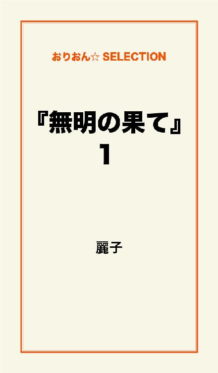
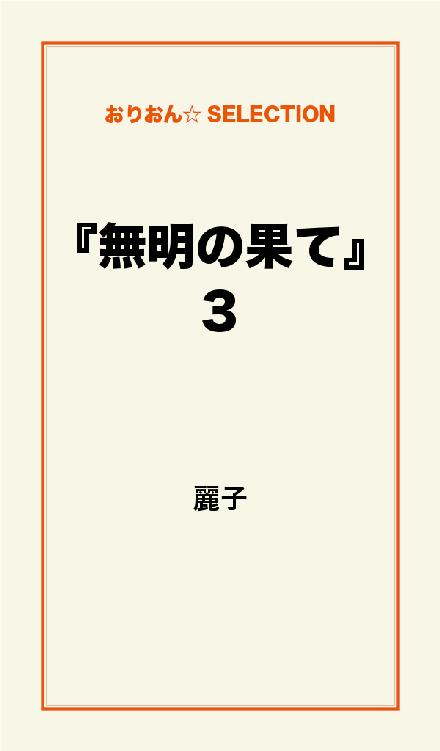

| 『無明の果て』 完全版 | |
| 麗子 | |
この本は横書きでレイアウトされています。
また、ご覧になる機種により、表示の差が認められることがあります。

恋人と呼べる男性には、ここ五年ほどお目にかかった事がない。
その五年前だって、はっきり彼と呼べる人がいたかと聞かれれば、胸をはれる自信もない。
市川麗子、三十八歳。
仕事はそれなりに順調で自由に出来るお金も手に入り、はたから見ればバリバリ"キャリア"に見えるんだろう。
それが私の納得のいかない人生の根源を作っているのだ。
部下が男性なのは真面目に仕事をした結果で男性に負けまいとしているわけじゃないし、「こわ～い」
と女子社員が噂しているのも私の耳までしっかり聞こえてくる。
何なんだ。
どうしろと言うんだ。
今さら「コピーとりま～す」とか言ったら、かえって嫌味に映るだけだろう。
私は焦っている。
ある日風邪をひいて熱を出し、食べる物もなく、殺風景なマンションでひっそり死んでいるのを三日後くらいに発見される......。
そんな恐ろしい妄想さえ、閉じた瞳のその裏にしっかりと浮かんでくる。
下着くらいは恥ずかしくないものを準備しなくちゃといらぬ心配をするのも、余計な妄想だとわかっている。
せっかくの休日も午後になって目覚め、買いだめしてあるジャンクフードを食べる。
そのまま一歩も外へ出る事もなく、ひとり夜を迎える週末にいつからかすっかり慣れてしまった私がここにいる。
私が男でもこんな彼女はお断りだ。
決めた。
このままでは腐乱死体へまっしぐらだ。
明日の朝から違う私になって、「シアワセ」とかいうやつをこの手につかむのだ。
ふと鏡に映った自分を見れば、そこにはつまらなそうな女がひとり佇んでいるだけだ。
少し無理して笑ってみた。
そして束ねていた髪を下ろし、いざというときのために大枚をはたいて買ったモガのスーツを着てみた。
今日がいざというときなのかは別にしてもなかなかいい女に見えるじゃないの。
派手過ぎない化粧でイメージアップ大作戦だ。
会社で陰口を言われても、やるときが来たのだ。
そして翌朝、背筋を伸ばしヒールの音も軽やかに私は家を出て、歩き出した。
駅へ続く道の途中、思わず歩幅も広くなる。
なのに......
「うわっ！」
「ごめんなさい」
路地から誰かぶつかってきた。
私の人生はとことんついてない。
「大丈夫ですか？」
ドラマならここで運命の出会いになって、BGMにスローバラードでも流れる場面だ。
その声に顔を上げた私は、よろけた身体を立て直すことも忘れその人の顔を見た。
なんて綺麗なんだろう。
こんな美しい青年を今まで見た事はない。
でもあまりに若く、気持ちとはうらはらに
「大丈夫です」と気丈に振る舞う。
せっかくのスーツが少し汚れたが、「シアワセ」のためのおまけだと信じよう。
幸先がよいのか悪いのか、会社では予想通りあちこちでヒソヒソ噂話している。
気にならないと言ったら嘘になるけれど、そんなことより、今日からの新人研修の事で実は手一杯だったのだ。
「よろしくお願いします。」
私が担当する新人らしき青年が、頭を下げて目の前にいる。
「こちらこそ」
「あっ......!?」
運命だ。
これを運命と言わずなんと言うんだ。
あの美しい青年がいた。
やっと神様がご褒美をくれるときが来た。
朝の出会いが私のこれからを決定させていたのだ。
私は胸躍らせ、これ以上はないほどの微笑で右手を差し出し頭を下げた。
それと同時に思いっきり後頭部をベッドにぶつけ目が覚めた。
うわっ！ ヤバイ！ 遅刻だ。
久しぶりに見た夢は、あまりに鮮明すぎて何かを期待してしまうほどだったけど、世の中がそんなに甘くない事は、この歳ならちゃんと知っている。
今日も慌しい一日が始まる。
美しい青年の夢はすっかり忘れ、相変わらずキャリアウーマンは仕事の手を抜かない。
たかが夢だ。
現実の新人研修は、
「うまいっす」
「了解っす」
「です」とは言わない青年が相手だ。
上司が女性なのを驚きもしないのは、私が入社した頃とは時代が違うからなのか、その青年は戸惑いもせずに会社中を忙しく駆け回りながら、なかなかの頑張りを見せている。
研修も終わりに近づいたころ、その「っす」の新人が
「先輩、研修の打ち上げでコンパどうっすか？」なんて声をかけてきた。
「コ・コ・コンパ！」なんて胸踊る響き。
「"です"でしょ！ あんたいくつよ！」
なんて怒鳴らないでおいてよかった。
やっぱり人には優しくしておくものだ。
新人のくせにひと回り以上年上の上司をコンパに誘うとは、イイ根性をしているじゃないの。
「北●路欣也に似てる俺の先輩も来ますから」
北●路欣也？
どんな顔だっけ？
なんだかいいことが起こりそうな予感もしたが、いや油断は禁物だ。
なにせ、私がダントツ年上で、コンパなんて何年ぶりか思い出せないくらいなんだから。
フィーリングカップルでいえば、完全に5番の大オチだ。
聞くと、その欣也さんは私より二つ、三つ年下らしいが、私と話が合いそうなんだと言う。
私はもうスキップでもしたい気分だ。
若い女性と張り合う気はさらさらないが、声をかけてもらえた事だけでも大きな進歩と言える。
「いいね」なんて冷静に言ったつもりが、少しだけうわずった声になっていたのが自分でもわかるほどだった。
私は変わった。
「シアワセ」をこの手につかむまでのカウントダウン開始だ。
冷静を装っても勝手に顔がにやけてくる。
駄目だ。
キャリアは仕事に私情は持ち込まないのだ。
そして当日、
「4：4っす」とその新人はお店の名前を書いたメモと地図をくれた。
仕事もこんな風にテキパキやれよ！ と言いたかったけど、今はとても言えやしない。
部下の若い女子は「素敵な人来るかなぁ」と早々に着替えに向かい、「先に行ってま～す」と手を振った。
やっぱりカワイイなぁ。
お店に入るときは手を振ったほうがいいのか？
いややめておこう。
何をやっているんだ。
私はかなりテンパっている。
メモを見ながらその店に向かいドアを開けると
「先輩ここっす！」と、新人の青年が手招きして私を呼んでいる。
もうすでにみんな集まり、その視線が私を迎えた。
これで七人がそろった事になる。
「あとで自分の親友が来るっす」
ということは、この中に欣也さんがいるという事になる。
往復してみたが、そこにいたのは、北●路欣也ではなく、どこかで見た事があるような人だった。
どこかで見た事があるような人が悪いわけではないが、緊張は一気にほどけた。
ひとりひとりに気を遣い、話題提供に努力する彼はとても好感触だったが、ただ私が百歩譲っても我慢ならない事があった。
相手側だって特別私に気がある風でもないから余計なお世話かも知れないが、パンツがくるぶし丈ってのはどうなんだ。
そのセンスがその人自体のセンスに見えてくる。
さすがに勝負下着までは着けて来なかったが、私だって張りきってお洒落して来ている。
いや、そんな事はどうでもいいのだ。
こうして楽しいひとときが、私のカラッカラの人生に潤いをもたらしてくれているんだから。
「おっ！ 遅かったな」
親友だという最後のひとりが入って来た方向から、華やかな光が射した気がしたのは私だけだったのだろうか。
「うえっ！」
自分でも聞いたことのないような声が出た。
そこにはあの夢の中で見た美しい青年そっくりの若者が立っていたのだ。
運命だ。
今度こそ運命だ。
「こんばんは」
その声に、私以外の女子三人は、ハートの瞳で駆け寄って行った。
主役登場。
さてこんなとき、キャリアウーマンは、いったいどうしたらいいんだ......？
ジャニーズ系も真っ青なほどキラキラ美しい青年は、やはり今年社会人になったばかりの今どきの若者だった。
今日は親友のつき合いで、この場所に顔を出したに違いない。
だって、何もこんな所へ出向かなくても、この美貌なら引くてあまただろうに。
現に他の男性は、私以外の女子が彼のそばに移動したことにショックを隠せないでいる。
こんなとき、欣也さん、いや本当は正幸さんというらしい彼達に声をかける役目は私しかいない。
まるで母親のようだ。
私だってそのキラキラに吸い込まれそうだったけど、さすがに駆け寄る勇気は持ちあわせていなかった。
今までの免疫があまりに乏しく、応用のきかない四十前の女は、仕事の話で場をもたせるしかないのだ。
でも、「っす」しか言えないと思っていた新人は、ちゃんと夢をもち、未来を語り、もうひとりの友人も正幸さんも家業のあと継ぎだと熱く語るのを聞くことはとても新鮮だった。
ときどきチラっと目をやると、彼女たちには申し訳ないが、まるでキャバクラ状態に彼は困り果てていた。
「あいつ、涼って名前なんすけど、ホストみたいっすよね。いつもこんな感じっす」
もはや我々は同士となり、男とか女とかを超えた、ちょっとイイ感じの時間を過ごしていた。
コンパってのも悪くない。
意気込んでお洒落しなくても、素敵な夜を過ごせるじゃないの。
くるぶし丈のパンツだって、見方によっちゃ可愛く見えるものなのかもしれない。
「おい新人！」
「鈴木一行（いっこう）っすよ」
「銀行の見本みたいな名前だよね」
「先輩の市川麗子ってのも期待させる名前っすよ」
「悪かったわね。期待にそえなくて」
そんな話をしながらも夢の中の姿と重なる彼が、本当は気になってしょうがないけど、まぁ今日は帰り際に挨拶でもして、涼さんのことは諦めよう。
「何の話？」
うわっ！
キラキラが隣に来た。
「涼、この人が例の先輩」
例の？ 例のってなによ。
ここに来る前から私を知ってたってこと？
「新人。どうせ怖い上司がいるとか言っていたんでしょ」
「違いますよ。研修の話で先輩のこと話してたんすよ。褒めまくりです」
それを聞いていたキラキラが、こっちを向いて微笑んでいる。
ニコッとするだけで、ふぬけになりそうだ。
「は、は、はじめまして」
あぁ......なんて気の利かないひと言なんだ......。
そしてまたみんな一緒に乾杯し、キャバクラ状態はなくなったが、隣に座る"涼さま"に話しかけることも出来ず、こんなとき仕事のキャリアは何の役にも立たない。
「麗子さんって呼んでもいいですか？」
いいに決まってる。
「はい」
ゴックンと唾を飲む音を聞かれたかもしれない。
「カッコイイ先輩がいるって一行から聞いてたんですよ」
今まで真面目に仕事してきて本当によかった。
泣きそうだ。
またベッドにどこかぶつけて、"夢かぁ～"なんて事にならないように願うばかりだ。
「麗子さん」と呼ばれるたび、フラっとキャリアが揺らぐ。
三十九まで、あと半年。
お酒でフラフラしたうえに、若い男性にクラクラするとは、この歳にして初めての経験である。
ただ、もちろん"恋"などというものとは違い、おそらく韓流スターにうっとりする奥様たちはこんな気持ちなのかと想像させる、そんなものである。
私だってそこまで図々しくはない。
身のほどとか、ものの尺度とか、ここまで独り身で生きてきた大人の女には、すぐに判断できてしまう力がすでに身についている。
それにしてもよくできている。
勇気を出して
「綺麗な顔してるね」と言ってみた。
「キライなんですよ、この顔。コンプレックスです」
なるほど、本人にしてみれば顔の話題ばかりでうんざりなのかもしれない。
「一行、あんたの顔、貸してあげれば」
「イヤっすよ。この顔でモテモテっすよ。今よりもててどうするんすか。涼とどこか違ってるっすか？」
「全部よ、全部。一から百まで」
「俺は涼とは違う味わいで勝負してますから。わからないかなぁ。ほら」
と、おどけたポーズで彼はみんなを笑わせている。
一行と涼が親友だというのがわかる気がする。
私の緊張も和らぎ、"涼くんは"なんて言えるようになり、いつの間にか私のほうが質問される立場になっていた。
「なんで結婚しないんですか？」
「ストレートにまぁ、そんなこと聞くの一行ぐらいよ」
なんだか気持ちよかった。
気を遣われて、会社では触れてはいけない禁句のようになっていたその壁を、新人があっさり蹴破ってくれた。
「なんでかなぁ。魅力がなかったからかなぁ」
「そんな事ないですよ。魅力ありますよ」
まさかそんな言葉を聞くとは思ってもいなかった。
「涼がそんな事いうの珍しいな」
ドキドキしていた。
幸い、お店の暗さが赤面しているのを隠してくれていたからいいものの、どんな対応をしたらよいものか、どこの引き出しを探しても当てはまるものは見つからない。
「仕事も楽しかったしね」
それを聞いていた正幸さんが、独身でいることの焦りはみんな同じだと、『せっぱつまった会』を作ろうと言い出し、ふたりだけだと言いながらお腹を抱えて大笑いした。
こんなに笑ったのは何年ぶりだろう。
「麗子さんは休みの日は何しているんですか？」
まさか、お昼過ぎまで寝ていて、ジャンクフードを食べてるとは言えないと、今までの私ならカッコつけていただろうが、思い切って正直に話してみた。
そしたら若い女の子達も「私も～」と声をそろえ、男性陣は
「だからこんな事になっているんだ」と私達を指差しまた笑った。
「遊びに行きましょうよ。なぁ一行」
一行も私もみんな笑ってうなずいている。
今日は気分のよい一日だ。
人間、素直ってのが大切だって事を、可愛いい後輩たちに教えられた。
仕事は大切だけど、それと同じくらい人との関わりも不可欠なものである。
「涼くん達はどんなとこで遊ぶの？」
すると、それを聞いていた一行が
「こいつはインドアだから、囲碁とか凄いっすよ。大会とか出てるし」
そう教えてくれた。
「えっ！ 私も囲碁出来るよ」
昔、少しつき合った人に叩き込まれて、気がついたら私のほうが強くなっていたから。
「じゃぁ今度、対局ですね」
運命だ。
なんてもう思わないけど、なんだかイイんじゃないの。
でもきっと......
でもたぶん......
いえ、決して
"恋"なんかはしないけど......。
メアドを交換し帰り支度しながら、またこんな風に会うときがくるのだろうかと考えていた。
お礼のメールくらいは大人の礼儀として送っても、それから先の行動はどうしたらいいんだろう。
「また飲みましょう」と私から誘うのは、ありなのか。
こういう事に悩んでいるようでは先行不安だけど、ここが三十代ギリギリ、キャリアウーマンの戸惑うところである。
でも素敵な人達と有意義な時間を共有出来た事を、後輩達に感謝しなくちゃ。
「一行、ありがとね。楽しかったよ。ご馳走しなくちゃね」
「それは今度お願いします。今日は割り勘っす」
たいてい、年下の連中にはご馳走するのが当たり前になっていて、私はいつの間にか「男化」していたのかもしれない。
割り勘かぁ。
久しぶりだ。
会社の連中には「また明日」でいいけど、やっぱり正幸さんも涼くんも、これっきりは寂しい。
せっかく知り合えた幸運に乗っかって、少し勇気を出してみよう。
「素敵なお店があるんだけど、近いうちお誘いの一斉送信していいかな？」
「明日でもいいですよ」と、正幸さんの言葉に、みんなも
「早くしてくださいね」と喜んでくれた。
なんだ、こんな風でよかったんだ。
みんな同じなんだ。
帰る方向が一緒の者同士それぞれが背を向け、涼くんは女の子達に囲まれ帰っていった。
私は一行とふたりになった。
「ねぇ、一行。私、浮いてなかった？」
「カッコよかったっすよ」
不覚にも涙が流れた。
明らかに驚いている彼は、
「鬼、いや、上司の目にも涙」
とおどけて私のほうを見た。
泣き笑いした顔はクシャクシャで、私は「見るな」と彼の後ろに回りこんだ。
「ひとりで大丈夫っすか。俺こっちなんで」
「明日遅刻するなよ」
「了解っす」
どうして泣いてしまったんだろう。
私がそうありたいと望んでいた言葉に思わぬところで出くわし、突っ張っていたものが弾け飛んだようだった。
涼が一行から聞いたと言っていた私の姿はどれほどのものなのか。
心地よい疲労感の中、眠りにつこうとしたときプルプルとメールが鳴った。
もう二時になろうとしている。
『先ほどはとても楽しかったです。対局も忘れないでくださいね。
おやすみなさい。 涼』
眠気が飛んだ。
ベッドに正座し、何度も読み返した。
いや特別な事ではなく、みんなに送った中の一通だ。
うぬぼれるにもほどがある。
『こちらこそ楽しかったです。今度はお誘いメールします。
おやすみなさい。 麗子』
まさかハートの絵文字は入れられない。
たったこれだけの返事に二十分はかかり過ぎだろう。
今日はなんて一日なんだ......。
鏡の中の自分に向かって「さぁお肌のために早く寝ないと」なんて言ってみた。
えっ？ メールだ。
『こっちからもお誘いメールします。 涼』
携帯を持つ手に力が入る。
眠れぬ夜がやって来た。
仕事がたて込んで寝不足が続いても、目の下のクマや化粧のりの悪さを指摘されても、好きな事をしている満足感で私は胸をはれる。
そうやって頑張ってきた。
そしてそれは、一生涯のテーマとして途切れる事はないと信じている。
しかし、カッコイイなんて少しでもお声がかかるうちに、誰かと並んで生きていける長い道のりのスタートラインに立ってみたいと願っているのも事実である。
親が元気なうちに嬉しい報告をして、ドラマのようにハラハラ涙を流し、緊張する彼を紹介する。
そんな場面を何度思い浮かべたことか。
あの夜、メールのやりとりは四時近くまで続き、『西山 涼』という名前と、返信不要の最終メールを受け取り私はやっと眠りについた。
涼は一行と過ごした学生時代の話や、一行の前の彼女がひとつ年上だったこと。
そしてその彼女が、なにげに私に似ていることなどを教えてくれた。
だけどそのことは、一行には言わなかった。
悪い事をしているわけではないが、なぜか話せなかった。
それから何日かが経ち、研修後の一行の配属は私の管轄外になり、一行のデスクは見えない場所に移され、私は彼の頑張りを私なりに見守るだけになった。
たまにはランチに誘って、あのとき約束した次の集まりのセッティングをしなきゃ。
涼はちゃんと来るかな。
「鈴木、鈴木一行くん」
「おぉ、先輩。元気っすか？」
「うん元気。頑張っている君に、お昼をご馳走しようと思って」
「マジすか！」
あの夜、一行の前で流した涙のわけを、彼は聞かない。
気まぐれな女だと笑っているかもしれない。
慌しくお昼を食べながら
「週末あたり、予定ある？」
「ガラガラっす。イイっすね。先輩が幹事っすよ」
「じゃあ、時間と場所は一斉送信するから」
「どこっすか？ 俺には今教えてくださいよ。それとも今晩下見ってのはっダメすか？」
やっぱり私は、元カノに似ているのかな。
「じゃぁ、仕事早く終わらせなさいよ」
「プレッシャーなんかに負けないぞ！ なんつって」
こんな素直に生きてきたらよかったのかな。
一行みたいな弟がいたら、どんな所にでも連れて行くだろう。
嫌がるのを強引に腕なんか組んだりして。
「あれから涼と連絡とったんすか？」
「ううん」
嘘をついてしまった。
「俺も連絡してないんすよ。あいつも忙しそうだし、また囲碁の大会があるらしいし。
見に行ってみませんか？」
夜中のメールでそのことは知っていた。
『ペア碁っていうジャンルがあるんですが、いつか大会に出てみませんか？』
とお誘いも受けていた。
ここに来て急に、若者達が私の常識や観念を揺り動かす。
「プレッシャーに負けないぞ」と叫びたいのは私のほうだ。
その夜、一行は少し緊張気味に私を待っていた。
カウンターだけのショットバーは、私のお気に入りの店である。
「いい店っすね」
ポツリポツリ席が埋まり、残り二つだけになったとき、静かにドアが開き、背の高い女性が「座れるよ」と言いながら入って来た。
その後ろには、微笑んだあの美しい涼が立っていた。
偶然というのはドラマの中だけかと思っていた。
急に背筋が伸びた。
一行がはじめに声をかけ、
「おっ、涼」
「こんばんは」
私も続けて声をかけた。
涼は連れの女性に何か言い、ひとりで私達の所へ来た。
「この間はどうも。メール待ってるんですけど、今度はいつか決まりましたか？」
「それの打ち合わせで一行を誘ったの。涼くんもここ、よく来るの？」
なんだか早口で一気に喋ってしまった。慌てた心を見透かされまいと。
「初めてです。まさかこんなとこで会うなんて、びっくりしました。じゃぁ、連絡待ってます。一行おまえ、久しぶりのデートじゃねぇの？」
「だよなぁ。おまえとは違うんだよ」
「麗子さん、一行をよろしく」
そう言うと、涼はずっと離れた席に、連れの女性とふたりで座った。
「涼くんの彼女？」
「いや、知らないっす。涼は特定の彼女はいないんじゃないかな。学生の頃ひどいフラレ方して変わったんすよ」
「ひどいってどんなよ」
「二股です。それも仲の良い友達だったんです。俺もよくつるんでたやつ。結局みんなバラバラになって、俺も涼以外とはつき合わなくなってしまって。女は怖いっす」
みんな意外な経験をしているもんだ。
「その彼女に、なんとなく似てるんですよ、先輩の雰囲気」
なんだよ。
あっちもこっちも。
私には、特徴ってものがないのか。
「変わったって、何が？」
「涼は女の子から言い寄られると、ダメなんすよ、きっと。あの容姿だから目立つし。その気になれば、すぐ彼女だって出来るだろうけど、簡単じゃないっすよ。学生の頃は、もっと弾けた感じだった気がするなぁ」
そうか、女は怖いのか。
別の意味で私は怖がられているかもしれないけど、女はそんな資質も必要なのかもしれない。
「この店に来るときはひとりですか？」
「そうよ。寂しそうに見える？」
「憧れます。俺がひとりで来ても無理してるようにしか映らないでしょ？」
なんだろう。
一行には何を話しても、突き放したりされない安心感がある。
社会に出たばかりの頃、必死で負けまいとした私とは大違いだ。
「一行はさ、もてたでしょ？」
「全然っすよ。フラレっぱなしです。口説くなら今っすよ」
「あら、じゃぁ今日は帰さないわよ」
なんて、ふたりで笑うのは今までには感じた事のない、ちょっと照れくさいものに思えた。
チラチラ涼を見ると、やはり彼女はキラキラの瞳で楽しそうである。
ヤキモチではないけれど、やっぱりちょっと気にはなる。
「一行、来週でいいよね。正幸さんも来られるといいけど」
「ねぇ先輩、なんで俺の事呼び捨てなんすか？」
「えっ、ダメだったの？ イヤだった？ ごめん」
「違いますよ、逆です。鈴木くんとか言わないでくださいね」
「なんだ一行、そうか一行、これでいい？ 一行」
「うるさい」
「そろそろ出ようか」
と席を立ったとき、バッグの中でメールが鳴った。
『楽しそうで少し妬けます 涼』
元カノに似ているらしい私に、幻でも見ているの？
次の日、あのときと同じメンバーに、お酒とお料理の美味しいお店を知っているからと、近況報告を兼ねてのお誘いメールをする事にした。
当初の私の目的は果たせそうもないけど、それは次のチャンスを待つことにしよう。
素敵な仲間が、そのまた素敵な誰かを呼び寄せてくれるかもしれない。
実際、涼という美しい友人が出来たように。
一斉送信後、続々と返信が届き、正幸さんからのメールには腹を抱えて笑った。
『待ってました！ "せっぱつまった会"は私ひとりになってしまったのかと思ってました。見捨てられ、このまま死んでゆくのかと淋しい毎日でした。必ず出席するんで！ よろしく』
私と同じような心配をしている。
そして涼には、あの日家に帰ってから少し長いメールを送った。
一行といるととても楽しく過ごせること。
本当は涼くんともお話したかったけど、隣の女性に悪いと思い声をかけなかったこと。
会えて嬉しかった事。
私が元カノに似ているらしい事は書かなかったけど。
深夜になってから
『一緒ににいたのは、同期入社のコです。
楽しそうに一行と何を笑っていたのですか？
麗子さんみたいな上司がいる一行が羨ましいです。
面倒なのでこれから電話します』
うぇ～!?
どうしたらいいの。化粧でも直すか。
なんてあたふたしているうちに、ベルが鳴った。
「麗子さん。もう寝るとこでした？ メール面倒だから」
「ふぉい」
「はい」と言おうとしたのに、喉がカラカラだ。
「大丈夫。私もお話したかったから」
あれっ!? 今私は何を口走ったんだ。
「本当ですか？ 嬉しいなぁ。調子に乗っちゃうなぁ」
涼は本来、弾けた若者だというのがなんとなくわかる。
一行が言っていたように、美しさが彼の性格や行動を抑制させ、他人が勝手に涼を造りあげている。
「この間一緒にいた人、彼女かと思ったよ」
「やっぱり。同期入社はふたりだけなんで、話す機会が多いんです」
「そうだったの。一行は頑張ってるよ。違う部所になっちゃって寂しいけどね」
「そうですか。一行は本当にいいやつなんです。俺が女ならほっとかないんだけどなぁ」
「もしかして、そういう仲だったりして」
「いやぁ～ん」
今までの印象と違う涼は、かなりのポイントアップである。
「麗子さん、飲み会の前につき合ってほしい所があるんですけど、都合どうかなと思って」
「どこ？ 私でいいの？」
「初給料で親にプレゼントっていうやつ、やってみようかなって思って。何がいいのか選んでほしいんです」
「泣かせるじゃないの涼くん。いいよ。じゃ、どこかで待ち合わせする？ まかせておいて」
「よかったぁ」
それから、あれがいい、こればどう？ と盛り上がり、結局定番だけどおそろいの時計にしようということになった。
「なんだか恥ずかしいな、ペアウォッチ」
「そんなことないよ。喜ぶと思うよ」
最近の若者は......なんて歳だとは思ってないけど、涼も一行も歳の離れたキャリアウーマンをしびれさせている。
愛とか 恋とか 言っちゃいけない。
何度も自分に言いきかせている。
みんなが集まる日、お昼に一行を誘った。
「涼くんに、ご両親へのブレゼント選び一緒にって頼まれちゃった。それがすんだら合流するね」
一行には事前に言うべきことだと思ったのだ。
おどけた返事が返って来るものとばかり思っていた。
「いつの約束ですか？ あのバーに行ったときですか？」
「そう。メールもらって、ちょっと電話で話したかな。なによぉ。ヤキモチ？」
「はい。ヤキモチっす」
は？ なんだ？
「一行、お昼はご馳走するわよ。そんなヨイショしたってあとはコーヒーくらいしか出ないわよ」
顔がピクついて、うまく喋れない。
笑わない一行は、なかなか上を向かないし。
「やっぱり涼か」
「なにがよ。ただの買い物のおともじゃない。特別な意味なんか何もないよ」
まるで恋人に言い訳しているようである。
「違うんだなぁ。涼がそんなこと頼むの先輩だからっすよ。まいったなぁ......」
よくわからない。
一行の言っている意味が。
「特別なことなの？」
「前に話したじゃないですか。アイツは自分からは行かない奴なんすよ」
ふぅ～ん。
でも、私が特別だとはとても思えない。
「一行、私が親に近い歳だから言いやすかったんでしょう。一行のお母さんだって、私とそう変わらない歳なんじゃない？」
これだけは言いたくなかった言葉だ。
親子ほども歳の離れた若者に、年齢の確認をさせている。
「しょうがないか。でも遅れないで来てくださいよ。まいったなぁ......」
一行に黙って出かけていたら、どうなっていたんだろう。
いや、どうにもならないに決まっている。
「さ！ 仕事っすよ。ボヤボヤしない！」
「うわっ、上司に向かって大胆発言」
一行は気持ちの切り換えを、さりげなく相手に合わせてくれる。
私にはとうてい真似の出来ないことだ。
午後の仕事は会議だの、打ち合わせだの、アッと言う間に時間が過ぎた。
一行は外回りらしく、「そのまま行きます」と言いながら飛び出して行った。
同じ仕事をする仲間と人生の変化を迎えることなど考えたことはなかったけれど、ふっとそんな事が頭をよぎる瞬間がある。
みんなそろそろ出かける準備を始める頃だろうか。
私も待ち合わせの場所へ向かおう。
人混みの中、遠くからでも涼の姿ははっきりわかる。
私に向けた微笑みは、ライトアップされたようだ。
「麗子さんここです」
あらら!? 駆け出してしまった。
デートでもあるまいし。
「一行に話してきたよ」
「なんて言ってました？」
「ヤキモチだって」
「この間のバーのときの俺と同じだ」
返事に困るような事が続く。
「素敵なものが見つかるといいね」
傍目には姉弟といったところか、美貌が逆ならどんなに幸せかと思いながら、あれこれ探し歩くひとときは、私に罪な勘違いをさせる。
「ありがとうございました。やっぱり俺じゃ選べないや」
「いつでもご利用ください」
そしてみんなで飲みはじめてから一時間が過ぎても、まだ一行はやって来ない。
少し遅れるとメールはあったものの、一行がいない集まりはかなり盛り上がりに欠けている。
それでも、顔を会わせるのが二度目とあって近況報告や、仕事の話が尽きる事はない。
「幹事さん、一行はどうしたの？」
正幸さんも気にかけている。
「ホント、遅いね。仕事が長引いているってメールだったけど。電話してみようか」
私は外に出て一行を呼んだ。
「あっ、一行？ どうしたの？ みんな待ってるよ。」
「すみません。今行きます」
「飲んでるの？」
明らかに一行は酔っている。
テンションの低い声は、私の知らない一行だ。
「何かあったの？」
「今行きます」
少しムッとしたが、ここは大人の対応が必要だろう。
私は何もなかったように
「今来るって」そうみんなに言った。
涼もなんとなく入り口のほうを気にしている。
「遅くなってすみませ～ん」
いつもの一行が少し赤い顔で入って来た。
みんなにお酌をされて乾杯をし、遅れた時間を取り戻すかのように、盛り上げ役に徹している。
何があったんだろう。
一行らしくもない。
相変わらずモテモテの涼は、女の子達に囲まれているし、幹事としては何かと気をもむ会になった。
今日はなんとなく、一行と涼が話をしていないように感じるのは気のせいだろうか。
いや男同士なんて、きっとこんなものなんだ。
こうなったら定例会にしようと、正幸さんが会長をかって出た。
嫁が見つかるまで会長は辞めない約束で。
しめは、『永遠の会長に乾杯』を捧げ、散会となった。
「麗子さん、今日はありがとうございました。また連絡します」
涼は小さな声で言うと、足早に帰って行った。
一行とふたり、泣いてしまったあの日と同じ道を歩く。
「一行、今日はどうかした？」
「先輩、この間泣いたのはどうしてですか？」
「言わなきゃいけない？」
「いけない」
「私ね、この歳まで仕事ばっかりしてきたでしょ。一行に誉められて嬉しかったの。誉められ慣れてないのよ」
「今日遅れたのは仕事じゃないっすよ」
「えっ？ どこにいたのよ？」
「先輩と行ったバーです。ひとりで飲んでました。先輩が涼とふたりで来る所にいたくなかったんです」
私の心を運命という力が、今までとは違うどこかへ、形を変えながら静かに静かに、確実にそれを動かそうとしている。
世間の目や、しがらみや、常識や、そして歳の差......。
「一行、私の歳知ってる？」
「同級生じゃないことは確か」
「バカ」
「先輩、俺、今まで涼にヤキモチやいたことなんてないっすよ」
一行は急に立ち止まり、右手を私に差し出した。
えっ!? 何をしたらいいの？
「手」
つなぐの？
私の右手を、一行の両手が背中越しに包んでいる。
暖かい体温は、私の身体に蓄積されて火がついたようだ。
どうしたらいいの？ 一行。
こういうキャリアは持ち合わせてなどいないから......。
一行と手をつなぎ、何も話さずずっと歩いた。
何か言うと放してしまいそうな指は、今はとても大切な秘密のようなもの。
「先輩、嫌じゃないですか？」
「嫌じゃないよ」
「もう少しこのままでいいですか？」
「いいよ」
一行、私はとっくに気づいていたよ。
はじめから、私を見つめてくれていたこと。
私だって踏ん張っていたんだよ。
気づかないふりをして、仕事仲間のままなら、一行にはそのほうが意味のある生き方が出来るんじゃないかって。
本気で誰かを愛する事をあんなに待ち望んでいたはずなのに、なぜこんなに切ないの。
なぜ飛び込めないのって。
「一行、私ね、どうしていいかわからないの」
「俺と涼のことですか？」
「違う。一行は勘違いしてるよ。涼くんは私のことなんか、何とも思ってないよ。プレゼント選びながら、何度も一行をよろしくって頭下げられた。涼くんのこと、一番わかっているのは一行でしょう？」
「あぁ、そうかぁ。俺は駄目だなぁ。小さい男だなぁ。先輩に嫌われちゃうかな」
「私のそばにいること自体、もうずいぶん呆れてるけどね」
「先輩を見てるとやる気が出て、仕事って楽しいものなんだって言われてる気がして、社会人になったばかりの俺には凄く頼もしかった。こんな小さな身体のどこに、あんなエネルギーがあるのか不思議だった」
"負け犬"だのと、流行りの言葉に躍らされた昔の私は捨てたはず。
「一行、手を離すよ」
「ごめんなさい。やっぱり迷惑っすよね」
人生最大の告白タイムである。
爪の先まで心臓の音が響いてくるようだ。
「一行聞いて。言うよ。鈴木一行さん、第一印象から決めてました。つき合ってください。
よろしくお願いします」
一行の正面で右手を出し、頭を下げた。
一行は大きく目を見開き、私を見つめたまま動かない。
「カッコイイなぁ。だめだめ、先輩、今の撤回してください」
えっ!? 死ぬほど勇気出したのに。
一行は直立し、
「市川麗子さん。なんの取り柄もない俺ですが、あなたの事が好きになりました。つき合ってください。よろしくお願いします」
一行の愛しい右手が目の前にある。
「こちらこそ、よろしくお願いします」
涙で声にならない。
「先に言おうと思ってたのに、ここぞってときに俺はなんて甘いんだ」
そう言いながら、静かに抱き締められた。
一行は頭ひとつ大きい体全部で、もう一度私を強く抱き締め「麗子ちゃん」と呼んだ。
運命なんて、どこでどう転がるのか神様は罪つくりだ。
これから私達に何が起きても、それはそのときのこと。
一番大事な人になった一行が、隣にいてくれる事だけで生まれてきた価値がある。
会社ではさすがに私達のことは隠していたが、せっぱつまった状況ではなくなった事を会長やみんなに報告すべく、早々に集まりを開く事になった。
会社の若い女の子もメンバーだから、世間にバレるのも時間の問題だろう。
私は平常心を装えるのか、いや、そのままでいいんだ、なんてシュミレーションしてみた。
「麗ちゃん、さっきからブツブツ何言っているの？」
一行はあれから私を"麗ちゃん"と呼んでいる。
「みんなの前でいつも通りでいられるかの練習」
一行は優しく笑って、
「大丈夫だよ。この間と違ってていいんだから。その報告するんだから」
長いこと突っ張ってきたキャリアウーマンが、心底身についてしまった悲しい性である。
「そうだよね。私、なにやってんだろ？」
「麗ちゃんがこんな人だって、会社の人達は知らないよね」
「こんな人って、どんな人よ？」
「ググゥ～」
「何がおかしいのよ、失敬な！ 残業させるぞ」
「子どもっぽいとこなんか、ひとつも見せないでしょ。俺にはすぐわかったけどね」
「うっそぉ～」
見せないんじゃなくて、一行にしかわからないことだったんだよと言いかけたけど、恥ずかしくて言うのはやめた。
「あれから涼くんに連絡した？」
「うん、電話した。けど、麗ちゃんのことはつき合ってるって事以外話さなかったよ」
「ふぅ～ん。一行、涼くんが私を好きだって、はじめから思ってたの？」
「うん」
「ばっかじゃないの！ 一行みたいなモノズキはそういないって」
「麗ちゃんには連絡入った？」
「ううん。私にはもうよこさないよ。ふたりで会うことだってないでしょ。考え過ぎ。うわぁ～い。私、ヤキモチ焼かれてる」
「調子に乗るなよ」
そのうち雷にでも打たれて、体の中を電流が走り、変な行動に出るなんて事がないように祈るばかりである。
それほどの幸せがやって来た。
正幸さんからは
『会長になったとたん、腰抜かしそうになりました』
とメールが届き、『今までと変わらず楽しく飲みましょう』と締められていた。
来月にせまった私の誕生日で、三十代ともあと一年のつき合いになる。
一行の歳と比べれば、めまいを起こしそうになるのも不思議ではなく、これから先きっと心の葛藤もあるだろう。
「パーティやろうね。誕生日パーティ！ ふたりでケーキ半分ずつ食べるの」
何年か前、味気ないケーキを1ホールひとりで全部食べた話を一行は腹を抱えて笑った。
「食い過ぎ」と何度も言って。
そしてこの日、会長の呼びかけで集まった場所は、賑やかな居酒屋の一室だった。
私達の事をみんなに打ち明けると、会社の若い女の子達は
「先輩のおかげで勇気湧いてきました」
と 泣いてる子までいる。
「黙ってる自信ありませ～ん」と。
一行は照れもせず、"先輩"とも"っす"とも、私にはもう言わない。
そして、結局この日ここに、涼はやって来なかった。
涼がいないことで、女の子達は物足りなさげで、やはりちょっとつまらなそうである。
連絡も入らないのは、何か急用でも出来たのだろうか。
こんな風に、ひとり抜けまたひとり抜けフェイドアウトしていくというのは仕方のない事なんだろう。
寂しいけど。
一行と涼の仲が、あれからどんなつき合いになっているのか私は聞いていない。
もちろん私から涼に連絡を入れる事はなく、今だって涼が私の事を好きでいたなんて思ってはいない。
本音を言えば、そう自分に言い聞かせている。
電話やメールのやりとりを考えれば、私にだって思い込みだけでは片づけられない、深く感じるものがあった。
だけど何も起きはしなかった。
一行が私を選んだように、私も一行を選んだ、それがすべてである。
一行は仕事帰りに私のマンションへ寄り、そのまま泊まる事もあれば帰る日もあり、面倒だからここに引っ越して、一緒に暮らそうと話している。
それがどういう問題を引き起こしても、今は心配することなどやめておこう。
今日は珍しく学生時代の仲間達との集まりがあり、ここへは寄れないとメールが入った。
涼も一緒だろうかと考えたけど、聞くのはやめた。
一行が隣にいないのは、ぬるいコーヒーを飲んでるようで何か気の抜けたようでもあるけど、久々にバリバリのキャリアウーマンは、ひとりで飲みに行く事を選ぶのである。
一行と行ったっきり、あのバーのドアは開けていない。
今日はゆっくりと色々考えるのもいいかもしれない。
少しお洒落して、化粧も直しドアを開けた。
まだ時間が早いのか、私が一番の客のようだ。
「いらっしゃいませ。お久しぶりですね」
馴染みのバーテンさんが微笑んでいる。
「本当に。バナナダイキリを」
「かしこまりました」
気の利いた大人は余計な事を言わないものだ。
読みかけの本を眺めながら、ここ何ヶ月かの出来事を振り返っていた。
自分を変えようと心に決めて、それから出会った人々との関わり。
人生は切り拓いていくものなのか、はじめからそういう運命だったのか、それはずっと先、いずれわかることなんだろう。
「こんばんは」
本に夢中で、誰か入って来たのも気がつかなかった。
涼だ。
「こんばんは。ひとり？」
「となり、いいですか？」
ドキドキしすぎて思わずグラスを強く握った。
「一行はこれから来るんですか？」
「ううん、学生時代の集まりだって。涼くん聞いてない？」
「連絡来てないなぁ」
「あぁそう、変だね」
「麗子さん元気でしたか？」
「うん、元気。この間の飲み会来なかったから、みんなつまらなそうだったよ」
「すみません。ちょっとストライキでした。麗子さんにフラレちゃったから」
涼、怖くて続きを聞けないよ。
「ひとりで賭けをしたんです。"一行をよろしく"って言って、麗子さんが否定したら俺の番だって。でもダメだった。だからストライキ」
私はゆっくり涼の顔を見た。
「ありがとう。うれしい」
ここは混んできたからと店を出て、なんとなくふたりで歩き始めた。
信号で止まり目を凝らすと、もう一つ先の信号を渡る人影が一行に見えた。
それも親しそうな女性が一緒だ。
「あっ一行。涼くん、隣 誰？」
「......元カノ」
えぇ......!?
ドラマじゃないんだから、勘弁してよ。
「ふたりで歩くのは、初めてだね」
「ショックだなぁ。二度目ですよ。買い物に行きました。つき合ってもらったじゃないですか」
「あ、そうだった。ごめんね。動揺してるのかな」
何か別の話題を探さないと、右手と右足が一緒に出そうだ。
「麗子さん大丈夫ですか？ なんで俺といるときに、こんな事になるかなぁ」
「涼くん、聞いていい？ こんなとき、私はどうすればいいのかなぁ？」
まさか走って行って、一行を呼び止めるわけにもいかない。
"誰？ このおばさん"なんて言われたら、高熱にうなされて三日ぐらい寝込みそうである。
一行は私達には気づかず人混みに消えて行った。
確かに学生時代の集まりには違いないだろうが、やはり平常心ではいられない。
「聞けばいいんですよ。見たよって」
「前の彼女って、どんな人だったの？」
「大学のサークルで一緒だったコです」
「あぁ、バンドやってたって言ってた」
「そう、ギターとボーカルで、卒業するころは解散してたし、詳しい事は聞いてないからわからないけど、一行から離れて行ったんじゃないかな」
一行の過去のすべてを知りたいとは思わないけど......。
私の目の前にいる一行だけが一行ではないのだ。
「一行だって麗子さんと俺がふたりでいる所見たら、驚くかもしれないですよ」
「そうか......」
でも私達は偶然だよと、やはり釈然としない気持ちが残った。
「麗子さん、もう一軒つき合ってくれませんか？」
涼と会った事を話さなければ、今日の私達の事を一行は知らないままだ。
それと同じように、私が見たふたりの事も一行は私に伝える事はないかもしれない。
わざわざ心の引っかかりを生むほうへ、進みたくはないはずだと思いたい。
「そうだね。お腹も空いたし」
涼とお店を選びながら、私はいったい何をしているんだろうと考えていた。
根拠のない不安の中、涼に救いを求めている。
「気分を悪くしたら許してね。涼くんの好きだった人はどんなコだったの？」
「可愛かったですよ。待ち合わせすると走って来るようなコ。麗子さんに買い物つき合ってもらったとき、走って来たから思い出しちゃった」
「会ってないの？」
「会いたいとは思わないです。一行に聞いてませんか？ 別れた理由」
「聞いた」
一行はどんな理由で元カノと会っているんだろう。
肌寒い夜、人恋しい夜、隣にいるのは一行ではない。
「ごめん。やっぱり帰るね」
「麗子さん、俺のチャンスカードはもうないですか？」
背中に投げかけられた言葉はあまりに重い。
「おやすみ」
聞こえないふりをしてタクシーをひろった。
後ろ髪が引かれて、ほどけないくらい絡まっている。
その夜遅く、一行からのメールは
『盛り上がっていて 抜けられないので、先に寝ていてください』というものだった。
ちゃんと連絡をくれる一行だけど、やはり少し疑っている私がいる。
きっと一行は納得のいく説明をしてくれると期待しているが、目に焼きついたあの姿はなかなか消え去るものではない。
わざわざ私を選んでくれた若い一行を束縛する気はなく、詰めよって責めるなど有り得ない事である。
が、だけど、だけどである。
嫌な女になりそうな予感がする。
夜中一時を過ぎ、休もうとしたとき一行からの電話でこれからここへ来ると言う。
少し酔っている声はとても明るい。
「麗ちゃん、これから行ってもいい？」
「うん」
私の気持ちも知らないで......。
でも今晩はゆっくり休ませてあげたほうがいいんだろう。
私の元へ帰って来る人がいることは幸せなことなんだから。
二時近くになってやっと戻った一行は、そのまますぐに寝てしまった。
私の隣で眠る姿は無防備で、偽りなどどこにも見当たらない。
今日一行がここに来なければ、眠れない夜をひとり過ごし、妄想だらけの膨張した構想が出来上がっていたはずである。
朝になり、いつもと同じ道を会社へ急ぐ。
ここからはキャリアの違いが表れる領域だ。
一行は昨夜の事には何も触れてはいない。
私から聞く事もしていない。
でも私は話すつもりである。
一行を見た事ではなく、涼と会った事を。
そして、涼に言われた言葉をその意味を一行に伝える。
私のこれからは、私の一歩先から手をさしのべ離さずに歩いてくれる一行を信じて生きていく事なのである。
昨夜一行の眠る顔を見ながら、私のもっているそのすべての力で受けとめる度量を、試されている気がした。
私は一行を確かに愛している。
「一行、今日は私遅いかもしれない」
「わかった。誕生日まで三日だよ。その日は大丈夫そう？」
「朝から辛い話題だわ。どこか食事の予約でもしてくれたの？」
「楽しみにしててくださいよ。麗ちゃん」
一行は何やら、計画を立てているらしい。
私の気持ちも知らないで。
仕事がたて込み、涼の話を出来ないまま、一行とゆっくり時間がとれない日が続いた。
その間、涼から短いメールを何度か受け取ったが返信はしていない。
メールには、
『また偶然があるかもしれない事を期待して』とある。
チャンスカードは、この間使い果たしていると、メールに書いたが未送信のままになっている。
いつからか私は、誰もいなくなった会社でひとり大きな窓から外を眺めるのが好きになっていた。
意欲と疲労感の狭間で、キャリアウーマンと呼ばれる事への拒否反応と戦い、泣いた事も一度や二度ではない。
そして、この夜空を眺めながら涼への未送信メールを送った。
明日は私の誕生日である。
三十九という諦めのしがたい一年が始まる。
ひとり会社を出てすぐ足が止まった。
なんで？
チャンスカードはないんだよって、メール読んでないの？
「偶然は待ってられないから」
涼、レッドカードはどうすればいいのよ。
「さっきメール送ったよ」
「読みました」
涼が以前、二股をかけられて苦しんで、彼女も友達も失った話を思い出した。
そんな場面を涼は、知らぬ間に呼び寄せてしまうのだろうか。
どうして私で、どうして一行なのか、出会ったときにはこんな日が来ることは考えもしなかった。
「麗子さん、怒ってますか？ 自分でもどうしたらいいのか、よくわからないんです。何やってんだか」
「お茶でも飲む？ でも時間はあまりないの。それでもよかったらお話しようか」
「一行に聞きましたか？ この間のこと」
「聞いてないよ。聞くつもりもないし。聞く必要がないの」
明日の誕生日まで、ひとりでいたかった。
「そうなんだ。やっぱりカッコイイなぁ。わずかな隙間に入り込もうって、姑息な手段ではたちうち出来ないって事ですね」
「涼くんはさぁ、一行とどんなつき合いをしてきたの？」
ゆっくり歩きながら涼は言った。
「俺はいつも二番目だった気がします。一行は意識してないけど、勝手にトップ走って、苦しい顔ひとつ見せないでいるんです。俺には真似が出来ない。近くにいるだけに、それがよくわかるんです」
「そうだね。一行はいつも自然体だよね。肩の力がいい感じに抜けてる」
涼は私に恋したわけではなく、一行が選んだ私に憧れているんだろうと私は思った。
「涼くんは、私が好き？」
「好きですよ、すごく」
「どんなところが？」
「どんなところって、うまく言えないけど」
「私ね、一行が私の事を嫌いになっても、涼くんのことは愛せないと思う。一行にフラレたからって、次は涼くんの番って話じゃないでしょ」
「待ってようかなぁ」
「うわっ、ひどい。フラレると思ってるのね」
こんな風に笑い合いたかったのよと思いながら、このままここでひとりになろうと思った。
「涼くん、今度は一行も一緒にね。離れていっちゃ嫌だよ。いい？ わかった？ これは、希望じゃなく、お願いね」
「はい」
「聞こえないよ」
「麗子さん、一行と会う前に俺と出会っていたら、どうなっていたと思いますか？」
「涼くん、一行と会っていなくても私は私よ。"もし"は過去の話でしょ。過去の心配はしない事にしたの。一行が元カノと会っていたのは事実だろうけど、一行のこと信頼してるの。あのときはたまたま見ちゃったけどね一行と会わなければ、涼くんとも会ってないよ、きっと」
「麗子さん、明日誕生日でしょ。初めて会ったとき、生まれた年は言わなかったけど月日だけは教えてくれた」
「年もバレバレだけどね」
「最初で最後のプレゼント」
と、涼は綺麗にラッピングされた箱を私に差し出した。
「フラレっぷりはいいんです。お誕生日おめでとう」
そう言うと、涼は走って私の前からいなくなった。
その箱を開けてみると、その中にはふたりで時計を探しに行ったとき、私が気に入ったと言って腕にはめたピンクの文字盤の時計が入っていた。
泣くのはおかしい。だけど、泣けてくる。
泣きながら左腕につけた時計は、もう十時を過ぎようとしていた。
通りがかりに目についた初めての店のカウンターで、静かに明日を待っている。
一行には、『ひとりで一杯ひっかけてから帰ります』とメールを入れた。
『麗ちゃんらしいね。何杯でもどうぞ。探してみたい気もするけど、今日は待ってるよ』と返事はすぐに返ってきた。
私の三十八歳はもうすぐ終わる。
ジントニックは喉に心地よく染み込み、涼がくれた時計は明日へのカウントダウンを始めた。
後ろのテーブルから聞こえて来る声は、次の休暇の予定のようだ。
休暇......。
久しく触れていない言葉に、その様子を想い描く。
休暇。
私には、足りないものがまだまだたくさんあるはずだ。
足早に過ごしてきたひとりの時間と引き替えに、意味のある尊い未来や、かけがえのない愛しい人々が目の前にいる。
私がひとりでこうしていることを、一行は"らしい"と言う。
ふたりでいるときのほうが本当の姿であるような私に、今日からの私はなれるだろうか。
涼がくれた時計を、一行は
"よかったね"
と微笑んでくれるのだろうか。
秒針を見つめながら、涼にメールを送った。
一行にではなく。
『ちゃんとお礼を言わなかったね。素敵な時計をありがとう。大切にします。
先ほどご承知の通り三十九歳になりました』
時間はどんなときでも、同じリズムで未来へ向かうのだ。
今日だけが特別な私ではないはずだけど、やっぱり特別な一日を大切に過ごそうと決めた。
『麗ちゃん、お誕生日おめでとう！ いくつになったかは知っているので聞かないから、安心して帰って来てください』
と、一行から二度目の優しいメールが届いた。
そして、涼からも。
『麗子さんが自分で買っていない事を祈っていました。
あのとき、とても似合っていたから』
涼が無理をしただろうこの時計は、バックにしまって一行の元へ帰るのがルールだろう。
そして、涼との事を、ふたりで話した涼の気持ちを一行にわかってもらおう。
「ただいま。ごめんね、ひとりでウロウロして」
「麗ちゃん、こっち、こっち。お誕生日おめでとう。また一つ、年の差がひらきました」
テーブルには、"おめでとう"と書かれたケーキがあり、大きいローソクが三本とその回りには九本の小さなローソクがともされていた。
「一行、ありがと。その太い三本は今年でおしまいね。だけど私の生きてきたしるし。うれしい。泣きそうだわ。」
こんな風に私のために、私のわがままな時間まで一緒に包み込んでくれる一行に、すべてを話すときが来た。
「麗ちゃん、さっきまで涼と電話で話してたんだよ。みんな聞いた。麗ちゃんモテモテで、彼氏としては鼻高々であります」
一行はおどけて、笑っていたけど......。
「はじめから、そうだって言ったでしょ。涼と俺は似てるんだから」
「涼くんにプレゼントもらっちゃった。ほら、この時計」
「よかったね」
"よかったね"
やっぱり一行はそう言った。
「俺も麗ちゃんに話さなきゃいけない事があるんだ」
きた。
だけど、怖くはない。
ちょっとだけ、ドキドキしているけど。
筋書きを書いて未来を決定出来るとしたら、思い通りの幸福を手に入れる道を迷いもなくいける......。
でも、それは尊い事なんだろうか。
だけどやっぱり、先のわからない毎日を期待と不安の中で暮らす生き方を誰もが選ぶだろう。
明日を知らないでいることが、夢見るということなんだから。
私の今までは、思い通りにならないことでも、きっとうまくいくと信じて乗り越えようとしてきた日々のくり返しだったような気がする。
一行が語ろうとしている事が、私の頑張りではどうしようもない事実なら、そのときはいさぎいい女っぷりを演じるしかないんだろう。
だけどそんな事を演じても、一行にはすぐ見破られてしまうだろうけど。
「この間、遅くに帰った日があったでしょ。あのときのこと」
「私あのバーで、ひとりで飲んでたんだよ」
「知らなかったなぁ。涼に聞くまで、ここにいたと思ってた。涼は何度もあの店に行ってたって言ってた。偶然に会える場所は、あの店しか知らないからって。涼がそこまでマジだったって、さっき話しててびっくりしたよ。麗ちゃん、迷ってるんじゃないの？」
「涼くんのこと？」
「俺の知らない事って、もっとあるの？」
元カノの話じゃないの？ と思ったけど
「初めての合コンの日に、メールが来たのね。それからは、何度か電話やメールが来たりしたかな。それだけよ」
「ふぅ～ん。好きとか、つき合ってとか、そういうやつ？ でもさ、どうして言わなかったの？」
「だって、そのとき一行は私の彼氏じゃなかったよ。正直、私も涼くんに興味あったしね。好きとか言うんじゃなくて、あんな綺麗な男性、見たことなかったもん。疑ってるの？」
一行は下を向いたまま少し考えていたけど、何かふっきれた様子で話しはじめた。
「麗ちゃん、学生のときバンドやってたって話したよね。そのときのドラムの奴が今度結婚することになって、レストランでパーティすることになったんだよね。そこで久しぶりに演奏することになってさ、その打ち合わせだったんだ。ボーカルがそのときつき合ってたコなんだ。あの日一緒だった」
「見たよ。ふたりで信号渡って行くとこ。涼くんに彼女が誰か教えてもらったけど、怖くて聞けなかったの。親しそうだったし、綺麗な人だったし、若いし......」
言わないでおこうと決めていたのに、しゃくりあげながら言葉をぶつけてしまった。
「ごめん麗ちゃん、先に言えばよかったのかな。そのパーティに麗ちゃんも誘うつもりで秘密にしていたんだ」
涙と鼻水でクシャクシャな顔を「あらら」と、一行は覗き込んだ。
「フラレたのはこっちだし」
一行の元カノが涼と連絡をとり、涼は"一行は年上の上司とつき合っている"と彼女に伝え、それからときどき一行の元にメールが届くらしいと言う事。
だけどそれは心配しなくてもいいと言う事を、一行は何度も私に説明したのだ。
それにしても、そのパーティで元カノと顔を合わせて、いい事なんか何かあるわけ？
「遅くなったけど、ケーキ食べようよ」
歳が増えたとたんに、余計な引っかかりも増えた気がしている。
「ケーキ入刀なんてしてみたりして。麗ちゃん、ここ持ってみる？」
一行はこういう事を楽しそうにやってしまうけど、私には結構ドキドキするシーンだということに、気がつかないものなの？
何をするにもニュートラルに戻る余裕のある感覚を忘れずに来たつもりだけど、私の履歴を書き換えるくらいの何かが迫ってくる気がするのは考え過ぎだろうか。
人生の"のりしろ"のような、余分ではない大切な役割をもつ宝を、たくさん持っていたはずなのに、今の私はなんて気弱なんだろう。
一行がきっと恥ずかしげにバースデーケーキを頼んでいただろう姿を思い浮かべれば、そんな憶測も吹き飛ぶといったとこだけど。
今日は、多すぎるロウソクでカットしにくいケーキをふたりで味わいながら、面倒な話しはやめて、穏やかな一日を過ごさなくちゃ。
「麗ちゃん、プレゼントがあります」
「なに？ なに？」
「涼にそんなのもらっちゃって、出しにくいなぁ」
「なに？ ダイヤモンド？ マンション？」
「あたり！ んなわけないでしょ。俺の給料知ってるくせに」
一行が差し出したものは、茶色の大きい封筒だった。
「ラブレター？」
「そうとも言えるけど、早く開けてみて」
中には、温泉ホテルと観光スポットのパンフレットが入っていた。
「次の週末、予約したから」
そのうち行きたいねと、話したばかりだった休暇を、ちゃんと現実にしてくれるなんて、こういうプレゼントは考えてもいなかった。
「また泣いてもいい？」
「どうぞ、何回でも」
一行が優しい事を、私は十分に知っているつもりである。
だから、元カノのことをどうこう言う前に、私の心が正直に一行に向かい、愛していく事が重要なんだと、もう一度ちゃんと思い返してみよう。
「のんびりをプレゼントです。行けるでしょ？ 美味しいもの食べに行こうよ」
「旅のしおり、作らなきゃ。おやつも買わなきゃ。バナナは絶対だよね」
まるで遠足だと笑いながら、遅くまで話し込んだ。
「麗ちゃん、それからさっき話したパーティなんだけど、やっぱり顔出してもらえないかなぁ？」
「考えておく。一行の演奏は聞きたいけど、他には誰も知らないし」
「もしかして、彼女が理由？」
"当たり前よ"と強気に出るには、素敵なプレゼントがチラチラ目に入り、
「まぁね。これでも結構ヤキモチ焼くかも」
「心配するような事は何もないよ。演奏するだけなんだからね」
そうだといいなぁ。
誰でも何かに立ち向かうとき、自分の心は自分で決める。
私はそう思っている。
自分へのご褒美にと、高価なブランドものを買ったりする話を見聞きするけど、どうも私にはしっくりこない行動に思える。
その事自体を否定するつもりなどないが、自分で自分に何を買い与えても、私にはさほど高揚する気持ちは生まれてこない。
それよりも、慌ただしさの境目、不意に差し出される温かいコーヒーのほうが嬉しかったり、澄んだ夜空に浮かぶ控え目な星々を美しいと見上げたりする時のほうが贅沢に思えたりするのだ。
綺麗ごとのようだけれど、それは誰かに認められている喜びと、受け手でいることの安堵感みたいなものかもしれないと思っている。
まぁ、比べる対象があまりに違い過ぎるけど。
一行のプレゼントは、そんな事まで見透かしているようだ。
一行と出かける前に片づけておく仕事は、大きな壁のように立ちはだかっているけど、彼の贈り物は、それをはね退けるくらいの意味のある緩やかな時間になるはずだ。
「パーティって私が行ってもいいものなの？」
「大丈夫だよ。みんなに紹介するつもりでいるんだけど、麗ちゃんは嫌かなぁ」
「その彼女にも？」
「そうだよね。そこだよなぁ。麗ちゃん、やっぱり無理かな」
「紹介はいつかして。演奏だけこっそり聞きに行くから」
私の知らない一行の友人たちは、歳の離れた会社の上司と聞いただけで、イメージを膨らませ、興味津々でいるだろう。
そこに、どんな顔をして登場しろというのか。
やはり無理だ。
「その彼女は気にしないの？ 私がその立場ならイヤだけど」
いや、元カノが涼からそれを聞いた時点で、今がなんでもないつき合いでも心穏やかではないだろう。
実際、再燃する可能性がないと保証するものは、私が信じる気持ちしかないだろうし、心配は無用だと自分に言い聞かせるくらいしか、私にやれる事は思い浮かんでこない。
「わかったよ。でも打ち合わせで何度か会う事になるけど、いい？ そのときはちゃんと言うけど」
「うん、了解。温泉の前は集まるの？」
「多分、その前の日かな」
「温泉行けなくなったりしないよね」
「何を心配してるの？ 麗ちゃん、怒るよ」
一行はほとんど私のマンションから仕事に出かけるようになり、先に帰ったとき、たまに食事の準備までしていてくれる。
パスタだったり、カレーだったり。
「あなたお帰りなさい。ご飯が出来てるわよ」
なんて言いながら。
そんな毎日が過ぎ、確実に休暇へと近づいて......それは元カノと顔を合わせる時も目の前だという事である。
そして、その日一行は、遅くなるときは連絡すると言った。
だけど夜中三時になっても、一行は戻らない。
早朝に出発予定の夢の温泉休暇は、実行されるの？
いったいどうしたというの？
眠れぬ夜が静かに暗闇をぬけようとしている。
何度も電話に手がのびたけれど、それは私の意地みたいなものが必死にやめさせ続けた。
出かける時間になるまで連絡が来なければ、私の休暇は大きな失望に包まれる事になる。
一行が隣にいることに慣れてしまった今、ひとりでいたときの寂しさより、いるはずの人がいない今のほうが何倍も辛い。
コーヒー豆をカラカラと挽きながら、ひとり旅もいいかなぁなんて強がっても、それは何の意味ももたないのだ。
コーヒーをひと口だけ飲み、ため息をついた。
結局、眠れぬまま過ごしてしまった夜を冷静に見つめ返す事は、今の私にはとても出来そうにはない難題になってしまった。
そして時計が五時を過ぎたとき、メール音が部屋中に響いた。
待ち続けたはずなのに、件名がないメールを開けるのがとても怖い。
『これから帰ります。連絡しなくてごめんなさい。帰ったら話します』
優しく"おかえり"と言うのは、これから聞かなくてはならない事柄に、似つかわしくないような気がする。
そんな太っ腹な大人の女性にはほど遠い、この沸き上がってくる感情は経験したことのないものだ。
静かにドアが開いた。
「寝てる？」
一行はいつものように明るく言ったつもりだろうが、愛しかったはずの彼の顔に少し変化を見たように感じた。
「怒ってる？ みんなに麗ちゃんのこと聞かれて、呼べとか言うからよけいに電話出来なかった。ごめんね」
「一行私ね、急ぎの仕事が入ったの。昨夜も準備であまり寝てないんだ」
「えっ!?」
「ごめんね。温泉行けそうにないからキャンセルしてくれる？」
どうしてそんなすぐバレる嘘をついたのか、自分でもわからない。
でも動揺した心を隠し
「せっかくのプレゼント、無駄にしてごめんね」
「どうしても行けないの？ 麗ちゃんのこと、怒らせちゃったんだね。どうしたらいいのかなぁ」
「そんなことないよ。一行には一行のつき合いがあるんだから。私はたまたま仕事」
用意していた観光地の案内やお菓子は、行き場を失い、私をうらめしそうに睨んでいる。
「麗ちゃん、本当はね、彼女がもう一度つき合いたいって言ってきて、その話してたから電話出来なかったんだ。麗ちゃんのことは、涼から聞き出したって言ってた。涼は自分の気持ちもあるから、なかなか教えなかったらしいけど。嘘ついてごめん」
「聞いてもいい？ それでどうするの？」
「どうにもならないよ。ただの友達」
「昨日のような事がまたあるっていうこと？」
少し時間をおいて......
「会う事はあるかな」
"会わないよ" と、言わなかった一行とこのまま出かけても、豪華な料理も美味しくは感じないだろう。
結婚しているんじゃないんだから、こんな事もあるんだろう。
だけど一行、こんなときは嘘でも
"会わないよ"
と言う場面じゃないの。
「出かけるね」
さて、仕事の代わりに私を慰めてくれる一日を、どうやって過ごそうか。
早朝、行くあてもなく電車に乗り、人気のない休日の静けさの中に佇んでいる。
ふと見上げた中刷り広告で"アンコールワット展"の告知を見つけた。
そこはいつか行こうと決めている憧れの地。
美術館なんて思い出せないほど訪れていないけど、このまま足を運んでみようか。
温泉の代わりになどならない事は明白だけれど、じっとしているとどうにかなってしまいそうだ。
本当は怖くて怖くてたまらない。
素直に気持ちをぶつければよかったのかとずっと迷っているけれど、答えがゼロになるような気持ちのよい割り切りは今の私には出来そうにはない。
朝方、"こんなとき涼なら話を聞いてくれるだろうか"と、想い巡らせている私がいた。
だけど、こんなときだからこそ声をかけてはいけないのだ。
私は涼を選ばず、涼を愛さず、涼の人生に踏み込む道を自分から除いたのだ。
涼にすがるのは、私のすべき事ではない。
私の訴えが涼の耳を汚すのは、もう一つの罪を創り出す事になる。
一行はあれからどうしただろう。
私の嘘は、逆に一行の気持ちを深く傷つけてしまったかもしれない。
引き止めなかった一行を待っていた、もうひとりの私。
そして薄い意識のまま、ひとり美術館の前に来てしまった。
休日の人混みは、容赦なく孤独という現実を私に押しつけ、息苦しささえもプラスさせてくる。
入り口のロビーに腰掛け、展示場の中に吸い込まれて行く人々を眺めなから、本当ならこんな風に出かけていたはずだった姿を想像していた。
一緒に暮らし始めて、一行のために私が出来た事はなんだろう。
仕事という理由づけで、私本意の日々になってはいなかったのか。
せっかくの"アンコールワット展"も、中に入る気持ちになれずに時間だけが過ぎていく。
今私がここにいる事は、一行がくれた私に対するひたむきな想いを、あまりにも簡単に、置き去りにしてしまったという事かもしれない。
まだ間に合うなら、時間を戻す勢いを私の願いで動かせはしないだろうか。
「一行？ 今どこ？」
「麗ちゃんこそ、どこにいるんだよ」
「美術館」
「そこの美術館には何があるの？」
「アンコールワット展」
「ずっとそこにいたの？」
「うん。本当は仕事じゃないの。ウソ言ってごめんね」
「麗ちゃんお腹空いたでしょ。もうお昼だよ」
「怒ってないの？」
「大丈夫だよ。最初から話せばよかったんだ。だけど麗ちゃん行動力ありすぎ」
「小さい頃からリレーの選手だったの」
「やっぱり。って、そういう事じゃなくてさ」
一行は電話が来る事を確信していたとそう言った。
「これから行くから待ってて。動いちゃダメだよ」
しばらくして美術館の入り口から、こちらに向かって歩いて来る一行が見えた。
両肩に荷物をさげ、汗だくで手を振っている。
「麗ちゃん、何が入ってるの？ 重かったよ。温泉に行く荷物これでいいんでしょ？ 遅くなったけど、出発しま～す」
一行、私はあなたに"ありがとう"と言うだけで、それだけで愛される事を許されるの？
「ありがとう」
つないだ手を強く、強く握り返した。
見慣れない街並みを、立ち止まり、また立ち止まりふたりで歩いて行く。
半日遅れの休暇は、この古い城下町の屋敷跡を訪れる事も目的の一つだった。
もう夕暮れに近くなってしまったけど。
いつか見た、幼い頃の記憶の中に迷い込んだようなワープした異次元の世界。
「一行の田舎にもこんな所ある？」
「あるかも知れないけど、行ったことないなぁ。こう見えても都会育ちだからね」
「一行は倉敷でしょ。倉敷って都会なの？」
「そうでもないか。でも懐かしい気がするのはどうしてかな」
ひんやりとした広い土間から中庭に続く座敷を抜け、緋毛氈の敷かれた広い廊下は、手入れの行き届いた庭園をよりいっそう引き立たせている。
指をＬ字にして額縁を作り、広い庭園にかざしてみる。
「どれどれ。俺にも見せて」
と、背中越しに一行は
「静かだね」と小声で言った。
「写真撮ろうよ」
こういう静けさを知らずに駆け抜けて来た事を恥ずかしくさえ思うような無風の空間の中で、私達の存在はあまりに小さい。
ひとりずつ庭の前に座り、シャッターを押した。背筋を伸ばして。
「一行、抹茶と干菓子どうぞって書いてあるよ。いただいてみますか？」
「飲み方なんか知らないよ」
「そんなの普通でいいのよ」
涼しげな薄もも色のあんこ玉は渋い抹茶とからまって、ゆっくり心のエネルギーを補給してくれるようだ。
「一行、つまらないんじゃない？ ごめんね。ただでさえ遅れたのに、庭ばっかり眺めて」
「ううん。そんなことないよ。麗ちゃんの休暇なんだから。麗ちゃんがここを選ばなかったら、ひとりじゃ来ることなんかなかったかもしれないしね」
「一行、来週がパーティだよね。演奏する時間になったらこっそり聞きに行くね。元カノも見てやる」
一行は少し困ったように笑ったけど、
"私はもう大丈夫だよ"と、そう伝えたつもりだった。
「そろそろ行きますか。美味しいご馳走が待ってるよ」
一行が選んだ宿の玄関には、
『歓迎 鈴木様』
の立て札があり、なんとも照れくさく、だけどそれ以上に嬉しいものでもあった。
私達は温泉に浸り、部屋に一品ずつ運ばれてくるご馳走を時間をかけて楽しんだ。
仕事は大切だけど、仕事をするための意気込みを蓄えるには、こういう事が大事だったんだ。
「一行ありがとう。最高の誕生日プレゼントよ」
「どういたしまして。いいね、温泉。また来ようよ」
こうして私達の休暇は、気持ちの隙間を埋める有意義な時間になった。
そして温泉の余韻を楽しむ暇もないまま、また慌ただしい日常が訪れた。
会社が地方への開発を進める方針を掲げてから、私の担当も範囲を広げ、一行も的確に自分のやるべき仕事をこなしているようだった。
ちょっと席を外している間に、机に書類が置かれていた。
『大阪支社 名簿』
息が止まった。
［鈴木一行 大阪支社勤務を命ずる］
新入社員としては、大抜擢である。
だけどあんまりだ。
試練というには、残酷すぎる。
パーティの日が近づいていた。
幸せになるためのセレモニーは、華やかな装いの眩しい女性達が勝負に出る場でもある。
私も何かを期待して着飾った時期もあったけれど、今となっては照れくさいような、苦笑いさえしてしまう姿にも思えるから不思議なものである。
しっかり考え、人に優しく接し、責任のもとに暮らしていれば、人となりが自然に身につく事など考えもしないで。
私もいつの日にかその真ん中の席に座り、微笑む事があるんだろうか。
だけど一行に詰め寄って、白か黒かはっきりしろと、簡単に口に出来る事柄だとはとても思えない。
まして転勤の事実を先に知ってしまっては、これからいくつもの大きな仕事を越えていく青年に、なおさら言える事ではない。
一生をかけて続くもの。
そして仕事の重要さ、面白さは、私の行動全部で一行に伝わっているはずであると、私は確信している。
だからこそ上司としてではなく一番近くにいる者として、一刻も早く伝えたいと願いながら、それを止まらせるものは、私が一行の何倍ものキャリアをもってしまっているからと思うしかないのである。
たとえ帰る場所が一緒でも、会社の人事は私の口から一行に伝えるべき事ではないだろう。
家族ではないのだから。
社会人として、私的な部分は切り放しておかないと、今の私の尋常でない精神はとても保てそうにない。
キャリアを積んできた身構えはこんなときにも意地っ張りだ。
それがいつまでもつのかは怪しいところだけど。
温泉から戻って一行は毎晩のようにバンドの練習に行っていた。
「どう？ うまくいきそう？」
「どうかな。盛り上がればいいけど、久しぶりだからね」
「楽しみだわ。ステージ衣装はどんなのか決まったの？」
「うん。普通のスーツだよ。普通のサラリーマン、社会人ですから」
私はその日、レストランで開かれるというその場所に出かける事を約束した。
声をかけることも、一行とすれ違うこともないことを条件に。
そのあとに聞かされる一行の転勤の知らせを、彼は衝撃とともに受け止めることになるだろう。
私にとっても人生の選択を考える時を迎えることになるかもしれない。
そんな事を思いながら、一行の顔をじっと見ていた。
「なに？ どうかした？」
「えっ、何が？」
「こっちばっかり見てるよ。イイ男でもいましたか？」
「はい、ここに」
ずっとここにいられればいいのに。
パーティの日は少し曇り空で、それでも新しいスーツは仕事のそれとは違い、ボタンの多く並んだ上着がとてもお洒落なものだった。
「一行、似合ってるよ。素敵なステージ衣装だわ。行ってらっしゃい」
それから少し遅れて私も準備をし、その時間に間に合うようにシックなスーツに着替え、アイボリー色のヒールを履いた。
一行が教えてくれたそこは、ビルの谷間に隠してあったような清楚なレストランだった。
オープンカフェをそのまま解放したテラスで写真を撮り、たくさんの人が話を弾ませている。
どのタイミングで、演奏は始まるんだろう。
「麗子さん、ここに来るって聞いていたから探してました。一行に一緒にいるようにって頼まれて。元気でしたか？」
「あっ、涼くん......」
張りつめていた糸が突然切れた。
「一行がいなくなっちゃう」
誰かに聞いてもらいたかったんだ。
涼の胸にすがり、私は泣いた。
涼はずっと黙っていた。
背中にそっと置かれた手に、少しだけ寄りかかっていてもいいんだよね。
「そろそろ一行の出番じゃないかな。麗子さん、大丈夫ですか？」
「ごめんね。気にしないでって言っても無理だよね」
「一行と何かありましたか？ 元カノの事ですか？」
「ううん。それとは違うの。そんなことなら、はじめからここには来てないよ」
「ん～久しぶりに会えたのに、麗子さんびっくりですよ。昨日から緊張してたんだから」
涼のシャツが私の涙で汚れないように、静かに身体を伸ばし私は涼から離れた。
こんなところを見られたら、新郎にフラレて未練タラタラな元カノみたいに思われる。
いや、それはないかな。
ここで涼と会っていなかったら、ただ静かに、一番後ろから一行の姿を眺め、私にどこか似ているという元カノを確かめ、ひっそりとその場から立ち去るはずだった。
演奏が始まると、それぞれ楽しんでいた友人達も引き寄せられるように集まり、一行達のまわりはアッという間に人垣が出来た。
一行の学生時代はきっと華やかで、夢見る日々の連続だったのだろう。
その証拠に、いつもの彼の温和な顔つきとは違い、何か目を見張らずにはいられない卓越した魅力がその場を支配しているようだった。
「涼くん、あんな一行見たことないよ。ちょっと憎らしいから誉めないでおこうと思ったけど、ボーカルも上手ね。彼女、私と似ているかなぁ」
「似てないです。似てると思ってたけど、全然違ってた。彼女の事一行に聞いたんですか。俺のところに連絡してきたから、正直に話したんだけどまずかったですか？」
「ううん。そんなことないよ。一行はね、彼女とそういうつき合いはしないって言ってた。私がへそ曲げて、グズグズ言ったりしたけど、もう大丈夫。私なんかより一行のほうが大人なのよ」
「じゃ、さっき一行がいなくなるって言ったのは何ですか？」
「涼くんに話しても、何も変わらないことよ」
「麗子さん、時間ありますか？ 一行にはあとで俺から言うんで、お茶でもどうですか？もう口説いたりしませんから。なんて」
「抜けられるの？」
「俺はただのひやかしだから、いてもいなくてもあまり影響ないんです」
一行に断ってくるからと、演奏が終わるのを待って涼はそのパーティから私を連れ出した。
約束通り、一行には声をかけず私は振り向かずにその場を離れた。
「一行に麗子さん送ってくるって言ってきました」
「さっきはごめんね。ひとりでドキドキしてたから、びっくりしちゃった」
賑やかなコーヒーショップは、人々の声が絡み合い、顔を近づけないと話す声が聞こえないほどだ。
なるべく離れていないと、またドキドキしてしまう。
「麗子さん、改めて元気でしたか？」
「涼くんは？ あっ、ほら、この時計。気に入っているの。ありがとう」
「気づいてました。似合ってますよ。そのグリーンのシャツからピンクの文字盤が光ってて、すぐわかりました」
「涼くんあのね、一行が大阪転勤なの。まだ一行は知らないけど、週明けには発表になるの」
「えっ!? 本当ですか？ 麗子さん一行に言えずに、ひとりで我慢してたんだ。会社で知るまで麗子さんの口からは知らせないんだ」
「だって、怖い」
「駄目だよ。俺が一行なら寂しいと思うな」
予想外の涼の強い口調に、
"だって、一行の手足を縛る存在になることだけは、私の生き方の中では有り得ない事なのよ" と、言えずにうつむいていた。
私はとっくに、一行を見送る決心をしていた。
いつか私達の恋が、幸せな結末を迎え、そしてその日がそう遠くない将来であるようにと、心から願っていた日々は、また私に辛い選択を迫る大きな難題を運んで来た。
涼は私がどんな気持ちでどんな暮らしをしているのか尋ねることはしなかった。
ただ、「淋しくなるなぁ」と言ったきり、しばらく言葉を探しているのか、身じろぎもしないで私に言った。
「麗子さん。麗子さんは淋しくないですか？」
そんなはずはないと知りながら、涼、その質問はキツイよ。
「涼くん、仕事は楽しい？」
「楽しいのかな。まだ必死でそんな余裕ないですよ。叱られてばっかりだし」
「私も新人の頃は家に帰るとヘトヘトで、続けていけるかすごく不安だったよ。その続きのまま今まで来ちゃったけど、仕事はね面白かったの。こんな歳まで独り身で頑張る予定はなかったんだけどね」
ふたりで、私の仕事、涼の仕事、未来、夢、希望、幸福、そんな話をしながら、初めて一行に会った日のことを思い出していた。
「言っちゃおうかな。一行にも話してないこと」
「なんですか。怖いなぁ。緊張してきた」
「あのね、夢を見たの。朝にね、涼くんによく似た男性とぶつかって、会社に行ったらその人が新入社員だったってベタな話。運命だわなんて思ったりして。実際にはその新入社員が一行だったってわけ。涼くんが合コンに遅れて来たとき、本当にびっくりしたんだから。その夢の青年にそっくりで」
「へぇ、じゃぁあの日の前に俺は麗子さんと夢で会ってたんだ」
「涼くん綺麗だから、夢の中でも私緊張してたの覚えてるよ。涼くんは運命とか信じる？」
「信じてみたい気もする。だけど、運命だからって諦めたり、簡単に割り切るのは好きじゃないですよ。納得のいかない事なら、覆したい気持ちも出てくるはずだし。こう見えても、結構ガンコですよ。夢で運命だって思ったのは、本当だとよかったけど」
涼は独り言のように言い、横を向いて優しく微笑んだ。
「涼くん、ありがとう。仕事頑張って。きっと一行は私が話をしなくても、彼なりの答えを出して次に向かうと思うの。一行は......ごめんね。駄目だわ。涼くん、先に帰って」
どうしても、目頭が歪む。
「帰れないですよ。麗子さん別れるつもりですか？」
「わからないの。一行の仕事のことを考えたら、頑張りどきは今かもしれないでしょ。邪魔は出来ないよ。私が一番わかってる事じゃない。ついて行くわけにはいかないわよ。だけど、元カノが現れたり、私のこれからを一行がどう考えているのかすごく不安なのよ」
一行が戻るのは、きっと遅い時間になるだろう。
「涼くんに聞いてもらえてよかったわ。一行には内緒にしておいて」
私の長い旅の終わりがどんな結末を迎えようとも、正直な生き方ばかりを選ぶわけにはいかないときもあるのだ。
それがあとに、罰となって私の元に降りかかろうとも。
『素敵な演奏だった』と一行にメールを入れて、外に出た。
『二次会で遅くなります。"心配無用"』
一行は涼の事には触れなかった。
「麗子さん、これっきり会えないってことはないですよね？ 運命ってのが決まってるのなら、今日の事もそうかもしれないじゃないですか。もう少し、つき合ってください」
一行、タイミングっていうめぐりあわせが、こんなときに限って悪さをする。
何も起こりはしない。
何も起こり得るはずはない。
週明け、気ぜわしい朝、いつもと変わらない風景が目の前にある。
ぎりぎりまで悩んだけれど、結局一行に私の口から転勤の話をすることはなかった。
出来なかった。
一行は私の判断をどう受けとめるのか、想像することさえ怖いほどだ。
「麗ちゃん、聞いていい？ 涼と久しぶりに会って、大丈夫だった？」
「大丈夫って、何が？」
「送っていくって、涼とあれからどうしたのかなと思って」
「お茶飲んで帰ったよ。仕事の話とか、一行の演奏の事とかいろいろ話して、それだけ」
「俺より遅いから、少し心配しちゃったよ。ずっと一緒だったの？」
「涼くんと別れてから、あのショットバーで飲んでたのよ。一行はあれからどうしてるのかなぁって考えてて、遅くなっちゃっただけよ」
「二次会のこと？」
「うん」
コーヒーを飲みながら、昨夜すれ違ってしまったお互いを探り合ってしまうのはどうしてだろう。
「一行、ほんとはあまり期待してなかったの。カッコよくてびっくりしちゃった。ボーカルも上手かったし」
「麗ちゃん、今晩時間ある？ この頃ゆっくり話してないし、やっぱりちゃんとわかってもらいたい事もあるしさ」
「彼女のこと？」
「そう」
私が今の仕事を捨てて一行のもとで生きていく事は、私の想いと一行の想いが同じでない限り成り立たたない。
目に見えている事柄だけで、淋しいだの、切ないだの、うまく伝えきれない感情をコントロールする手立てと、その身の振り方にどう向かい合っていけばいいのか。
「じゃあ、先に出るよ」
「一行、すっかり仕事モードね」
「近くにイイお手本があるもので。じゃ、帰る頃連絡入れるよ」
「うん、了解」
たった今のことだけではなく、ほんのちょっと先の、すぐそこの未来は、二股に分かれた暗く険しい道なんだろうか。
昨夜あのバーのテーブルの下で涼が握った私の手は、今もそのぬくもりを忘れずにいる。
誰でもいいわけじゃない。
だけど涼だから、私の手はそれを受け入れたのだ。
あのバーで、囁かず、もたれず、ただただ静かにグラスを空けただけだ。
私の醜いズルさに、いつか神様は罰を与えるのかもしれない。
それでも昨夜だけ、そう、あのときだけ......。
一行への嘘がまた一つ増えてしまった。
会社では人事異動の発表がされ、一行にもすでに辞令が下りていることだろう。
コンパ仲間の後輩は、
「先輩、知ってたんですか？」と、走り寄って来た。
「うん。どうしようね」
何があっても、会社でだけはキャリアウーマンを演じなくちゃならない。
一行がどんな話をしても、覚悟のいる夜になりそうである。
朝、涼からメールが入っていたけれど、まだそれは開けてはいない。
さよなら 涼。
ごめん 涼。
このまま捨てるよ。
その日は朝から一行の姿を見る事はなく、私は私で次々とこなさなくてはならない仕事に追われ、人事異動はすぐに話題の中心から外されていった。
それでも、後輩の女の子達は
「先輩、お昼一緒にいいですか？ 落ち着かなくて」と私を気遣ってくれている。
「了解です。私も落ち着かないのよ。ありがとう」
嬉しいお誘いをしてくれる若い女の子達に、素直に相談してみるのもいいかもしれない。
あのコンパがなければ、こんな出会いもなく、きっと肩を怒らせ歩幅の広い足取りで、動き回っていたに違いない私を、気にかけてくれているんだから。
そして後輩から誘われる喜びも知らぬまま、可愛いげのない女で四十を迎えただろう事を思うとき、一大決心をし自分自身を見直す事がやはりあのとき必要だったのだと、改めて思うのである。
「先輩、ついて行かないんですか？ でも会社が放さないですよね。先輩に辞められたら大変だもの」
「私の代わりはいくらでもいるわよ。長く会社にいれば、こんなとこまで来ちゃうだけよ」
「そんなことないですよ。鈴木くんだって、だから先輩を選んだんですよ。失礼かもしれないけど、普通は私達のほうに来ますって」
「あら、誉めてるんだかどうだかよくわからないけどそうなのかな」
「会社辞めてついて行っちゃえ」
そんなドラマチックな盛り上がりが、私の人生に訪れるとは考えもしなかったけれど、今がそのときなんだろうか。
「ねぇ。彼はどう思っているかな？ 新人では大抜擢でしょ。喜んでいるよね？」
「う～ん。微妙ですよね。先輩の事がなければ、悩むことはないわけだし、でもチャンスだって思いますよね、男だったら」
そうなのだ。
一行が足踏みをして戸惑うような男なら、私はこの先も隣で微笑んで生きていく事はきっと出来ないだろう。
「私が彼について行く事はないわ」
「先輩、そう言うと思いました。だけど、本当にいいんですか？」
「決めたのよ」
『栄転おめでとう』
と一行にメールを入れたら、すぐに
『いつから知っていたの？ 驚きました』
と返事が返って来た。
今日は早めに戻って、お祝いをしよう。
私が私らしく在るために、一行の後押しをする。
それが私の結論。
少し年代物のワインを買い、綺麗な花も買った。
そしてその日遅く、一行はひどく疲れて帰ってきた。
「ただいま。麗ちゃん、おめでとうってさ、どういうこと？」
「えっ？ 帰ってくるなり何よ」
「離れるんだよ。いいの？」
一行は若い。
突然の出来事に対応しきれず、もがいている。
今日ゆっくり話すはずだった事も、今は見えていないのだ。
「一行、凄い抜擢なのよ。今日はお祝いしようよ」
「麗ちゃん、自信がないんだ」
一行、大丈夫だよ。
一行、ちゃんと私が見てるから。
「麗ちゃん、一緒に大阪行かない？」
それがどんな意味をもっているのか、わかって言っているの？
一行が自信がないと言ったとき、私は迷わず
「仕事はみんな、はっきりとした始まりがあるのよ。一行ならやっていけるわ」
そう言った。
「そうじゃないんだ。麗ちゃんのことだよ。自信がないのは、ふたりの事だよ。俺の気持ちじゃなくてさ、麗ちゃんの気持ちが、ここでずっと変わらずにやっていけるのかなって。誘惑されないように出来る？ でも麗ちゃんは、ひとりが好きだからさ、それも心配だし」
胸がつぶされて痛い。
私は決めたはずだ。社会に出たばかりの青年の輝く将来を想うとき、たとえ離れた場所からでもサポートする方法はあるのだと。
「一行、大阪にはいつまでに行く事になるの？」
「二週間後」
たったの二週間で、おはようと微笑む朝はやって来なくなる。
その間、何度か大阪に出向き、仕事だけではなく生活の準備もしなくてはならないだろう。
「私の所には少し前に知らせが来てたけど、どうしても言えなかったの。ごめんね」
「麗ちゃん、今すぐじゃないよ。今すぐじゃないけど、大阪勤務希望とか無理なのかな。会社はOK出さないかな？」
「どうだろう。ご承知の通り、結構重要な位置にいるもので」
希望とか、諦めとか、急に訪れる出来事に、私だけの考えで突っ走る事はもうしない。
だけど一行、私もそんな風にキャリアを積んで来たのよ。
あなたが認めてくれた今の私は、長い年月が育ててくれたもの。
あなたはまだ、始まったばかり。
「あの彼女のことだけど、パーティのときに麗ちゃんの事見たらしくて、もう連絡しないって言ってた。驚いてたよ。上司っていうから、目のつり上がった怖い人を想像してたって。悪い事したってさ」
「涼くんといたからわかったのね。じゃぁ、私も一行と歩いてるところ見かけたし、おあいこだ」
あの日捨ててしまった涼からのメールは、私への激励だったのかもしれない。
きっとそうだと信じよう。
ワインを開け、グラスを掲げ、
「それでは、ご栄転される鈴木一行様より、ご挨拶をいただきます」
「うぇ、うそ。麗ちゃん、勘弁して」
「こんな場面もあるかもよ。練習、練習」
じゃあ、と一行は立ち上がり話し出した。
「突然の転勤で動揺を隠せませんが、社会人としてのステップアップだと信じて、新しい土地で頑張ってみようと決意しました。待っているもの、置いていかなくてはならないもの、後ろ髪を引かれること、たくさんありすぎてすぐには整理しきれませんが、幸い近くによい見本のような人もいますので、心配はしていません。ただ、麗ちゃん......」
途切れた言葉に私は顔を上げ一行を見た。
必死でこらえようとしている涙は、耐えきれず頬に流れ落ちた。
私達の運命が、いつかたどり着こうとするその時まで、一行の涙は私の力になる。
「一行、立派な挨拶だわ。すぐに追い越されちゃいそうね」
さっき言いかけたのはなんだろう。
一行、大阪へ行こうというのは、プロポーズじゃないんだよね？
栄転のお祝いを兼ねて送別会はどうだろうと、久しぶりに正幸さんへメールを送った。
私達の報告をしたきり、何度か近況を伝えあったりはしていたけど、なかなか同じ時を過ごす事が出来ないままでいた。
元々は一行が連れてきた彼に私から転勤の報告をするのも変なものだけど、またあのメンバーで明るく祝ってあげるほうが、一行には似合っているだろうと思うのだ。
『会長様ご無沙汰しておりました。
このたび、一行が転勤することになりました。
大阪栄転祝い、及び、送別会を執り行いたく、ご都合はいかがかと』
そんなメールに、正幸さんからすぐに返事が返って来た。
『聞いていました。色々想うところはあるでしょうが、楽しくパッと送ってあげましょう。
素晴らしい前進です。段取りは会長にまかせなさい！』
力強い頼りになる先輩をもって、一行は幸せ者だ。
一行が心配だといった私の気持ちは、両足を少し広めに開いて、地面に食い込むほど踏ん張りをきかせ、一行が見せた澄んだ涙を抱いていれば、なんとか耐えていけそうな気がする。
自分対自分の闘いなのだ。
元カノと競うことや、未来の結論に捕われる事などはじめから後ろ向きな考えだと、今頃になって気づくなんて。
二週間のうち、空いた時間を見つけるのは難しく、それでもやっと送別会の段取りが決まった。
一行は何度も大阪へ出向き、生活の場所も決め、現実としてのこれからに期待をもって進んでいるように見える。
たくましくもあり、だけどそれは私を頼らず生きている一行を、寂しく感じるときでもあった。
「一行、ここにあるものは荷造りしておくけど、一行のマンションは大丈夫なの？」
「何にもしてないよ。どうしよう」
「仕事帰りにやっといてあげるわ。引っ越しまで一週間ないもの」
いよいよそのときが迫って来ている。
送別会は一番はじめに顔を会わせた店に決まり、全員が参加出来ると、正幸さんから嬉しい連絡が入った。
涼は元気にしているだろうか。
そしてその日、私は一行の真の言葉を聞くことになった。
私達が到着したとき、すでに他のメンバーは顔をそろえ、涼も一番奥の席で穏やかに微笑んでいた。
お互いに、遠くからうなずいただけで言葉は交さなかった。
そして会長の挨拶にみんなグラスを掲げた。
「送別会と言うより激励会です。不安だらけのこいつに喝を入れてやってください。では、将来の社長に乾杯！」
女の子からは花束を贈られ、一行はそれを抱えたまま一気にグラスを空けた。
「ここで飲むのがうまいっす」
あっ、一行の「っす」を聞いたのはいつ以来だろう。
春から季節は次の景色へ移り、また違う季節へと永遠に生き続ける。
一行は言った。
「大人になるということが、少しずつ身に染みてきました。気づくのが遅いと呆れられるかもしれませんが、不安より楽しみのほうが増えてきたのも事実です。こうしてみんなの前で大見得をきった手前、早く一人前になった自分を見せられるように頑張ります。それから......」
拍手の中、それを抑えるように言葉は続いた。
「麗子を、どうかよろしくお願いします。よろしく......」
一行の心
私の心
ふたつの心が 泣いている。
リビングの一番明るい窓際のボードに、一行と出かけた旅の写真が飾ってある。
鮮やかな緑の庭園をバックに正座をして、笑っている一行がこちらを向いている。
ふたり並んで撮りたかったねとあとになって気づいた事を、一行は大袈裟と思えるほどに悔しがった。
あいにく自分の写真を並べるセンスは持ち合わせていないから、私の写真は一行が大阪へ持って行った。
ふっと力を抜くと、静寂した部屋の中の荷物のなくなった隙間から、ときどき視線を感じるような錯覚がある。
あの送別会での不意を衝いた一行の言葉に、私はにぎりこぶしを作り、下を向いて涙をこらえるのがやっとだった。
若いコ達は
「鈴木君、カッコよすぎ」
と、私の震える背中に手を置いた。
みんなこんなに優しい生き方をどこで身につけてきたのか、中々上を向けずにいた私の瞳から涙が落ちるのに、少しの時間もかからなかった。
ひと回りも若い美しい後輩達は、私の横に陣取り一行に聞いた。
「ねぇ、鈴木君。麗子先輩と離れてやっていけるの？」
すると一行は
「もうそろそろ歩き出さないと、フラレるでしょ」
そう言って私のほうを見た。
そうだね。
自分の行動に目的をもって歩いて行こうとするとき、手探りしても目を凝らしても何も見えない真っ暗なその先をひたすら目指そうとする力が、自然と両腕に備わるものなのかもしれない。
未来は誰にもある。
だけど、同じ過去は決してやって来ないのだ。
涼は私から遠い席で一行の姿に拍手を贈り、そのあとふたりで何やら話し込んでいた。
私を必要としない彼らの様子を、もうしばらくは見る事もないんだろう。
帰り際、涼から
「麗子さん、麗子さんが幸せじゃないと一行も幸せにはなれないですよ」
優しく諭すように私に向けられた言葉に、「あぁ」と言ったきり、続ける言葉が見つからなかった。
涼は一歩先に進み始めて、違う私を見たのかもしれない。
そうして一行は新しい未知の地へ向かった。
私は何年ぶりかで有休を取り、引っ越しを手伝いにその新居へ出向いた。
一行がここで寝起きをし、慣れない仕事に悩み、考えもしない出来事に遭遇しキャリアを積んでいくんだと、そんな事を思いながら、私はようやく決心をした。
一行の転勤が決まってから、誰にも言わず考えていた事がある。
きっと誰もが驚く行動に、はたして理解を得られるのか、それは一行がどんな反応を示すのかさえ、予想が出来ない事である。
明日仕事に行く前に一行には話しておこう。
年齢を気にしないと言ったら嘘になる。
だけど樹木は年月を重ねても毎年美しい花を咲かせる。
そんな生き方をしたいのだ。
私が私であり続けるために。
一行は賛成してくれるだろうか。
「一行、話があるのよ。」
私はバックから封筒を取りだし、一行に見せた。
『辞表』
と書かれた封筒を。
さぁ 今度は私の番だ。
今までだって何度か、会社を辞めようと考えた事はあった。
それはよくありがちな人間関係だったり、思い通り進まない仕事だったり、早々に退社して行く後輩達を見送る事に疲れたときだった。
だけど今までの後ろ向きでうつむいた気持ちが先行したそれとは、真逆の決意が私にはある。
途中で何が起きても、やり遂げる覚悟がやっと出来たのだ。
「えっ!?」
「ごめんね、一行。驚いた？」
「はぁ...麗ちゃん、これはさ、相談じゃなくて、決定なんだよね？」
「そうよ。さすがね。栄転される方は話が早いわ」
「いつから考えていたのさ」
「一行の転勤が決まった頃かな。でもね、たぶんそうするきっかけを避けて、すり抜けて来てしまったんだと思うのよ。それでね、一行、私、会社を興すことにした」
それなりの地位と安定した暮らしに頼らず、一から始まる私の力量を試し、まさにそこから未来をスタートさせようしているのである。
今まで手に入れた知識と経験で、本当のキャリアウーマンが誕生する事を期待して。
「一行、いつか自信がついたら、一緒にやってみない？」
一行はしばらく黙ったまま考えていたけど
「どうかな。多分それはないよ。麗ちゃんの手伝いだけの仕事はやれないと思う」
そうね。
そういう一行だから抜擢されたんだもの。
「冗談よ」
一行、私の選択は間違っている？
そばにいたいなら、別の方法だってあるはずなのに。
たとえば ......結婚。
「麗ちゃん、今の俺に何が出来るのかわからないんだよ。転勤だけでいっぱいいっぱいで、今は判断がつかないよ」
明日会社にこの封筒を提出すれば、誰もが驚く朝が目に浮かぶ。
失敗を怖れてはいけないと耳の奥からくり返すのは、きっと未来の私なんだ。
その夜遅く部屋に戻り、入社した頃を思い出していた。
何も知らない若者が一人前と認められるまで、どのくらいの年月を必要とするのか、私はこれで一人前なのか。
「もしもし、一行。明日は初日ね。寝坊しないでよ」
「麗ちゃんこそ大変だよ。辞表出したら俺のせいだと思われる」
「だってそうだもん」
四十を前に女がひとりでいるだけで、世間は見方を変える。
そんな事はもうとっくに慣れてしまったけど、また別の注目を浴びるときが来た。
一行、あなたが一人前になって、そのときにまだ私が輝きを失っていなかったなら、そのときは私のほうからあなたのもとへ飛び込んでいってもいい？
私からプロボーズしてもいいですか？
緊張しているのか、眠れないまま朝を迎えてしまった。
この日が私にとって、一生のうちで何番目かの長い一日になる気がする。
そして一行が新しい土地で、なすべき事を錯綜する日々の始まりの日でもある。
「モーニングコールですが、お目覚めですか？」
「おはよう。起きてたよ。麗ちゃん、決心は変わらない？」
「ここでやめたら麗子の名がすたるわ。なんて、ホントはすごく怖いのよ。やめるなら今よ」
「そんな気ないくせに。おめでとう。この言葉であってるかな？」
「うん。ありがとう。一行こそ頑張るんやでぇ。負けたらあかんでぇ」
「なにそれ。余裕あるじゃない。いい？ ちゃんと報告すること。麗ちゃんがやろうとしている事は、麗ちゃんだけの問題じゃないんだからね」
私がひとつ先のステップに踏み込む決心をしたきっかけは、涼が言った
"麗子さんが幸せじゃないと、一行も幸せにはなれないですよ"
その言葉だった。
送別会の日、涼はいつものように美しい瞳で、こうも続けた。
「麗子さん、僕は見てますよ。僕が共有出来ないのは残念だけど、僕の憧れた人がもっと素敵になる瞬間を待ってますよ。僕も負けませんから。麗子さんと知り合えて本当によかった」
涼、私がもっと輝くこと？
私の心がそれに応えたのだ。
そこを出るとき涼は"さよなら"とは言わず、"元気で"と言った。
「じゃぁ一行、行ってきます。うまくいくように祈ってて」
「行ってこい、市川麗子」
大きく深呼吸をし、背筋を伸ばした。
そして私は会社に私の意思を告げ、話し合いをもち、会社は私が差し出した『辞表』と書かれた封筒を受理した。
強く引き止められたけれど、最後は「頑張りなさい」と私に握手を求めた手は、痛く、そして熱いものだった。
お昼休みに後輩の女の子達にメールを送り、それには『会社帰りに会いたい』と書いた。
いずれわかることだけれど、やはり先に話しておかなければならない事だと思ったのだ。
そしてみんなの前で
「今日ね、会社に辞表出して来たのよ」
「えぇ～!?」と、はじめこそ驚いてはいたけど、私が思うほどのことはなく、
「鈴木くんの所へ行くんですか？」
「もしかして結婚とか？」
そんな言葉が飛び交った。
誰だってそう思うはずだ。
「ううん、どっちでもないの。実はね、会社を興すことにしたのよ」
それは予想の範疇にはなかったらしく、
「何て言っていいのかわからない」と、しばらく言葉を探していた。
「麗子先輩らしいですよ。驚いたけど、自分の人生ですもんね」
と、私の涙を見てみんなも泣いている。
ひとりで生きて行きたいんじゃない。
一行の生きる場所に羽根を休めて、私の力を試したいのだ。
きっとそれが私にとっての「幸せ」なのだ。
涼、見てて。
"元気で"って言ったさよならを、私は無駄にはしないから。
退職する事が決まったといっても、手がけている仕事もあれば、引き継ぎやら、関係相手先への挨拶やら、やるべき事は山ほどある。
ずっとここで少しずつ積み重ねてきた事柄をぐるぐるっとひとまとめにして、"じゃぁ"と立ち去るわけにはいかないのだ。
一行のいない会社の中で、私は思う。
ここで「っす」ばかり言っていた青年と出会い、仕事ばかりしてきたキャリアウーマンは恋に落ちた。
戸惑いと希望の日々をこの場所はみんな知っている。
その青年はすでに飛び立ち、恋したキャリアウーマンはその青年にずっと恋をしている。
センチメンタルなんかじゃない。
私の履歴がここにあるのだ。
だけどそんな事も、すぐに新しい風景に変わってしまうのだろうけど。
一行には、辞表が受理されたこと、後輩達には先に知らせた事、大阪へはあまり行けそうにない事を話した。
「一行のほうは、初日どうだった？」
「うん。まだ何も始まってないよ。だけど、一から仕事が出来るってのは、楽しみかな」
「そう。よかったね。何も手伝えなくてごめんね」
「何言ってんの。麗ちゃんの力になってないのは俺のほうだよ」
私は思いきって涼の事を話してみようと思った。
「会社をやろうと決心したのは、涼くんの言葉があと押しでもあるのよ」
返事がないのは、聞いているという事なんだろう。
「涼くんに言われたの。私が幸せじゃないと、一行も幸せにはなれないって。涼くんがもし私と一行をちゃんと見ていなかったら、そんな事は言わないでしょう。少しでも私に好意をもってくれた事が涼くんにはプラスだったのか私にはわからないけど、その想いに応えられないぶん、形で返そうと思ったの。一行は友達だから、もうこれっきりって事はないだろうし、私なりの返事みたいな事かな。うまく言えないけど、私の幸せを選んでいいなら、仕事は続けようって。それも私のしたい仕事をね。それが一行のためになるのかはまだわからないんだけど」
「涼は本気だったんだ。麗ちゃんだって気づいてたでしょ。俺も知ってたけどね。本当は送別会のとき、俺も涼に言われたんだ。おまえでよかったよって。頑張れよって」
いつの間にか、青年達はしっかりと羽ばたいていた。
その日は朝から挨拶を兼ねて、得意先を回った。
私が退職する事を知ると、ありがたいことに、一緒にやらないかとお誘いを受けたり、会社が始まったらお手伝いしますよとまで言っていただく事もあった。
今まで私がしてきた事は、ちゃんとしっかり伝わっていた。
会社へ戻ると、
「先輩、専務が探していましたよ」と慌てた様子で呼び止められた。
なんだろう。
今さら、引き止めるわけもないだろうが。
専務の部屋へ急ぎ
「何か、ありましたか？」とたずねると
「おぉ市川、会社はいつ頃始めるんだ？」
「まだ何も。すべてこれからです」
「そうか。急なんだがアメリカに行ってみないか？」
「えっ、アメリカって特修のことですか？」
「君には長い間頑張ってもらったからなぁ。二、三年経験を積んで、会社の事はそれからでも遅くないんじゃないか。経費は会社から出すようにする」
特修とは、アメリカの親会社に派遣される、いわばエリートへの招待みたいなものだ。
三十を越えようとするとき、希望を出してみたが通らなかった、特別修学の事である。
「でも会社を辞める人間より、もっと適任者がいるかと思いますが」
「いや、君が適任者だよ。考えてみてもいいんじゃないか」
一行、今頃になって気づかされるよ。
たくさんの人達に守られているということ。
〈２巻につづく〉
思いがけない誘いだった。
私が辞表を提出したとき、専務はすでにそれを考えていたのだそうだ。
「会社の者が行くのが順当だが、まぁ不満の声は出ないだろう。希望は出さなかったのか？」
「以前出しましたが、通りませんでした」
「そうか。だが、時間はないぞ。ひと月後には海の向こうだ。まぁ君が決断したらの話だが」
そばにいなくても、いつでもあなたの声は聞こえている。
一行、あなたと出会ってから、私の生きる道は明らかに変わってきている。
「相談する者もおりますので、少し時間をいただいてよろしいでしょうか？」
市川麗子という生き方が、問われている。
「いくつになった？」
「もうすぐ四十になります」
「そうか。まだ若いじゃないか」
その言葉がまたひとつ私を前進させる。
今ここで、一から、いやゼロから築いていこうと決めて土台になる礎を手に入れる事は、大きな意味をもつ、私の柱になるに違いないのだろう。
寂寂たる深夜、もの淋しい時。
たったひとり、迫る結論の行方を探りながら、窓際で微笑む一行の写真を見た。
早く伝えなければならないけれど、この流れに一行は押し潰されはしないだろうか。
「一行、今日ね、専務に呼ばれて特修に行かないかってお誘いをうけたの。決まれば一ヶ月しか時間がないの」
「えっ、決定なの？」
「ううん。返事はしていないわ。相談する人がいるからって言った」
「特修ってアメリカだよね。決まったら何年ぐらい行く事になるの？」
「二、三年か、もう少し長くなるかもしれない。一行、私行きたくない。会えなくなるんだよ」
奥底にしまい込んでいたはずの、愛しい想いが弾けて一行へぶつかった。
静かに、ゆっくり、一行は言った。
「麗ちゃん、行きたくないならそうすればいいよ。今までだって、麗ちゃんが自分で決めて自分で進んで来たんだから......。でもさ、あんまりカッコよくないな。どうした？ 市川麗子。俺の知ってる麗ちゃんはそんなんじゃなかったけどなぁ。麗ちゃん、俺は大丈夫だよ。これからの麗ちゃんの仕事に、俺の存在がマイナスになって関わるのは嫌なんだ。麗ちゃんの生き様を見届けるのに、俺に出来る事は送り出す事だと思うよ」
一行が転勤になって、それでも私のすぐそこの未来をも認め、私は一行にまた力を授けられるのだ。
「カッコ悪いのは駄目よね」
流されてしまいそうなのは私だった。
押し潰されそうなのは、この私のほうだった。
そうして私はアメリカへ向かう決心をした。
ひと月の間に、仕事の整理、身の回りの事、そして気持ちの置き所を明確にするのは、あまりに過酷な作業である。
ただひとつ、なんとなくだけれど、一行と離れるということの意味が、重く厳しい日々を運んでくるだろうということだけはわかる。
そしていつか、それぞれの道を歩む日が来るかもしれないと、そうも感じていた。
アメリカ行きを決めたとき、それは別れさえも覚悟をさせたそれほどの事であると、一行には言わないで行くつもりである。
海を越えて遠い国で、私に与えられたものをこの手につかむときが迫り来るのを身体で感じている。
支えてくれる人達と信じてくれる仲間達が、私の信念とそして夢へ続く道しるべを拓いてくれたことを、忘れてはならない。
そう、この胸に誓っている。
転勤してから一行とは会えずにいる。
限りのある時間はこんな気持ちも知らずに、容赦なく私を追いかけてくる。
一行が大丈夫だと言った男気を、若いというだけで疑う事など有り得ないけれど、もし真実の言葉を隠しているとしたなら、旅立つ前に聞いておかなくてはならないだろうと覚悟はしている。
自分で決断したことなのに、気持ちを整理しきれずに、焦りばかりが大きくなっていく。
そして、不安というとてつもない威圧的なものが一日一日、私を疲れさせていった。
「一行、週末に時間ある？ 少し身体も休めたいし、話たい事もあるし」
「うん。そうだね。俺も考えてたよ。久しぶりにゆっくり美味しいものでも食べようよ。麗ちゃん、こっちへ来れる？ 土曜と日曜空けておいてよ。ちょっと連れて行きたい所があるんだ。日曜の最終で戻るように予定しておいて。こっちでゆっくりしよう。男の料理、用意しておくから。久しぶりにパスタでも作りますか」
「うん。少しここから離れたいわ。あと何度大阪へ行けるかわからないし、土曜は早く出るようにするね」
一緒にいた頃が、もうずいぶん前の事のように、はじめからまた私は一行に恋をしているみたいだ。
「涼に知らせておいたよ。驚いてたけど、麗ちゃんなら行くと思うって。ふたりとも慌ただしいなぁって笑ってたよ。麗ちゃん向こうに行く前に涼に会ってもいいんだよ」
「えっ、何？ 会わないわよ」
「違うよ。麗ちゃんがこっちに戻って来たとき、俺と涼は今まで通りの付き合いなんだから、涼とだってそうしておいてほしいと思っただけ。なに慌てちゃってんの？」
「慌ててた？」
そして土曜日は早くから家を出て、現実から少しだけでも遠くへという想いが、歩幅を広げてさせて歩いている気がするほどだった。
ちょっと会わないだけで一行は急に大人びて、ひとまわり成長したように見えた。
あまり片づいていない部屋で一緒にいた頃のように笑い合う事だけで、私達は充分だった。
一行が得意なパスタは特別美味しく、私はどこかで、こんな日が続くと信じていた自分を恨んでいた。
アメリカへの準備のこと。
会社との兼ね合いで、出発が一ヶ月半後になったこと。
遅くまで話が尽きる事はなかった。
そして日曜、一行がふたりで行こうと私の手を取ったその場所へ、私は泣きながら向かうことになったのだ。
思いもかけない一行の決意を、そしてこの日を決して忘れる事はないだろう。
その決断の大きさと、私への優しいまなざしは、言葉には出来ないほどの事だった。
そして私は、これから離れようとしている恋人にしてあげられる事は何だろうと、ずっと答えを探している。
早朝、太陽がまた美しく輝き、眩しそうに手をかざして指の隙間からこぼれる陽射しに顔を預けている。
私は空港に向かっている。
震えているのは朝露のせいだ。
右手にはパスポートが握られている。
緊張気味に写った写真に向かって、しっかりしろと拳を作る。
パスポートには「鈴木麗子」と 書いてある。
旅立つ前に私に起きた数々の奇跡を、ひとつずつ思い返している。
信じて願って志をもって、私はいったいいつからこの道を歩き始めていたんだろうと。
一行に出会わなかったら、あのまま自分を変えようとしなかったらと改めて考えるとき、予想を越える大きな運命をそのときに授かれなかったのかもしれないと、そんな風に思うのである。
ただじっとしていても、きっと何も生まれはしなかった。
切り拓いてこその運命がある。
パスポートに刻まれた名前は誰か知らない人のようで少し落ち着かないけれど、まさか新しい名前で新しい仕事を始める事になろうとは考えてもみなかった事だった。
一行と過ごした週末に待っていたものを、あんな事もあったねと、懐かしく振り返るときが来るまで、もう少しだけ前を向いて歩いてみよう。
もうひとりきりじゃないんだから。
ふたりで歩いていくのだから。
あの日夜遅くまで話し込み、一行は少し緊張した様子で私に言った。
「麗ちゃん明日さ、早起きして倉敷に行こう」
電話で私を連れて行くと言っていたその場所は、さらに南へと向かう一行の故郷だった。
「えっ倉敷って、一行の育ったとこでしょう。連れて行ってくれるの？」
「明日くらいしか時間とれないでしょ。麗ちゃん、アメリカに行く前に大きな仕事が残ってるよ」
私のヒーローは、もうすぐ未知の地へ進もうとしているこの私に、経験のない大変な仕事を運んできた。
「麗ちゃんは、俺の事が好きですか？」
「何よ、今さら」
「マジで聞いてんの！ 返事して！」
「恥ずかしいなぁ。はい。かなり」
「じゃぁ明日は、一日つき合ってもらうよ。実家に行くから」
こういう事を、私はずっと待っていたはずだ。
若い、とても若い、ひと回り以上も歳の離れた青年が、きっと死ぬほど悩んで決断した人生の選択に私はこの身を委ねて生きていくことを。
「麗ちゃん、ずっと一緒にいよう。結婚してください」
泣いて泣いて......
泣きながら「はい」と言うのが精一杯で、私は一行の肩にもたれ、また泣いた。
「麗ちゃん、実家には話しておいたから。麗ちゃんが年上だって事が、やっぱり気になってるみたいだけど、会ってみたいって言ってたよ」
「叱られるかな」
「大丈夫だよ。麗ちゃんに会えばわかってくれるよ」
心が折れるような思いを一行もしていたんだ。
私達はその日早い時間から移動し、家族が待つ一行の故郷へ向かった。
ふたりで生きていくということはこういう事なんだと、責任の上に成り立つ信用を得ることなんだと、改めて知らされる思いだった。
そして、私たちの事を認めてくれたご両親にありがとうございますと涙し、アメリカへ旅立つ前に私達の約束が現実のものとなったのだ。
空港が近づき、込み合う人の流れに負けそうになりながら、大阪から見送りに来る一行を待った。
窓際の隅に座りコーヒーを飲みながら、私の目に入ってきたものは、目立たないようにベンチに座る涼の姿だった。
自動ドアから離れたカウンターを見つめ、動かない涼に、
"行ってきます"
とつぶやいた。
会わないつもりでいるのはわかっているから、声はかけないで行きます。
旅立ちの日は朝から雨が強く、ただでさえ泣きそうな気持ちに、ほんの少しだけ憂鬱さを感じていたけど、でも大阪から来る一行に会える嬉しさで私の気持ちは満たされていた。
"涼に会ってもいいよ"と一行が言ったのは、男気の強い彼らしい思いやりなのだろうとわかるけれど、それはやっぱりルールに反する事に思え、私から連絡をすることも、もちろんふたりで会うこともしなかった。
結婚とは、本当ならその隣でずっとそばで、支え合っていくのが務めなのだろうけれど、私達は私達が選んだ道を今はそれぞれ進んで行くのだ。
そんな形があってもいいんだと、ふたりで誓ったんだから。
一行は、ただでさえ知らない土地の慣れない暮らしで、きっと今までの人生の中で一番の試練とも言える日々と戦い、でもそれが充実した毎日とも感じられる時を送っているに違いないのだ。
私が四十になる前に、アメリカへ旅立つ前に、何の不安もなく送り出そうと決断をして、あの日私に大事な言葉を告げたのだ。
空になったコーヒーカップを持ちながら、涼がここにいる意味を考えていた。
意味なんかないんだと納得するには、無理があり過ぎる。
涼はただじっと、チケットカウンターを見つめている。
そんな涼を見つめながら、私は一行を待っている。
涼には一行から報告するからと、そう聞かされてはいたけど、あまりの慌ただしさに、そのことについて私は何も触れてはいない。
涼が私の名字が変わった事を知らないとしたら、私の口から伝えるなんて今日は出来ないよ。
雨が小降りになって、暗く蒼くない空は、涼の姿を小さく見せている。
私を見送るつもりなら、そのまま動かないでいて。
一行が着くまで、あとどのくらいだろうと時計を見たとき携帯がなった。
「あっ、一行。今どこ？ もうとっくに空港へ着いてるわよ」
「麗ちゃん、大変なんだよ。まだ大阪なんだ。雨が強くて遅れているんだけど、間に合わないかもしれないよ」
「えっ、うそ......!?」
「新幹線ももう無理だよね。飛ぶかもしれないって言うから待っているんだけど、間に合ってもギリギリだと思うんだ。会社の人達の見送りも断ったのに、麗ちゃん、ごめん。駄目な夫だね」
「ううん、一行のせいじゃないもの。大丈夫よ。諦めないから。ギリギリまで待ってるわ。また電話入れて」
これも運命なの？
ひとりで決めた通り、ひとりで頑張ってみるんだと、運命の道筋はもうすでに私を試しているの？
一行の姿を見ないまま、ここからアメリカへ旅立つなら、はぐくんでもらった愛情を温かい手の温もりをどうやって確かめたらいいの......？
ただ、ただ、電話を待っている。
「麗ちゃん、これから飛行機出るって。ギリギリまで待ってて。絶対行くから」
「うん、待ってる」
お願い。
私の時間を少しだけ止めて。
だけど非情にもアナウンスは私を出発ゲートへと誘う。
一行に電話を入れたけれど、もう今は繋がることはない。
麗子 背筋を伸ばしなさい。
泣かずに歩くのよ。
私の靴音が心臓まで響き、それに合わせて呼吸をしなければその場に倒れそうである。
そしてもうひとつの靴音が、後ろから確実に大きくなっているのをしっかりと感じていた。
私を見送るただひとりのその人の前で、私は涙を流した。
涼"動かないで"って、祈っていたのに。
私は機上の人となり、拭っても拭っても溢れ出る涙を、下を向いてただ耐えることしか出来ずに、こんなにも切ない旅立ちになってしまった少し前の出来事を思い返そうとしてみるけれど、まだそれはできそうにない。
隣の席に座る紳士が、そんな私の姿を通路から見えないようにさりげなく雑誌で隠してくれているように感じるのは、思い過ごしだろうか。
こんな場所のこんな女達をもう見慣れているのかもしれない。
空港という、国境を越えるドラマチックな場所で激しく泣いている女がいても、珍しい眺めではないのだろう。
もう地上には戻れないよと、大きな翼が私の視界を遮っている。
「コーヒーでよろしいですか？」
紳士はテーブルにそっとコーヒーを置いてくれた。
「ありがとうございます。すみません」
震える声は、消え入りそうに小さい。
何も言わず微笑んだだけで、その紳士は雑誌にまた目を戻した。
暖かいコーヒーは、流した涙を補給するように身体の隅々に染み入り、少しずつだけれど落ち着きを運んでくるように思えた。
「ありがとうございました。もう大丈夫です」
「泣けるのは若い証拠ですよ」
そう言って雑誌を閉じ、その人はそっと目をつぶった。
自ら背負った運命を嘆かず、耐えて行ける限界を知るのはまだまだ先の事と、窓の外の大空はひと言も語りかけてはくれない。
あのとき、
「麗子さん」
涼の声に振り返らずに、私は旅立つわけにはいかなかった。
「一行はどうしたんですか？」
「飛行機が遅れて......」
そう言いかけただけなのに、涼、涼が泣くのはおかしいよ。
私は泣かずにここまで歩いて来たのに。
「ただ見送るつもりだったんです。だけどひとりで行くなら、俺に少し時間をください。一行がいないんなら」
無償の愛を受け入れられる事はないと知りながら、美しい涙が伝うその頬に私は左手で一度だけそっと触れた。
「あっ、その時計つけてくれているんですね」
涼は私の手をとり、誕生日にくれたその時計をじっと見ていた。
何か言おうとしているのに言葉にはならないもどかしさで、涼は私の手をただ強く握るだけだった。
「もう行かなきゃ」
静かに離した左手には、涼の涙が染み込んでいる。
「麗子さん、綺麗ですよ。元気で」
うなずいただけで、私は涼に背中を向けた。
ゲートをくぐるとき、涼は大声で
「麗子、頑張れっ！」
と、手を振りながら叫んでいた。
まわりの目も気にせず送られたエールは、心を揺さぶり心をえぐる。
泣いて泣いて、前が見えないほど泣けて、動けなくなった。
ときを越えて国境を越えて、もうひとつの生き方を極める旅立ちのシーンは、思いもかけないものになってしまった。
そして涼から渡された手紙の書き出しは、
「市川麗子様......」
涼はまだ知らされてはいないのだ。
そして一行は、涼が"頑張れっ！"と叫んでいたその姿を、空港に駆け込んできたそのときに見る事になった。
私はそれをしばらくあとに知るのである。
曇の上から切れ目のない空をずっと見ている。
離れたからこそわかる真実もあるのだろうと、到着するまでの、果てしないと感じる耐えがたい孤独感に打ち克つ術を、私の心は模索している。
時の癒しを求めるのはもう自分の心しかないのかもしれないと、言い聞かせてはため息をつく。
手渡されたこの手紙に書いてある事は、今の私が見つめなければならない将来なのか、開けるタイミングがわからないでいる。
離陸する瞬間、一行がどこかでしっかり見送ってくれていたと信じてはいても、触れてはいないその姿に私の心は置き去りにされたようだ。
この手の中にある、強く握った指の跡がついた封筒は、私に何を語ると言うのだ。
『市川麗子様
初めて会った日の事を覚えていますか？
僕は決して忘れる事はありません。
あの日、テーブルの一番奥で笑っていたあなたは、聞いていたキャリアウーマンではなく、とても美しい僕には特別な女性でした。
僕は目が離せなかった。
あれからあなたはずっと、僕の前を歩き続けています。
僕の心にはいつもあなたがいます』
恋は、したもの勝ちなのか。
時よ癒してと悶える私に、この今の空間は何の自由も許してはくれない。
なぜ今なの？
一行が一足違いで空港に駆け込んだとき、やっと見つけた彼女の前には、見慣れたはずの涼の姿があった。
手を振り、力の限りまた手を振り、それは愛している人に向けられた、それ以外のなにものでもないように見えた。
だけど涼がそうして見送る姿は、一行の耐えすぎた気持ちを抑えさせはしなかった。
ただひとり見送る事になった涼を、一行は許しはしなかった。
「涼、何してるんだよ」
涼は身じろぎもせず顔だけ振り返った。
驚いた顔は、あまりの事に表情がない。
「涼、何してるんだよ。なんで電話に出なかったんだよ。電話もメールも、何度したと思ってるんだよ」
「ごめん」
言葉が出尽す前に、一行の拳が涼の頬を貫いた。
さっき、麗子が触れたその同じ頬を。
足を止め、人々が振り返る。
座り込んだまま、涼はじっと動かない。
立ち向かう気などはなからないように。
「涼、大丈夫か？」
差し出した手のほうが涼の頬より痛い事を、これからしっかり話さなければならないのだ。
今を、そして、これからどう生きようとしているのか、友達なら聞き入れる覚悟はあるだろう。
「涼、ちゃんと聞いてくれ。俺は麗子と結婚した。麗子は俺の妻だ。もう関わらないでくれ」
涼の背中が丸く、小さく、消えていく。
私は泣かずにこの手紙を読み終えた。
長い手紙は、自分の情熱でこじあけようとしている重い扉の鍵のような気がした。
意欲と危険な賭けの狭間でもがき苦しんでいる。
私はこの長い手紙を、読みかけの雑誌にはさみ、通りかかった搭乗員に渡した。
「捨ててください」
そう言って。
「お仕事ですか？」
テーブルには二杯目のコーヒーが差し出された。
｢お仕事ですか？」
と、静かな声でコーヒーを手渡されたときからアメリカへ到着するまでの間、私は見知らぬその紳士に私の知らない生き方を教わる事になる。
「はい。半分は勉強です。先ほどは恥ずかしい姿をお見せして失礼いたしました」
「いや、恥ずかしいことなどないですよ。人にはそれぞれの事情ってものがありますから」
五十代後半ぐらいだろうか、慣れたスーツの着こなしは、それなりの山場を踏んできた品格のある、自信にあふれた余裕さえ感じさせるものに見える。
「失礼ですが、観光にはお見受け出来ませんが」
「えぇ、東京へは二十年ぶりに戻りました。妻の分骨をすませて、これから帰る所です」
優しいと見受けられた微笑みの裏には、折りたたんだ哀しみがあった。
「あっ、そうでしたか。それは痛ましい事でした。まだお若くていらっしゃったでしょうに......」
「はい、亡くなって半年が経ちます。やっと妻の想いを叶えてあげる事が出来ました。
僕はあまりよい夫ではなかった事に、妻が亡くなってから気づいた愚か者なんですよ。
アメリカへ行ってから一度も日本へ帰る事はなかったんです。帰りたいと何度も聞いていながら、実現出来ずに見送ってしまった事が悔まれます。骨になって戻っても、妻は喜んでくれているかどうかわからないんですが。失礼ですが、ご結婚は？」
「はい。十日ほど前にしたばかりです」
「おぉ、それはおめでとうございます。そうすると、見送りされていた方はご主人でしたか。ちょうどあなたの後ろにいて、目に入ってしまいました」
「いえ、彼は夫の友人です。夫は間に合いませんでした」
何か共通の哀しみを見つけた気がした。
私の事には触れず、彼は話し始めた。
「僕は仕事ばかりしていて、妻が病気になっている事にも気づいてあげられなかったんです。ばちが当たったんですよ。最期のときに意識が混濁して私の手を握りながら、妻は私の知らない男の名前を呼んだんです。僕の名前じゃなかった。一緒にいたはずなのに、妻が故郷へ帰りたいという気持ちも、その淋しさもあと回しにして、ずっと隣にいるものだと思っていたんです。これから先の人生をひとりで考えてみろと、妻は私に大きな宿題を置いていきました」
「失礼を承知でお聞きしますが、その男性は奥様とは......」
「僕と結婚する前の恋人だとわかりました。不貞があったわけじゃないんです。ただ故郷を忘れられなかったんでしょう。そうでも思わないと、こんな歳でも耐えられませんから」
孤独は、素直な問いかけにさえも、その答えを受け付ける余裕や、導き出す方法を簡単には教えてくれない。
「すみません。聞いてはいけない事でした」
「いや、そんな事はないですよ。私こそ、結婚されたばかりの方に話すべき事ではなかったかな」
それぞれの心と会話をするのに、少しの間沈黙が流れた。
「あの、教えていただけますか？ 私が今日からアメリカで過ごす数年は、妻の役目を放棄することになるんでしょうか？」
「あなたは面白い方ですね。どういう事情であなたがアメリカへ行くのか僕は何もわからないけれど、あなたの顔はちゃんと答えを見つけているように見えますよ」
暗闇から見えてきたのは、果てしなく続くネオンの海。
ここに、私は立つ。
「道案内ぐらいは出来ますよ」
と、差し出された名刺には私の知っている会社名が書いてあった。
「どこかですれ違ったら飲みにでもお誘いしますよ。新婚さんには断わられるかな｣
「もしもし、一行。聞こえる？」
「麗ちゃん、ごめん。間に合わなくて。ちゃんと着いた？」
「うん。着いた。一行、聞こえる？ ちゃんと聞いて。一行の奥さんにしてくれてありがとう」
「えっ？ 麗ちゃん、改まってどうしたのさ」
「ちゃんと言ってなかったから」
「どういたしまして」
奇跡とは信じる者の内側にあるものが、祈りで実現させるものなのだろうか。
さぁ 道は開かれたのだ。
私達の結婚を知る時期を、涼は間違えたのかもしれないと一行は私に言った。
空港で起きてしまったふたりの悲しい一部始終を、アメリカに着いたそのとき私は知らされたのだ。
私がそのまま知らないでいても時の力が働いて、過去に起きた出来事だったと記憶の枠から外されていく日が来るのは承知していても、一行にしてみれば片腕をもぎ取られるような想いだったに違いないのだ。
出発のとき、私が触れた涼のその同じ頬には、一行が放った溺れるほどの悲しい涙が流れ続け、そしてそれが、ふたりの履歴をそこまでのものにしてしまったのだとしたら、私に課せられた罪はやはり重いものになるのかもしれない。
生きている事の保証は、これから先の好奇心と上手につき合っていく事や、自己愛ばかりを抱えて身動き出来ない姿にならない日常や、大切なものを確認する"ふるい"に、自ら立ち向かう決断だったりするんだろう。
「一行、私が涼君といたところ見たのね？」
「うん。走って行けば間に合ったのかもしれない。だけど足が動かなかったんだよ。今考えたら麗ちゃんをちゃんと見送る事のほうが大事だったのに冷静ではいられなかったんだ。
なんでこんな事になったんだろう」
「ごめんね、一行。私、一行に会えずに行く事を覚悟して踏ん張ったつもりだったの。だけどあんまり寂しくて、涼君の顔見たら少しだけ嬉しいと思った自分がいたの。涼君の姿に、一行を見たのよ。だけど、あんなとこ見たら怒るに決まってるよね」
一行は黙ったまま、少し時間を置いて
「涼とはちゃんと話して見るよ。麗ちゃんは、しっかり仕事と勉強と......」
一行が泣いている。
自分の人生より、一行が大事なんだという事をどうやって伝えたらいいのか、必死で言葉を探している。
「昨日より、もっと一行の事が好きよ。大好きだからね」
柵があればあるほど、人は胸を張って進まなければならないときがある。
果てしなく続くように見えるこのネオンの大地も、自分の足で進んで行くからこそたどり着くべき場所があるんだという事を、この胸に深く刻んで。
涼から渡された手紙の事は、今は触れないでおこうとそう決めた。
"市川麗子"宛に書かれたそれは、一途な想いが溢れ過ぎて、まるで誰か知らない人の事を想っているように私の心に映った。
ただ涼が、まだ若い美しい青年が、自分の力で立ち上がる術を見い出す日が簡単に訪れるとは思えないことが、頭の中をめぐっている。
『一行から毎日電話が鳴りメールが入りましたが、僕は出ないと決めていました。
なぜかよい知らせとは思えなかったからです。
麗子さんがアメリカへ行って頑張っている事を、僕はいつも考えて暮らしていくでしょう。
でも多分、一行にはもう会うことはないと思います』
そして涼は、私達の前からいなくなった。
涼のそんな事実は何も知らぬまま、新しい暮らしは予想以上にハードな毎日のくり返しになった。
覚悟はしていたつもりだったけれど、会社勤めのある意味慣れてしまった流れとはまったく違う確立された組み立て方や、控え目が得とされる古い形式では置いていかれるばかりの厳しい現実の中にいる。
専門的な分野になればなおさら深い知識を必要とされ、勢いに任せ会社帰りに語学スクールにも通うことにした。
一行とはメールでの連絡がほとんどになり、声を聞きたいとたまに電話しても、時差やらタイミングやらなかなか難しく、パソコンを開けるのが最大の楽しみになってしまっている。
こうして得られるだけの力を蓄え、一行のもとに帰り着く日まで、どれだけの朝を迎えるのだろうかと考えるだけで、気が遠くなりそうだけれど、考え方によってはその日までのカウントダウンでもあると、自分で自分を慰めている。
そうでも思わないと、恋しくて切なくて、身の置き場が見つからないのだ。
まだ何も、やっと始まったばかりだというのに。
今の私に出来る事。
それは、すべてを受け入れてくれた夫に、期待以上の成果を披露すること。
それが私の目標のひとつでもある。
もちろん、日本で会社を起ち上げ、私が私である生き方を示していく事が根底にはあるのだけれど。
顔をあげて夢を語る事に照れていてはいけない。
叶わない夢はないんだと強く自分に言い聞かせて、ここまで来た事を忘れてはならない。
そう、改めて誓うのだ。
疲れきった身体は、このままベッドに入ればすぐに記憶がなくなるほどだけれど、今晩も語学スクールの扉が私を待っている。
幾人かの顔見知りも出来、少しずつ緊張もなくなり、こうやってこの地の住人となって行くんだと、ふと思う。
「あっ、岩沢さんじゃないですか？」
見覚えのある横顔が私を追い越して行った。
「おぉ、やっぱり会いましたね。こんな日が来るんじゃないかと楽しみにしていましたよ」
その紳士は立ち止まり、静かにうなずいた。
「どうしてここへ？」
「ここは、うちでやっている子会社なんですよ。ときどきですが様子を見に来ています」
「そうでしたか。あっ、その節は大変失礼いたしました。おかげさまでどうにかやっております」
「いや、こちらこそあんな話を聞かせてしまって、申し訳なかったと反省しておりました」
今日は仕事だからと、その紳士は足早に私の視界から消えて行った。
次に会ったときには時間を作りましょうと、私の連絡先を書いたメモを、内ポケットにしまいこんで。
「岩沢輝」
空港で別れるときに、"あきら"と読むと、その紳士は私に言った。
今では遠い地になってしまった日本で、一行は連絡のつかない涼の居場所を、聞くべきではなかったその人に救いを求めていた。
「もしもし、しばらく。俺だけど」
「あっ、一行？ どうしたの？ 大阪じゃなかったっけ？」
元カノに、彼女にだけは、すがるべきではなかったのに。
どうして電話に手がのびてしまったのか、もしかして彼女なら何か涼の事を知っているかもしれないと、戸惑う事も危険な胸騒ぎも何も考えず、真実を知りたい欲望だけで彼女の声を聞いている。
「一行のほうから電話なんて、どれくらいぶりかしら。いいの？ 彼女に叱られるわよ」
涼は会社も辞めていた。
携帯にも出る事はなく、おそらく「鈴木一行」という男との関わりから逃れているとしか思えない行動に、穏やかではない何かを感じないわけにはいかなかったのだ。
「園（その）に聞きたい事があるんだけど、時間あるかなと思って」
「私の名前呼んでくれるの久しぶりね。何？ デートしてくれたら考えてみてもいいけど」
返事に詰まって黙っている一行に
「涼のこと？ そのうち一行から、メールぐらい来るかもしれないって思ってたよ」
急に怖くなった。
自分だけが知らない、どんな真実があるというのか。
「一行、元気にしてるの？」
「うん。園は元気だった？ 相変わらず歌ってるの？」
「たまにね。諦めが悪くてさ、知ってるお店で会社帰りに歌わせてもらってる。
聞きに来てよ。遅咲きのデビューでも決まったら、生じゃ聞けなくなるかもしれないわよ」
電話の向こうで笑いながら彼女は続けた。
「涼なら大丈夫よ。ねぇ、聞いてもいい？ 一行の夢って何？」
"夢"
今何が大切なのか、今しなければならないことは何なのか、そんな事に追い詰められて、いつの間にかそんな言葉がある事さえ忘れてしまっていた気がする。
「私の夢はやっぱり歌かな？ 一行達と久しぶりにバンドで歌って確信したんだ。
もう一度挑戦してみようって思ってる。叶わなくても、やってみる事に"価値"ぐらいはあるでしょ？」
「園の夢はいつから考えてた事なの？」
「漠然と思っていたけど、う～ん、話しちゃおうかな。涼よ。涼がきっかけ。今 涼が何してるか、教えてあげるわ」
北原園という女性をかつて愛した自分が、彼女の問いに答えられずにいる事に拳を握り締めた。
「涼はね、囲碁のプロ棋士になるって。院生だったときにプロ試験に落ちて諦めたけど、アマチュアでも大会の上位なら試験でなれる可能性があるんだって。たったの数名らしいけど、夢だからって言ってた。賭けてみるって。思い出したって。やらなくちゃいけない事に気づかされたって。ただ三十歳までらしくて、今までの暮らしは捨てないといけないって言ってた。そんな話し聞いてたら、私も決心がついたのよ。一行と何があったのかは聞かないわ。だけど涼からひとつだけ伝言頼まれてるのよ。もし連絡があったら、"おめでとう"って、それだけ伝えてくれって。涼の事はほっといてあげれば？」
「無明」という言葉がある。
真理に暗い、心が開けていない事を意味するという。
涼は今あえてそんな道を選んでいるのだろうか。
いや、それとは真逆の開けた道を、信念とともに歩き出したのだ。
空港で麗子に別れを告げたのではなく、昨日までの自分に決別したのだ。
必ずいつか、笑って肩を並べられるときが来る。
そのときは涼に「おめでとう」と言えるように。
「一行、私はおめでとうなんて言わないからね。ねぇあのさ、私に電話はするべきじゃないと思う。違うと思うわ。心配しなくても大丈夫よ。涼は素敵だったんだから」
麗子 胸が痛いんだ。
どうしたらいいのか、わからないんだ。
アメリカでの暮らしもようやく流れのようなものを掴みかけ、たくさんの資料に囲まれてうなだれる事も、ボスに頭の真上で怒鳴られる事にも少しずつ慣れてきた。
余裕というにはほど遠い実力の不足は、人の何倍もくり返しくり返し叩き込むしかないのだけれど、仕事から解放されたあとの語学スクールは、唯一楽しみな場所になっていた。
そしていつからか、「時間を作りましょう」と言った彼の言葉を、待っている自分に気づき始めていた。
そうなんだ。
いけないことだったのかもしれないんだ。
一行が園の前で、自分の夢を語れなかった思いを遠いアメリカでは知る術もなく、それを受け止める盾にもなれず、私が何のために妻という立場にいるのか......。
『麗ちゃん、元気ですか？ そちらの暮らしには慣れたでしょうか？ 大阪での仕事はとても忙しく、ほとんど外食続きです。麗ちゃんがどんな所に住み、どんな暮らしをしているのか、たまに送られて来る写真でなんとなくわかるけど、思ったより楽しそうで安心しています。だけど、くれぐれも無茶な事はしないでください。こっちは心配いりません。それから来週は、一週間本社に戻ります』
こんなメールを、もう何度往復させているだろう。
この時間なら、電話をしてもつながるかもしれない。
そう思って携帯に手を伸ばしたとき
「こんばんは。鈴木さん」
その声に慌てて携帯をしまった。
岩沢は優しく微笑んでいた。
「こんばんは。今日もお仕事でこちらへ？」
「えぇ、そうなんです。鈴木さんがお帰りになる頃僕も終わると思いますが、少しつき合ってくれませんか？」
ときめいているわけじゃない。
だけど、話をしたかったんだ。
慣れない異国での呼び名"Ｒｅｉｋｏ"ではなく、私の新しい苗字"鈴木"と呼んでくれる人と。
「私も岩沢さんにお聞きしたいことがあったんですが、ここでお待ちしていればよろしいでしょうか？」
「嬉しいですね。仕事は早く終わらせますから。では後ほど」
そして私は、アメリカへ来てしまった運命、岩沢輝と出会った運命、偶然ではなく必然が生む運命を考えていた。
「お待たせしました。食事はまだですね。鈴木さんとなら、やはり和食がいいですね。
それでいいですか？」
「はい。ひとりじゃない食事は久しぶりです。急にお腹が空いてきました」
優しい眼差しで彼は私をエスコートした。
本社への出張は、懐かしい仲間達の嬉しい誘いもたくさんあったけれど、どうしてもそんな気持ちになれず、その足の向かう所ははじめから決まっていたのかもしれない。
路地裏の目立たないバーの名は
『Ｍ』
静かにドアを開けると、ひとりの客もいない暗い小さなステージで、園は語りかけるように歌っていた。
光の差し込んだ入り口で浮かびあがったシルエットに気づき、園は一度だけ手を振った。
そしてまた正面を向いて歌い続けている。
美しくて泣けてきた。
その店の中で響いていた曲がそうだと気づくまで、僕は少しの間その場に立ちつくしてしまっていた。
薄暗い店内はカウンター席とテーブルが三つ、そして小さいステージがあるだけの、古くからあるジャズバーだった。
バンドで歌っていた頃には聞く事のなかった園の静かな低音は、確実にゆっくりと心に染み込んで来る。
「こちらへ、どうぞ」
カウンターから声をかけられ、僕はたったひとりの観客になった。
聞き覚えがあると思ったのは、今流れている歌が僕の作った曲がアレンジされ歌詞をのせられ、園の声で生まれ変わっていたからだっだ。
所詮は夢だと学生時代に作った自分でさえ忘れかけていた曲が、そっと命を注ぎ込まれ生まれ変わっていたのだ。
信じて惜しみなく与えたものは、いつか自分に返ってくる。
自分らしい一歩を踏み出す自分らしい選択を、園の姿は形にしていた。
いつだか、愚直だと誰かに言われた事がある。
失敗をしても成功をしても、それぞれが意味のあることだと理解し、次に繋げるなだらかな手立てを、僕はまだ知らずにいるのだろうか。
欲望を強さに変える方法は、いつか誰かに教わるものなのだろうか。
挑戦も出発も目標も、そして夢も。
挫折があって限界を知るなら、ひとり置き去りにされてしまったようなこの身の置き場は、妻の胸なのではないのだろうかと気弱な心が見え隠れしている。
「初めてですね」
マスターらしいその人は
「いい声してるでしょう？」
そう言って、コースターにグラスを乗せた。
「そうですね。しびれます」
背中越しに感じる表現のし難い距離感が、園のオーラを感じさせた。
歌い終えた園が
「マスター、あの曲を作った人よ」
そう言いながら、横に座った。
「そうでしたか。それは失礼しました。じゃぁ園ちゃんとバンドやってたメンバーですね。
どうぞごゆっくり。」
園の歌声のかわりに、スタンダードなジャズがかかり、マスターはそのまま席を外した。
「驚いた？」
「うん。あの曲は生きていたんだね」
「そうよ。就職するころ悩んでたからさ、何かしていないと不安で仕方がなかったの。
必死で作ったわよ。あの曲好きだったし。歌うと思い出しちゃうんだ、あの頃のこと。
ごめんね、一行に断りもなく勝手に歌って」
「いいよ。園のものだよ。園はこういう曲を歌いたかったんだね。タイトルは何ていうの？」
「楽園」
そのときドアが開き、広くはない店の席が少しずつ埋まり始めた。
園はまたステージに戻り、歌う準備を始めた。
振り返らずに一気にグラスを空け、園には黙って店を出た。
「もしもし、麗ちゃん......」
「楽園」の歌詞の中にあったフレーズが、頭の中を廻っている。
"愛されているはずなのに、愛しているはずなのに......"
「麗ちゃん、聞こえる？」
長い呼び出し音がこのまま永遠に続くような、不安な気持ちはなんだろう。
愛しい人が遠くにいる事をわざと確認させているような、行くあてのない道を歩く孤独に似た恐怖が、耳の奥深くを鈍い音で響かせ続けている。
もう仕事をしている時間なんだと、自分で自分に言い聞かせて電話を切ろうとしたとき、麗子の小さな声がやっと返ってきた。
「一行、何かあったの？ 驚いたわ」
「ごめん、麗ちゃん......仕事中だよね。ちょっと声が聞きたくなっただけなんだ。またメールするよ。ごめん」
「一行、ちょっと待ってて。こっちからかけ直すから。じっとしていて。一行、そこにいてよ。わかった？」
偶然のような運命なんて、信じないと言おうとしたんだ。
はじめから、僕達は出会う運命だったと、そう言おうとしたんだ。
暗い路地の片隅で、麗子が隣にいない心細さで座り込んでしまった男の事を、人は若いからだと簡単に片づけてしまうんだろう。
「もしもし一行、何かあったの？」
息をきらせ、麗子は早口で言った。
「大丈夫？」
手を重ねて寄り添って、ただそうしていたいだけなのに。
「話したい事がたくさんあるけど、仕事中でしょ。どうかしてたんだ。ごめん、こっちが夜だからさ、電話しちゃったんだ。またかけるよ」
「一行、私 明日、帰るね。もうここも半年過ぎたし、一行の顔見ないままこっちに来ちゃったし。明日、一行のとこに帰るね。もっと早くに戻れば良かったんだね。ごめんね。自分の事しか考えてなくて。すぐに休暇願い出すから」
貫き通すひとつのもの。
それが何であれ、今すべき事は一行のもとへ戻る事だというぐらい、一行に触れていなくてもその声を聞けばわかる。
だって私は一行の妻だから。
その事ですぐそこの未来が計画を変えても、一行の存在に勝るものなどないんだから。
「麗ちゃん、涼が会社辞めた。」
「えっ、うそ...」
あの空港で渡された長い手紙の最後に書いてあった、一行とはもう会う事はないという現実が目の前に現れて、ひとり耐える方法を見つけられずに、肩を落としている一行が見える。
同じ重さで保っていける優しい愛し方は、日々の何気ないぬくもりだったりするんだと......。
結婚をしてみてわかる事、感じる事、それは簡単ではない選択を迫られるという事なんだと......。
私は強引に休暇を取り、日本に帰る準備をした。
ボスは首をすくめて呆れていたけど、こんなときの私が一歩もあとへ引かない事はもうこの半年でわかっているはずだ。
涼が会社を辞めた事は驚きはしたけれど、不思議とどこかでそんな姿も想像が出来た。
一番大切な人に信用されるには、信じることから始まるという簡単そうで難しい行動を、私はどれだけ実行出来ていたのだろう。
一行、すぐに行くから。
空港へ向かう途中電話がなったけれど、名前を見て出るのはやめた。
少し時間をおいてメールが届き、
『先日のお店でお食事はいかがですか？ 岩沢』
そのまま返信もしなかった。
一行、すぐに行くから。
慌てて駆け込んだ空港で私はチケットを買い、すぐ一行に電話を入れた。
ちょっとした着替えだけを詰め込んで、履き慣れたスニーカーで、化粧っけもなくまるで何かに追われて慌てて逃げて来たかのようにここまで来た。
夢中だった。
「もしもし一行、寝てた？ もうすぐ発つからね。着いたらまた連絡いれるから」
「うん、わかった。ありがとう、麗ちゃん。気をつけて来て。途中で気が変わったなんて、言いっこなしだよ」
「何言っていんの。スッピンで走って来たのよ。リレーの選手だったって言わなかったっけ？ まだ少しは寝られるでしょ。一行、起こしちゃってごめんね。もう一度寝て。おやすみ」
明るく振る舞おうとして、ちょっと浮いてしまったかな。
電話を切り、出発の時間が来るまでゲート近くのカフェで軽い食事をとることにした。
そして、涼が会社を辞めプロ棋士を目指して歩き出したという真実が、どれだけ一行の心に衝撃を与えたのかを考えていた。
もちろん私にとっても、耳を疑うほどの事だった。
あの長い手紙のどこにも、会社の事、囲碁の事なんか、いっさい触れられてはいなかったから。
ただただ、熱い想いだけが綴られていたその手紙は今はもうどこにもない。
その手紙の事はいつか話そうと思っていたけれど、一行に話すべき事ではないと、今私は 強く心に釘を刺した。
夢は闘うものじゃない。
頑張った人が報われる世の中が誰にでも当てはまる未来なら、希望も、野望も、遠望も、たやすい日常となって、たいした価値をもたなくなってしまうだろう。
私が会社を辞める決心をしたのだって、涼が言った
"麗子さんが幸せじゃないと、一行も幸せにはなれないですよ"その言葉だったはず。
自ら、より厳しい世界を目指して行こうとしていた涼だから、言えた言葉だったのだ。
コーヒーを飲みながら、
『これから急に帰国する事になりました。戻りましたら、連絡させていただきます』
と、岩沢へ宛てたメールを送った。
彼もまた、関わらなくてはならない運命のもとにいるのかと、生きていく不思議を思案している私がいる。
機内は空席も少しあり、私はすぐに新聞を受け取り、隅からゆっくりと眺めていった。
「あっ！」
見逃してしまいそうな小さな記事に、息が止まりそうになった。
【アマチュア囲碁本因坊 優勝者 西山 涼 二十三歳】
誇らしげな涼の写真は、やっぱり美しく輝いていた。
一行、"おめでとう"っていつかふたりで言える日がきっと来るよ。
涼は必ず、笑いながら
"ありがとう"って応えてくれる。
そして私は半年ぶりにここへ帰ってきた。
通い慣れたはずの会社への道も、たった半年の時間が、その景色を懐かしいものに変え、見慣れていたはずの何もかもが、初めて見るもののように今の私の目には映った。
一行の仕事が終わるまで、あのショットバーで待っているからと一行にはメールを入れた。
「こんばんは」
「いらっしゃいませ。お久しぶりですね」
「半年ぶりに美味しいお酒が飲めそうだわ」
「何になさいますか？」
「そうね、やっぱり、いつものダイキリをいただくわ」
「かしこまりました。あっ、外でお会いになりませんでしたか？ いつか一緒においでになった方が、つい先ほどまでここにいらっしゃいましたよ」
「えっ、あの綺麗な顔をした......？」
「その方です。一杯だけですぐお帰りになりましたけど」
涼がいたというこの店で私は想う。
帰ったその日にすれ違い......。運命は出会う事を許さなかった。
あなたはあなた。
私はわたし。
一行、夢は闘うものじゃない。
私のこの手は、時間をかけてたくさんの目に見えない経験をつかんできた。
目の前にかざして問いかける。
"後悔している？"
その答えは、私自身が導き出す、「生きざま」という名の未知なる道程。
まだ途中の険しい道。
後悔なんかしている暇はない。
店のドアが開くたび振り返って確かめては、待つ人の来ない時間の流れの遅さにため息をついている。
初めてのデートじゃあるまいし、胸踊らせる自分の気持ちに苦笑いしながら。
一行を迎える最初の言葉は何がいいんだろう。
重い荷物を抱えてここまで来た妻は、やっぱり「ただいま」と言うのが似合っているのかな？
日本へ戻る前に岩沢と食事をし、彼は私にこう言った。
「妻は病気が完治しないことを悟って自らクリスチャンになったんです。友人に勧められて神父様のお話を伺っているうちに"死"というものに対して恐怖心を越える穏やかな悟りを感じるようになったと言って。そのときの私は、ただただ慌てているだけでしたが。
それから妻は洗礼を受け、思い通り天に召されました。
あなたと空港で初めてお会いしたときは、分骨とは名ばかりの妻の遺品を姉妹に渡して理解していただいた帰りでした。妻が元気で生きていたら、僕はきっとあなたを口説いて、キザなセリフのひとつも囁いていたでしょうね。そんな事は男の甲斐性と、高をくくっていたかもしれない。夫婦なんて不思議なものですよ。こんな魅力的な女性を目の前にしても、妻が愛しいと思うんですから。もう手の届かない、触れる事も出来ない妻をですよ。
前にも言いましたね。僕は愚か者だから、気づくのが遅すぎました。
遠くにいても、あなたのご主人があなたを必要としている事を、忘れてはいけないんだと思うんですよ。あなたが選んだご主人は、きっと素敵な方なんでしょう。ここにいるあなたをちゃんと認めている｣
妻が導かれた信じる心を、やっと学び始めたところだと穏やかな笑顔で岩沢は言った。
バッグの中で携帯が鳴っている。
「もしもし麗ちゃん。これから行くから。」
「一行、連れていってほしい所があるの。」
「どこ？」
「彼女が歌っているお店」
一行は"わかったよ"と静かに言った。
身の丈に合った生き方をすることは、挑戦しない事とは違うとずっと思ってきた。
プライドをもって信じてきた。
でも一行、弱音は吐いていいんだよ。
他の方法があるんだと、立ち止まって、うずくまって天を仰いでも、人生は簡単に見捨てる事はないはずだから。
そして遠くにいても私を認めてくれた夫を、私は一時だって忘れる事はない。
ゆっくりドアの開く音がした。
「あっ、キャリアウーマンだ」
「人をスーパーマンみたいに。ただいま」
「おかえり」
笑っているのに涙がこぼれるのはなぜ？
旅立つあの日、涼に見せたそれとは違う涙は、温かくこのうえない幸せなものだった。
手をつないで歩く道は、一歩一歩確実にその店へ向かっている。
「彼女、園さんだったよね」
「北原園」
涼の志が決断させたというその歌声を、どうしても聞きたいと思った。
一行が作ったというその曲を聞かずに、アメリカへ戻るわけにはいかなかった。
『Ｍ』のドアを開ける手が少し震えていたけど、中に入るとすぐに聞こえてきたその歌声は、身体を包み込むほどの迫力を放っていた。
♪誰も立ち止まるときがある。
そんなときもある。
愛されているはずなのに......
愛しているはずなのに......♪
歌い終わって、園は私達のほうを向き私にゆっくり礼をした。
私は何度も拍手をし、そしてまたゆっくり頭を下げた。
涼が夢を追い、園が魂をぶつけ、その中で一行は私の存在と自分の夢を比べたのかもしれなかった。
「楽園」というそのメロディに昔の夢を重ねて。
園の歌を聞きに行く前、あのショットバーで見る半年ぶりの一行を、私は初めて彼を迎えた、新人研修のあのときの気持ちに似ていると感じていた。
運命は切り拓いていくものと信じていたその日、一行に出会いそれははじめから決まっていたのかもしれないと震え、私の憧れが一行になった。
懐かしい市川麗子の心のようだった。
でも明るく振る舞っていても、鈴木麗子になった私はあのときの私とは違う。
「一行、ありがと。電話くれてとっても嬉しかったわ。ごめんね、ひとりにさせて」
「我慢しようと思ったんだ。だけど麗ちゃんとちゃんと話して、ちゃんと見送って、ちゃんと決心して、そう思っていたのに何にも出来なくて、半年の間に色々あり過ぎて......
どうしていいかわからなくなったんだ」
「うん。わかってるよ。ちゃんとわかってる。涼君のことだって、私は行きっぱなしだったしね。呆れてる？
一行私ね、本当は会社をやるってとっても怖い事だと思ってるの。
失敗したくないって思ってるし。知らない事を認めるためには孤独になったりするかもしれないでしょ。責任はみんな私にあることだし。
遠くにいても一行は私の事を守ってくれるけど、私が一行を守ってあげられない孤独がとっても怖い。
行動するためには勉強することは大事だけど、私ねアメリカに行ってわかった事があるの。
大事な事よ。
まだ半年だけど、気づく事の大切さに、やっと気づいたのよ」
「なに？ どういうこと？」
「"気づく"って事。
生きていく事に理由づけなんかいらないのかもしれないけど、評価されるのはずっと先なんだって気づいたの」
岩沢が私の前で見せた後悔は、自分だけを特別に見てきた事が、ひとりになった今を作ってしまったんだと私には思えた。
無駄な人生などないけれど、無駄足を踏んでも、評価されないままでも、いつか必ず努力は報われると気づいたのだ。
岩沢に出会った必然がそこにあるような気がしたのだ。
「涼君は涼君よ。一行の奥さんは、この歳でやっと気づいたのよ。大阪へ行くときの一行の挨拶は私の支えなのよ。
何かが起きて、解決方法がひとつだけなんてそんな事はないと思ってるの。
私達はふたりとも少し慌てすぎたかな」
一行が年下だからと、諭し、戒め、言い聞かせようとなんかしていない。
正直に今の私の想いをぶつけたのだ。
「結婚したことは？」
一行の左手を取り、それを私の頬にあてた。
「遅いくらいよ」
園の歌が終わり......、少し経って私達の前に現れたその人は
「こんばんは。はじめまして北原園です。ごゆっくり」
後ろから静かに話しかけてきた。
「麗子」
一行が私の名前を彼女に告げ、私は
「素敵でした」
そう言って微笑んだ。
彼女もまた悩み、立ち止まり、振り返り、つかみとろうとしている "夢" を必死で追いかけている。
一行、膝を抱えて眠らなくていいよ。
私の胸に顔を埋めて、泣いてもいいんだよ。
「もし嫌じゃなかったら、次の歌の時間まで少し話しませんか？」
一行は、私が園にかけた言葉に驚いているようだった。
「はい」
カウンターには三人だけが並び、私を挟んで、右に一行、園は私の左側に座った。
不思議と緊張も違和感も湧いてこなかった。
それは園の歌声が観客を圧倒し、その姿に彼女の情熱や真実を見た気がしたからだった。
自力心と尊敬出来るものを感じたからなのかもしれない。
そう、"徳"とでもいうような。
男とか女とか、若いとか、年上だとか、ちょっとの付加価値が偉いような錯覚など、今はないはずなのだ。
「いい歌ですね。作詞は園さん？」
「えぇ、そうです。一行、いえ鈴木君の曲があったから出来た歌です」
鈴木君と言い直して、園は
「すみません」と、小さくつぶやいた。
一行は黙ってグラスを持ちながら、どうしていいのかわからない様子で、真っ直ぐ前を向いたままだ。
「あっ、少し前に涼が来ました。そのへんで会いませんでしたか？」
その言葉に
「ここに来たの？ ひとりで？」
私のほうを見た一行の顔が、戸惑いと期待の入り混じった紅潮されたものに変わっていくのがはっきりわかった。
「一行実はね、さっきのバーで待ってるときも少し前に涼君が来たって言われたのよ」
「元気そうでしたよ。歌っている途中で帰ったから話せなかったんですけど。ここへ来るのは二度目です」
すれ違い、またすれ違い、まるで時間の速度が不規則なのかと思うほど、私達の前に偶然が訪れる事はなかった。
「園さん。もしあなたが一行とただの友達だったら、私達はきっと生涯の友人になれたでしょうね」
「はい。私もそう思います」
「園ちゃん、時間だよ」
カウンターの奥から、マスターが呼んでいる。
園はそっと席を立ち
「じゃ、失礼します。お気をつけて」
「ありがとう。園さんもお元気で」
凛とした姿のままステージに立った園は、目をつむり歌う。
その声をＢＧＭに、一行は話し始めた。
「麗ちゃん、夢はさ、期間限定じゃないよね。少しだけわかったんだ。
涼も園も、仕事以外のところに夢を見つけたけど、麗ちゃんはそうじゃなかったよね。
キャリアウーマンとか呼ばれて、偉くなって、あのままだって充分だったはずなのに、ずっと先を見ていてさ。
俺はさぁ、今やらなくちゃいけない仕事に夢をもってたはずなんだ。
麗ちゃんに憧れて、麗ちゃんの事好きになって結婚して、それと......仕事。
自分のやるべき仕事」
一行は、必要な荷物を自分で全部引き受けようとして、そして私はそれに甘えて、アメリカまで飛んだ。
「一行、本当はこのまま一緒にいたほうがいい？」
「麗ちゃん、もう大丈夫だよ。麗ちゃんがアメリカへ行こうとした気持ちが、ようやくわかりかけてきたんだ」
「一行、夢は期間限定よ。死ぬまで一緒にいる間、ずっと」
私達は伝え合った。これから先の長い道のりを。
涼がもう一度この店に向かっていることなど、考えもしないで。
私達は二度目の園の歌を聞き終わる前に、ドア近くの席に移り、目立たないようにそのままそっと外へ出た。
彼女にとっては私の存在が、覚悟や現実を受け止めなければならない対象そのもので、ある意味私は残酷な時を運んでしまったのかもしれないと、店の外で彼女の心を思い量っている。
独りよがりな想いでも、違う形の優しさをわかってくれただろうと、園という女性はそんな人だと信じてみたい。
私だけの勝手な願いが受け入れられると信じたい。
「一行、園さんがもう一度つき合いたいって言ったとき、どうして断ったの？」
いつか聞こうと思っていた事が、自然に口から出てしまった。
「何言ってるんだよ。麗ちゃんともう一緒にいたじゃない。
でもね、麗ちゃんと一緒にいなくてもつき合う事はなかったと思うよ。
彼女はいつも俺の年上だったんだ。
たったひとつだけど、俺はどんなときでも年下だった気がする。
麗ちゃんはもっと年上だけど、年下みたいな麗ちゃんも俺はちゃんと知ってるよ。
園は、ん～彼女は麗ちゃんと似ているような気がしたときもあったけど、やっぱりちっとも似ていないんだ」
知り合った頃、涼に言われた言葉を思い出していた。
"似ているんですよ。一行の元カノに"
園が歌い終わって誰もいなくなったカウンターは、空になったグラスだけがそのままに置かれ、ふたりが確かにそこにいた事を証明しているようだった。
園はもう一度同じ席に座り、さっきまでここで流れていた表現のし難い空間を思い出していた。
ずっと吸わないでいた煙草に手をのばしながら。
何でも通用するはずのない事ばかりでも、それはわかっていても、強がりは諦めない事への私なりの表現なのだと、ふたりは気づいてくれただろうか。
姿のない椅子に漂う自分にはない繋がりに、もう彼とはここまでなんだと、はっきり区切りを見た気がした。
一行はもうあの人のもの......。
「楽園」は、一行へのラブソングだった。
「園ちゃん、電話だよ」
マスターが「西山くん」と電話を差し出した。
「もしもし、涼？ どうしたの？ 黙って帰っちゃって」
「うん。ごめん。あのさ、忘れ物しちゃって、カウンターの隅に封筒ない？」
「あっほんとだ。あるよ」
「これから取りに行くよ」
「涼、さっきね、一行と麗子さんがここにいたの。涼、今どこにいるの？
店の近くなら会えるかもしれないわよ。涼？ 聞いてる？」
「うん」
「涼に頼まれてたことは前に伝えておいたけど、"おめでとう"って。
涼、自分で直接言ったら？」
電話はそのまま、切れた。
空も大地も水も緑も、一時だって同じ形でいる事はない。
自然が作り出す美しいと感じるものの、その表現の仕方を、私も一行も涼もまだ知ってはいないのだ。
「あっ、麗ちゃん。正幸先輩、結婚するって」
「ほんとに。誰と？」
「お見合いしたらしいよ。会長辞任ってメールが来た」
「そう、よかったね。明日電話してみるわ。
アメリカへ行く前に会えなかったし、お祝いしなきゃ」
「ちょっと待ってて。何か飲み物買ってくるから」
半年という月日は、それぞれの人生を変えた。
何が答えなのかは、自分で探し自分で見い出す。
誰かに見られている気がしてまわりを見渡すと、街灯に照らされている影がそこで立ち止まっている。
涼？
「麗ちゃん、お待たせ」
「うん。ありがとう」
見間違いかと思ってもう一度振り返ったそこにあったのは、涼の残像だけだった。
僕の決心はまだ迷いの中にあるのかもしれない。
悩んで立ち止まってくじけそうなとき、そんなときにこそ見えない明日に進む事が意義ある術なんだと、彼女は身をもってそれを教えてくれた。
もしかしたら、僕の人生が待っていたもうひとつの命が彼女なんだと、そう信じてみたかった......。弱気な僕の恋のその手のぬくもりが、今もこの手に蘇ってくる。
眼をつぶる暗闇のずっと先でもがいている自分の姿を見ながら、彼女が少し離れた場所から笑いかけている。
だけどその人が、そこから近づいてくることがない事を、僕はもうとっくに知っている。
悲しいけど。
生きていく事の重要な意味が、自分を必要とされている喜びみたいなものだとしたら、僕はその喜びを知らず、なんとなく生きているだけのつまらない男になってはいなかっただろうか。
誰かのせいにして。
自分の進むべき方向が、彼女の前ではない事に気づき、何よりも彼女自身がそれを望んではいない事を認めたくない心が、僕を孤独にしてしまったのだと、投げやりになってはいなかっただろうか。
目に見える愛情を押しつけて、目に見えない心遣いなんて考えてはいなかったんだ。
ただ、恋をしただけだと、ただそれだけだと。
路地の暗さに身体を隠して、ふたりが通り過ぎるのを息を止めて見送った。
アメリカと大阪にいるはずのふたりが、僕のすぐ横を歩いている。
僕はまだ、誇れる力も、微笑む気力も、ふたりの前で胸を張れる自信も持ち合わせてはいない。
どんな顔をして会えると言うんだ。
もうしばらく時の力を借りて、僕の姿が僕だけの色になって、誰にも似ていない夢をつかんだらどこへだって会いに行くから、今はまだこの姿を見つけないでほしいんだ。
みんなで膝を寄せ合って美味しいお酒でも飲める日が来るまで、僕は僕のやり方で生きていくって決めたんだ。
人生の価値は、何かの線引きがあって喝采を浴びるものではない。
愛している人に誉めてもらえたらそれでいいんだ。
路地からまた『Ｍ』に向かい歩き出した。
もう見えないだろうふたりの姿を振り返り探しながら、緊張の解けた身体を戻そうとしたとき......。
「あっ」
大通りへ出る曲がり角で、一瞬立ち止まり、左手を上げてこっちを見ているその人を、確かに僕は見た。
彼女は気づいていた。
でもまぼろしかと思うほどすぐに消えた夢は、もう一度同じ時を創る事はない。
もうすでに『Ｍ』の灯りは消され、でもドアの隙間から少しだけもれた音楽が園の気配を匂わせていた。
「ごめん。遅くなって」
「一行には会えた？」
「会わなかったよ」
「そう」
マスターが「鍵かけてって」そう言うと、
「ゆっくりして行きなよ」と、涼に声をかけ店を出た。
「すみません」
涼は
「本当は隠れた」
そう言いながら、園の隣に座った。
「麗子さんって素敵な人ね。一行も涼も好きになる人なんて、どんな人かと思っていたけど、戦わない人なのねきっと」
「よくわからないよ」
「涼、私さ、一行にもう一度つき合ってって言ったこと、知っているでしょう？」
「うん」
「ほんとは違うのよ」
「えっ？ 何だよ」
「プロボーズしたのよ。結婚しない？って」
園はそう言うとカウンターに顔を伏せ声をあげて泣いた。
泣きながら途切れ途切れにこう続けた。
「"愛してくれてありがとう"って一行は言ったの。でも、園の事は愛してないって」
園の涙は、『楽園』を歌うその力だった。
「麗ちゃん、どうかした？」
立ち止まった私の先を歩いていた一行は、振り返りながら静かに聞いた。
「ううん、何でもないの。あの店に行く事はもうないんだろうと思って」
でも本当は、通りの遠くに小さく涼の姿があったんだよと、
涼もちゃんと気づいていたよと、
その事をなぜか一行には言ってはいけないような気がして、私はもう一度小走りで一行の隣に並んだ。
私が今ここですべきことは、一行と涼を会わせる事とは到底思えず、もう妻となった私が夫である一行の心を乱すかもしれないきっかけを、わざわざ作る事はないのだとそう思ったのだ。
もう一行は、自分の心に従うだろう。
この大きな手は、見えない何かにきっともう触れているんだろう。
「麗ちゃん、涼に会えなかったね」
「うん。もしかしたら、近くにいたのかもしれないね」
「涼は、プロになるまで俺達に会わないつもりかな？」
「どうかな。もしそうなら一行はどうするの？」
「どうしたらいいかなぁ。涼がそれで頑張れるんなら、そのほうがいいのかなぁ」
私は返事をしないまま考えていた。
永遠の時間なんて誰もつかみ取れない事を知っているから、無駄だと感じる時間もたぶん必要なんだろうと。
泣いたり、笑ったり、怒ったり、苦しんだり、あとになって身に染みてくる本当の意味を、こんな風にして理解出来る大人になっていくのだろうと。
自分のために他人が存在しているわけではないことを、ずっと問いながら、もがき生きていくんだろうと。
「ねぇ一行。園さんは一行の事が本当に好きだったのね。歌を聞いてよくわかったわ。
聞く前までは過去の事だと思っていたけど、一行の曲だから歌い続けているのかもしれないわね」
「そんな事言われたら、どう返事したらいいのかわからないよ」
「一行、私の所に電話かける前に、園さんに電話したでしょ。正直に言ってもいい？」
「あれは、涼の事聞こうとして......」
「わかってるわよ。私がそばにいないのは私のせいだもの。
それに、涼君の事は私に話したくないだろうし。
ねぇ、私の誕生日プレゼント覚えてる？。
半日遅れの温泉。
温泉に行く日に一行がなかなか帰って来なかった事あったでしょ。
あんな気持ちになっちゃった。
だから私ね、慌てて帰って来たの。
もちろん一行の事は心配だったけど、私、本当は一行の事少し疑って、園さんのとこ行っちゃうかもしれないって。
勝手よね。
自分の事しか考えてない。
アメリカへ行くのも、日本へ帰るのも、みんな自分勝手」
一行はうなずいただけで、何も答えなかった。
一行が本社出張を終えるまでの二日間を、私達の本当の出発に出来るように、もう一度出来る事をやり直してみよう。
一行は早くから会社へ出向き、私も後輩達へ久しぶりのメールを送った。
『鈴木麗子 一時帰国しましたので、昼食はいかがでしょうか？』
『相変わらず、驚かせ上手』と、嬉しい返事もすぐに返って来た。
時計を見ながらお昼までのわずかな時間に、会長にもお祝いの電話を入れる事にした。
「もしもし、麗子です。ご無沙汰しています」
「おぉ、麗子さん。アメリカからはいつ？」
「はい。昨日です。ご結婚なさるそうですね。おめでとうございます」
「一行に聞いたんだ？ わざわざありがとう。
アメリカへ戻る前に一度飲みたいね。考えておいてよ。
あっ麗子さん、ちょっと待って」
少し時間があいた。
「もしもし」
「えっ、涼君？」
どこまでも、どこまでも、目には見えない何かが私を追いかけて来る。
私達が同じ場所へ導かれ続ける理由が何かあるとしたら、それはそういう運命だったからだと、そんな言葉でひとくくりにしてはいけない、別の意味がきっとあるのだろうと私はそう思っている。
空港で、あの人混みの中でエールをくれた美しい人は、確かに私を愛し真実に打ち砕かれ、そして私の前から姿を消した。
でも約束された将来を選ばず、自分のために前進する事を、そしてその道をちゃんと探し当てた。
私のためではなく、たったひとり自分自身のために。
私は私を愛してくれた涼に話さなくてはならない言葉がある事を知っていながら、一行と生きていくという理由づけで逃げていたのかもしれないと、だからこうして行く先々で、触れ合ってしまうのだろうと思わずにはいられないのだ。
気づいていないふりをして、痛い傷口に触れないままはじめから何もなかったかのように、もう過去の事と無理矢理置き去りにしたあの日の事が、遠くからずっと私を見ている気がする。
本当のずるい私を見逃してくれたあなたに、謝らなければいけない事があるとずっと思っていた。
どこからか聞こえてくる声は私を責める。
だらしのない女だと。
電話の声は、すぐ正幸さんに代わり、
「麗子さん、涼はね、これからしばらく大事な試合が続くから、結婚式には出られないってお祝いに来てくれたんですよ。
ちょうど今、涼の事は応援はしてるけど心配もしてるって話してたら、麗子さんから電話だから、涼に決着は自分でつけろって、けつ叩いてやったとこです」
この二日間は、私こそが決着をつけなければならない人生の、句点になるのかもしれない。
そのために、きっとここに呼ばれたんだろう
やはり会うべきなんだと、電話の声にたずねてみる。
「もしもし、涼君。久しぶりね。元気だった？ 新聞で優勝した記事読んだわ。おめでとう。頑張ってるのね。まさか、そこにいるなんて思わなかったから驚いたわ。昨夜、曲がり角で姿が見えたから、もう偶然なんかないと思ってた」
「麗子さんどうしてこっちにいるんですか？」
「うん。色々あって、ちょっと休暇をとっただけよ。涼君私ね、一行と結婚したのよ」
こんな切ない想いに、言葉を震わせてしまうのはなぜなんだろう。
「涼君、これから会えない？」
正幸さんには改めて連絡をすると伝え、待ち合わせしていた後輩達にも、キャンセルのメールを入れた。
一行の転勤が決まり、それをひとり抱え込んでいたあのパーティの日、
久しぶりのバンドで初めて一行の演奏を聞いた日、
涼とあのショットバーで時をともにした日、そうあの日、私はたった一度だけ涼と泣きながらキスをした。
ビルとビルの隙間で、美しい瞳に見つめられたまま、長いキスをした。
ごめんね、涼。
心の中で言うだけじゃ、伝わらない事もあるんだとちゃんと知っていたはずなのに。
ごめんね、一行。
スクランブル交差点でも、涼のまわりだけ光があたっているように、すぐにその姿は私の目に飛び込んで来た。
見覚えのあるオレンジ色のシャツは、初めて待ち合わせたその時にプレイバックさせる。
だけど私はあの日の私じゃない。
うつ向いていた顔を上げて私の前に立った涼は、美し過ぎて眩しいほどだった。
「会いたかった」
涼は雑音に紛れてそう言った。
アメリカへ旅立った日、偶然隣り合わせた岩沢の言った言葉を、ふっと思い出すときがある。
別れ際、
"若い人達を見ていると、それだけで羨ましいと思うけれど、この年になってみて理解出来る事の多さに、年齢を重ねるのも悪くないとやっと思えるようになったんです。
若い頃の僕は、年をとるという事に少しの期待もしていなかった。
年月の力はそれだけで、たくさんの希望をかなえ、負けないくらいの絶望も運んでくる。
だけどそれも、通り過ぎて初めてわかる事ばかりなんですよ。
そのときは、正しいのは自分なんだと、錯覚や、勘違いや、今考えれば狭い枠に捕われて、片寄った生き方をしていたような気がします。"
ねぇ、私はちゃんと生きている？
通りが見渡せる喫茶店のガラス張りの二階の席で涼と向かい合い、私は椅子に深く座り背もたれから背中を離さず、姿勢を崩さないように顔を上げた。
テーブルに身体を近づけると涼の心まで近づきそうで、私の気持ちのほうが怖かった。
「麗子さん昨日、園に会ったそうですね」
「うん。素敵な歌だったわ。でも本当は、園さんにひどい事したかなって思ってる。あれは、一行への歌よね」
「そうかもしれないけど、きっと園は大丈夫ですよ。麗子さん、僕も大丈夫ですから」
涼の口元が優しく微笑んでいる。
「えっ？」
「昨日、一行と麗子さんが園の歌を聞きに来たって聞いて、改めて思ったんです。
逃げても変わらないんだって。隠れたって無駄なんだって。
わかっていたはずなのに、臆病になって、また一行に会わなかった。
やっぱり会えなかったんです。一行は呆れてるだろうな。
だけど、園がしっかり最後まで歌いきったように、僕は勝たなくちゃならないって。
ふたりの前で勝ち続けなくちゃ駄目なんです。
そうしないと駄目なんです」
自分に言い聞かせるように、何度も何度もうなづきながら涼はまた
「大丈夫」と、笑って見せた。
「涼くん、手紙ありがとう」
あの今はもうどこにも存在しない手紙を捨てた事は言わずに、私は続けた。
「一行が大阪へ戻ったら私もアメリカへ戻るわ。
涼くん、こんな私の事愛してくれてありがとう。」
涼は下を向いたまま
「まいったなぁ。一行が園に言った事と同じ事言ってる」
涼は立ち上がり
「ここから見送ってください。僕がそこの交差点渡りきってから、麗子さんは帰ってください。手紙かぁ。駄目だったかぁ」
涼は右手を差し出し、私もまた右手を開き、
「じゃぁ」
そう言ってゆっくり握手をした。
離しかけて、もう一度握った力は涼の生きる力そのものに思えた。
あっけないくらい足早に涼は私の前から立ち去った。
信号が青に変わり、人の群れの中に涼を探す。
涼。
私にしてくれたエールを、あなたにしてあげたかったの。
でも、それすらさせてくれないまま行ってしまうほうが、壊れそうな涼の気持ちには似合っているね。
「あっ、涼」
交差点の真ん中で、振り返らずに立ち止まり、大きく両手を振っている。
また私にエールをくれるあなたに、私はここからしか応えることは出来ないね。
涙でガラスが曇る。
「フレー フレー涼...」
涙を拭いてもう一度探した涼の姿は、もうここからは目の届かない場所にいた。
私が今、あのときの涼の事を愛していたのかと聞かれたら、どんな言葉で私の気持ちを伝えるのが適切なのか、慎重に口を開かなければならない事だけははっきりと身に染みてわかる。
涼に対して私が出来る最大の応援と同じくらいの心を込めた返事が、涼だけでなく一行にもまた大きな意味をもつのだとそう思えるからである。
ある日美しい青年が、仕事ばかりしてきた大人の女に恋をした。
素敵な事じゃないかと、ドラマチックな話じゃないかと、台本のない人生はエンディングを知らぬままでも、それだけで輝いているじゃないかと。
愛され慣れない私がそんな風に思ったなら、きっと結婚などしてはいない。
一行というただひとりの愛しい人に、見つけてなどもらえてはいない。
そんな涼の一途な気持ちを知りながら、あのときだけ、私の魂は涼を求めてしまったのだ。
いや本当は、自分の元から遠ざかってしまいそうな一行の幻を涼に求めたのだと今ならはっきりとわかる事も、あのときだけは、あの美しい瞳が私の心を揺さぶり、私に罪を作らせてしまったのだ。
涼、私のキャリアにずるい事などなかったはずなのに、私の重い罪は
「愛されている」
という、自分だけを大切にする身勝手な思い上がりだったね。
「愛してはいない」
あのとき伝えなければならなかった言葉は胸に潜ませたまま、涼の気持ちを置き去りにしてしまった事を、「大丈夫」だなんて、そんな風に言えるなんてまた切なくなるけれど、その想いはそのまま涼自身の区切りでもあったのだと、きっとそうだと信じてみよう。
人を許す事が出来るのは、余裕があるということなんだとあの微笑みは教えてくれたのだ。
だけど涼、気づいている？
あなたの生き方が、みんなの人生までをも変えてきているということを。
園がもう一度歌う事を夢見、一行が仕事を見つめ考え、私も一から一行と生きていくんだという事をこの身体に突きつけられたということを。
信じてきた事をちゃんとやったのか、やれなかったのか、それともやらなかったのか。
涼が目指している厳しい世界は、正にそれがすべて、自分との戦いの真っ只中に西山涼という青年は今いるのだ。
自分自身と向き合う、簡単そうで本当はとてつもなく困難な挑戦を、涼は先頭をきって進もうとしているのだ。
こんなにも苦しい試練が、通り抜けた先の穏やかな未来に必ず繋がっていると確信しているのだ。
私はここに残り、正幸さんにメールを送った。
『ご迷惑をおかけしました。私の至らなさがみんなを傷つけました。
いつか私らしく仕事で恩返しが出来たらと、よい報告が出来たらと思っています。
正幸さんの奥様になられる方によろしくお伝えください。
また会える日を楽しみにしております。
どうぞお幸せに。 麗子』
少しして返事が来た。
『僕は親の仕事のあとを継ぐ事を誇りに思っています。
お見合いをして、そんな話を熱心に聞いてくれた彼女と一緒に頑張って行こうと思っています。
麗子さん、一行を頼みます』
地に足をしっかりつけて、私は一行を守って行こう。
今度は一行からメールが入った。
『涼から連絡があったので、夜会って来ます。心配しなくて大丈夫です。 一行』
心配なんかもうしない。
きっとまたいつかみたいに、「しばらく」なんて言いながら、肩を並べてるふたりが私には見えるから。
たった二日の休暇がこんなに意味あるものになろうとは、アメリカを発つときには思ってもみない事だった。
人が生まれて天に召されるまで、どれだけの出会いがあるのか。
たった一年あまりの間に、私が求めていることが本当に大切な事なのかを試されてでもいるような、簡単ではない選択ばかりを迫られた月日があっという間に通り過ぎている。
熱いコーヒーをもう一杯オーダーし、一行とふたりで過ごすはずだった夜の予定を、その代りといっては叱られそうだけれど、昼間キャンセルしてしまった後輩達へもう一度メールを入れてみることにした。
『何でもご馳走します。ランチの罪滅ぼしに夜の街へのお誘いです』
『待ってました。美味しいお酒と、おつまみは、アメリカでのお話をたんまりお願いします。覚悟しておいてください』
ふふっと微笑んでしまう返事に、私はやっぱり彼女達の前ではずっとキャリアウーマンなんだと、今さらながらに我が身を振り返る。
ここであんな風に、涼と思いもよらぬ再会をし、そしてそれは私にとって、会うべくして会わせられた人生の必須事項だったに違いないのだと考えるとき、"運命"というものは創るものではなく、「いただくもの」そんな風に思えるのだ。
知らん顔をして真実を厚化粧で隠しても、スッピンまでさらけ出せるのは一行しかいないのだと、ひとりまた思う。
こんな穏やかな気持ちは久しぶりだと、夕暮れの近い透き通った雲を見ながら、待ち合わせの時間までは少し早いからと、気に入った店のある会社近くの裏通りを歩いてみる事にした。
「麗子さん」
美しい声は聞き覚えのある、やはり運命の人だった。
「あっ、園さん」
「おひとりですか？」
「はい。彼は涼くんから連絡があったらしくて、会う事になったからって。私は会社の後輩達とこれから待ち合わせています。昨日は突然おじゃまして驚いたでしょう。ごめんなさい。園さん私、あの歌はきっとたくさんの人が聞いてくれるようになると思うの。本当にそう思うの。いい歌だもの」
まるで何かの言い訳のように、私は園に何度も言った。
「ありがとうございます。夕べあれから涼がまたお店に来て、ふたりで色々話したんです。そうですか。ふたりで会ってるんですか」
きっと私より園のほうが、ふたりの事を理解出来ているのかもしれない。
下を向いて少し黙り、園は続けた。
「来週、オーディションなんです。ダメモトですから怖いものなしです」
「そうですか。来週じゃ、私はもうアメリカですね。いい結果になると信じていますよ」
「じゃあ」
と園は歩きかけて、また止まり
「一行に、あの歌、大事に歌うからと伝えてください」
そう言って、大通りへ消えていった。
園が、"一行"と呼んだのは、最初で最後の私への意地。
待ち合わせた店には、まだ誰も来てはいなかった。
あの頃の私のように頑張っている彼女達を、今なら惜しみなく労ってあげられそうだ。
そして今頃一行と涼は、学生の頃のように、私がふたりに初めて会った頃のように、年上のキャリアウーマンなんか知らない頃のように、並んで話し込んでいるんだろうか。
「涼、いつからプロになろうと思ってたんだ？」
「あのコンパの日」
「コンパって、あの最初のコンパか？」
「うん」
「麗子のために？」
「そのときはそうだったけど、今は違うよ」
誰にも気づかれずひとり闘う涼の心は、きっといつか大輪の華を咲かせるに違いない。
日々の暮らしが自分の都合のよい事だけで成り立つはずのない事は、この歳になればわかりすぎるほどだけれど、限りなく尊い未知の可能性を知る事もなく、人生を終わらせてしまうのは我慢が出来ないと私の若さはそれに背いた。
ワインのように熟成されて、年月を越えた高貴さとでも言うべき路があるのなら、私の進む方向はその路なんだと、今だからこそ何の迷いもなくそう信じる事が出来る。
マイナスを楽しむ余裕まではまだもてそうにはないけれど、幸せのかけらをひとつずつ手に入れて彼のもとへ持ち帰ろうとしている、今はその途中なのだと踏ん張っている。
「先輩、会社設立はいつ頃になりそうですか？」
「そうね。あと一、二年はアメリカかな？ 準備も少しずつ進めて、帰ったらすぐにでも始めたいと思ってるの」
「その会社では、求人広告もう出してます？」
笑いもせず、真剣な眼差しでふたりの後輩達は私に言った。
「先輩、私達もうすぐ三十路なんですけど、狙ってる再就職先で年齢制限ってあるのか知ってます？」
「知ってるわ。そんなのないわよ。ちょうど三十路のキャリアウーマン募集中よ」
嬉しくて泣けてくる。
私の選んだまだ目に見えない未来に、大きな勇気がまたひとつ加わった。
「本気なの？」
「本気ですよ。待ってますから、その代わり少しでも早くお願いしますね。いい男に言い寄られて、いなくなっちゃうかもしれませんから。私達の夢でもあるんですよ。一から会社作るなんて、それに関われるならどんなにかやりがいがあるだろうって」
眩しい輝きを放つ若い彼女たちは、とぼけたフリをしてＶサインを私にくれた。
「ありがとう。即決、内定です」
笑っているのか泣いているのか、おんな三人、キャリアウーマンはお互いを認め合う事が出来てこそ、それに値する存在なんだろう。
「お昼キャンセルだったから、アメリカまで行かなくちゃって話していたんですよ。私達をふって何してたんですか？ 明日戻るのに、鈴木君と離れちゃっていいんですか？」
「急に涼君と会う事になったのよ。今は一行が涼君と会ってるの」
物わかりの早いキャリアウーマン達は、
「そうですか」と言ったきり、詮索などしないのだ。
いつの間にか傷ついていたその傷口に優しさがしみている。
そして一行は、待ち合わせたふたりの馴染みの店で、久しぶりに涼と肩を並べた。
「試合はいつからだ？」
「来週からしばらく続くんだ。だから正幸先輩の結婚式も出られないんだ。勝ち続けないとプロ試験は難しいだろう。明日からはこもりっきりだよ」
「そうか」
少しの沈黙が張りつめて、適当な言葉を探しているとまどいを、涼は静かに崩して言った。
「一行、情けないやつだと思っているだろう？ 空港でおまえに殴られてこたえたよ。俺がやろうとしてる囲碁ってさ、勝つか負けるかどっちかだろう？ 半目しか負けてなくたって、惜しかったとかもう少しとかないんだよ。負けは負け。俺はさ、お前の前で恥ずかしい試合は絶対しない。これが、空港で殴られたおまえに対する俺の返事だ」
風になって、自由に大空を飛ぶ雲になって、みんな羽ばたこうとしていた。
明日一行が大阪へ戻ったら、私もまた遠くアメリカの地に身を宿す。
うまくいかない事も悔しい事も、体ごとぶつかる覚悟はとっくに出来ている。
そして、一度や二度の失敗が、その先のすべてを決定させるものなんかじゃない事も、私はわかりかけてきた。
そして私がのちに知るアメリカでのあの人の生きざまを、驚きながらも深くうなずける真意をしっかりと教わることになるなんて、ここにもまた大切な運命が待ち構えていたのだ。
岩沢は会社を早期退職していたのだ。
一行に会う事だけを考え駆け足で戻ったその場所には、私を支え私の心を震えさせるたくさんの希望が待っていた。
深夜私はこの座り慣れたショットバーで、一行が帰るのを待っている。
この店でただひとり"孤独"と戦い続けた少し前の私。
今だからわかる言いようのない焦りや、置きどころのわからない未来への答えを導き出す事が出来たのは、今の私が"いつか会いたいと思える自分"のシルエットに、やっと真実の可能性を見たからかもしれないと、そう強く思うのだ。
トップだけを目指す仕事がしたいわけじゃない。
この両腕にもちきれないほどの大きな自信が備わったわけでもない。
ただ今は、前のめりで一歩ずつ行くだけだ。
「おまえがカッコイイ先輩がいるって話したとき、麗子さんみたいな人は想像してなかったよ」
「会社入ってさ、俺の担当になっただろう。初めは厳しい事も覚悟してたけど、最初に俺の顔見て何て言ったと思う？ "うまくいかなくても心配しないで。やり直しはいくらでも出来るから"。すごく自然に、当たり前みたいにそう言ったんだ。すごくカッコよかったんだ。頑張れなんて言わなかった。これから仕事を覚えようとしている俺には、オーラみたいなものまで見えた気がする。本当はさ何でもいいからきっかけがほしかったんだよ。研修で終わりじゃ何だか駄目な気がしてさ、今考えれば大胆な事したと思うよ。この間まで学生だった新入りが、バリバリのキャリアウーマン口説こうっていうんだから。でも気になってしょうがなかった。こんな人には二度と出会えないって思ったんだよ」
「そうか。それで結婚までするんだから、かなわないよな。そうか......」
「涼 悪かったな」
「何がだよ。やめてくれよ。園が言ってたよ。俺がプロ目指して園が歌手になったとしても、一行は絶対に横に並んだりはしないだろうって。一行がいつかやりたいと思っている事を麗子さんはきっとしっかりわかっていて、そうやってこれからを生きていくんだろうって。一行が向かう所は、俺や園には行けない場所かもしれないな」
倒れてもいいと。
そのときは前へと。
教えてくれたのは涼なんだと、そう言った俺に
「もしそうだとしたら、俺にそれを教えてくれたのは麗子さんだよ」と静かに涼は答えた。
十二時をまわった頃、静かにドアが開いた。
「ごめん、遅くなって」
「ううん。よかったね。ゆっくり話せた？」
こんな一行の顔は、久しぶりのような気がする。
懐かしい「っす」なんて言っていた、あの頃のようだ。
「麗ちゃんによろしくって言ってたよ。絶対にプロになるからって」
「うん」
もう泣かない。
涙はもう似合わない。
私達は明日からまた、それぞれの陽が当たる場所へひとりずつ向かう。
「一行、明日は私が見送るわ」
そして私たちは抱き合い、一行は幼子のように私の胸の中で眠った。
次の日、空港の雑踏の中で私は一行の手を握り
「行ってらっしゃい」
そう言った。
「麗ちゃん、ありがとう。麗ちゃんも気をつけて行くんだよ。それから、もうすぐ誕生日でしょ。麗ちゃんその日、結婚式しよう。アメリカで、ふたりだけで」
もう泣かないって、誓ったばかりなのに......。
大阪の空もアメリカの空も、見上げれば同じ高く広い空。
こうして私のたった二日の休暇は、何年分にも相当するような深い想いに代わったのだ。
私はアメリカへ戻り、仕事の遅れを取り戻すのに夜遅くまでの時間を必要とし、岩沢に連絡をするきっかけがなかなか見つけられずにいた。
そんな事を思っているのが通じたのか、今届いたメールは岩沢からだった。
そこには会社を辞めた事、岩沢が何を目指しているのかが丁寧に書かれていた。
『妻が置いて行った宿題の解き方が、少しずつ理解できる男に、今頃なろうとしています』岩沢らしいと思った。
岩沢になら、私に起きた今までを話してみたいと思った。
休暇のせいで遅れてしまった仕事も少しずつ埋まり、その間ちょっとさぼってしまった語学スクールにもそろそろ顔を出して生活のリズムを取り戻そうと思いながら、どこか頭の隅で岩沢の事を考えているときがある。
会社を辞めた岩沢の本心を、その先にある決意の成り行きを知りたいとずっと思っている。
私の選んだ道が苦あっての人生と自覚するには、今はまだ若すぎるという事を。
こんな事は苦なんかじゃないと、何年後かの自分が教えてくれると信じている事を。
そしてそれが間違ってはいないのかと、岩沢に聞いてみたいと思っている。
帰りがけ岩沢にメールを入れた。
『連絡が遅くなり申し訳ありません。
休暇で滞っていた仕事も落ち着きましたので、岩沢さんのご都合のよい日をお知らせくださいませ。
色々と聞いていただきたい事も、箇条書きにしておきたいほどたくさんになりました』
少しして届いた返事には
『会社を辞めた今は、都合などどうにでもなります。よければこれからいかがですか？
実は今、前に貴方と食事をした店におります。少々飲んでおりますが』
とある。
明日までの時間は、まだたっぷりとある。
『飛行機で行きます』
とメールを入れて私はすぐに会社を出た。
その店に入ると、岩沢は入り口に背を向け、隅のテーブルで片ひじをつき何かを読んでいるように見えた。
「こんばんは。遅くなりました。岩沢さんもうスーツ姿ではないんですね」
「あぁ、こんばんは。似合わないですか？ ネクタイはもう卒業しました。鈴木さんが乗っていらした飛行機はチャーターでしたか」
そう言って笑いながら、私の椅子を引いてくれる動きは、やはり美しく誇らしい。
こんな岩沢の仕草を勘違いするような私ではないけれど、そんな事が当たり前になるような、今の岩沢が抱えた人生とはいったいどんなものなんだろうと考えずにはいられないのだ。
そして静かに読んでいた便箋らしきものを、上着の内ポケットにしまい込んだ
「ご主人とはゆっくり出来ましたか？」
「はい。ゆっくりと言うより、ようやく夫婦になれたような、確認出来た事がたくさんありました」
「そうですか。それはよかった。急に帰国するような心配事でもあったのかと、思い悩んでいましたよ。まぁ、私が思い悩んでもしょうがないん事なんですがね」
私はためらいもなく、岩沢にたずねた。
「会社をお辞めになったのは、何か理由があっての事でしょうけど、私が聞いてはいけないことでしょうか？」
「いや、そんな事はないですよ。聞いてくれますか？ いい年をして僕は知らない事が多すぎて、やり残したたくさんの事が、このままじゃ僕を許してはくれないような気がしたんですよ」
薄オレンジ色のカクテルの向こうで、岩沢はゆっくりと話し始めた。
「妻が亡くなってもうすぐ一年になります。僕は妻の友人の何人かに僕の知らない妻の姿を知らされて、ひどく動揺したんです。控え目で目立つタイプではないとばかり思っていたのに、実はとても行動的でボランティアまでやっていた事もひとりで黙っていたような、妻はそんな女性だったんです。僕が仕事でいない間に、彼女は彼女の世界をちゃんと創りあげていた」
挫折や悩みや哀しみから産み出されるものは、真の力をもっているんだと私にはそう聞こえた。
「妻の知人や友人に会って、最後に行き着いた場所が教会でした。前に話しましたね。妻が病に倒れてからクリスチャンになったと。葬儀以来お会いしていない無礼をお詫び方々、その教会を訪ねたんです。神父様は、私に何と言ったと思いますか？」
岩沢は深いため息のような微笑みで
「やっといらっしゃいましたね。いつか必ずここに来るはずだからと、麗子さんから手紙をお預かりしていましたよ」
「えっ、麗子......？」
「そうなんです。僕の妻も麗子という名前でした。不思議な縁があるものです」
さっき内ポケットにしまったのはその手紙だと、その手紙を岩沢は私の前に差し出した。
「読んでもいいんですか？」
「あなたに読んでもらいたいと思ってお誘いしたんですよ」
もう一度出会わなければならない自分に、岩沢は立ち向かっていたのだ。
そういう思い込みの力は勝ち負けなどない、もっと強い歩みが出来ると言っているようだった。
封筒の裏に書かれた
"麗子"
の文字は、私に何を目覚めさせるんだろう。
私は美しい便箋をそっと手に取り、半年前に似たようなシーンがあった事を思い出していた。
岩沢と偶然に隣り合わせた飛行機で、私は涼からの長い手紙を読み、背中を丸めてうずくまっていた。
あのときと違うのは、この手紙が私宛てではなく岩沢宛ての特別な手紙だと言う事と、不安を抱えて読むべきものではないという事だ。
別の場所で別の境遇で生きてきた男が、今、妻と同じ名前の女と向かいあっている。
だけど、岩沢と私が今、ともにいるというこの現実は、すぐ先に何が待っているのかわからないという危険で不安な想いなど何もない。
改めて確信する、縁とか運命とかそういう不思議なもの、きっとそんなものなのである。
『あなたへ』という書き出しが、この手紙がいつか読まれる事を確信していた妻の実績みたいなものを感じさせていた。
『あなたへ
最後まであなたを守ってあげられなくてごめんなさい。
この手紙をもしあなたが読んでいるとしたなら、私はもう天に召されたあとでしょうから。
まだ私が正直でいられるうちに、痛みや苦しさで平静ではいられなくなる前に、伝えておきたい事がたくさんあるのよ。
手紙だから伝わる事、私の姿が見えないからわかってもらえる事だと信じて、あなたに、私の夫でいてくれたあなたに、しっかりお別れを言うわね。
あなたと暮らした長い月日の中で、はじめからの豊かな幸福や身勝手な独占欲を求めてしまって、きっとあなたに嫌な思いをさせてしまった事もあったわね。
私が、私だけがという思い上がりが若いあの頃にはとても強くて、あなたばかりを見つめ過ぎていたのかもしれないわ。
だってあなたはとても素敵だったから。
まるで魔法にでもかかったように、あなたの姿を追いかけていたような気がするのよ。
ねぇあなた。
たとえば、体の自由を奪われて長生きすることと、すべての満足を手に入れて明日死ぬのと、どちらかを選ばなくちゃいけないとしたら、あなたはすぐに答えを出せるかしら。
もうすぐ体の自由を奪われてしまう私でさえ、その答えは見つからないわ。
でもね、少しだけわかりかけてきたような気がするのよ。
この身体に恐ろしい病が住みついているとしても、私はまだ生きているんだから一生懸命やらないともったいないって。
まだ簡単に逃げちゃいけないんじゃないかって。
救いを求めたこの場所で私が見つけたものは、"奉仕の心"そういうものだったの。
誰も見ていなくても、見ていないからこそ当たり前に、助けを必要としているものに気持ちが動いたのよ。
人は必ず繋がっている。
巡って、また戻って来るわ。
病気が教えてくれた、ただ与えるだけの見返りのない奉仕の心が、痛みや不安を取り除いてくれたのよ。
確実に命が消えかかっているというのに、今頃になって傷つけた人に詫びるような事をしても笑われてしまうかもしれないけど、簡単に手に入れたものは簡単に手放してしまいそうで、大事に育てた私達の人生をそんな風にはしたくなかったのよ。
あなたに救いを求めなかったわけじゃなく、あなたのもとへそんな心が巡っていくような気がしているの。
あなたの後ろに回って、スーツの上着を差し出すのが大好きだったわ。
あなたは仕事ばかりしてたまには焼きもちも焼いたけど、私がいなくなってしまった事であなたのこれまでを否定したりすることだけは望んでいないのよ。
ただあなた、一度立ち止まって、今までしてきた自分の経験を見つめ返してみて。
私には今のあなたが忙し過ぎるように思えてならないの。
一緒に見つめられないのが少し心残りだけれど、私にはもうその姿が見えている気がするわ。
あなたが私の所へ来るときがまだまだ先の事になるように、それだけは約束してね。
命が生まれ、そして私の命はもうすぐ天に運ばれるわ。
そう、運命。
優しくしてくれる人があなたに声をかけてくれたら、疑うことなくありがとうと言える、素敵なあなたのままでいてね。
あなた、輝さん。
私を思い出しても、もう泣かないで。
穏やかな気持ちであなたを愛している私は、いつも背中を押しているんだから。
感謝の言葉を探したけれど、やっぱりこれしか思い浮かばないわね。
ありがとう。
ありがとう。
さようなら。
岩沢 輝様
岩沢麗子』
読み終えた私の瞳を岩沢が見つめている。
そのずっと奥に見えているかもしれない、もうひとりの麗子の熱い眼差しを見つめている。
人は変わるんだと言う声がする。
そして心も変わっていくものだと。
だけどその心だけに頼る事なく、目の前の日々の積み重ねこそが当たり前の人生だと、この手紙は言っているように思えた。
満足できる日常に憧れ、希望や欲望や野心を切り拓き、私が手に入れようとしている未来は、人を思ってこその自分の道。
挫折など恐れてはいけない一行へと向かう私の道。
岩沢の人生と私の今は違う。
ただ、麗子という文字に私のこれからを映したとき、あなたにはこんな風に愛していける年月が待っているわよと、もうひとりの麗子に背中を押してもらった気がして、『さようなら』と書かなくてはならなかった傷みを、出来る事なら今からでも癒してあげたいと、止まらない涙でそう思った。
「この手紙をいつも持ち歩いているんですよ。何だか愛しくてポケットに入れています。妻が亡くなってから一年かかって、ようやくこの手紙を受け取るなんて、やはり僕は愚かな夫でした。この手紙を読んだとき、懐かしい妻に会えたようで嬉しかったけど、でも本当はとても悔しかった。しっかり見つめなければならないすぐそばにあるものは、いつでもいつまでもそばにいるものだと信じていたんですよ。わかっている事でも、人は都合のよい事だけ繋げて生きていこうとする。鈴木さんと偶然隣合わせたとき、空港にいたのはご主人じゃない方だと聞いて、妻が最後に呼んだ僕じゃない男性を思い出して切なくなりました。あなたが僕の妻だったら、どういう気持ちがしただろうなんて、年甲斐もなく考えたりしたんですよ」
「奥様が亡くなられたときと、私と夫が出会った時期は一緒ですね」
岩沢の一年と私の一年を、比較することではないけれど、ひとりここにいる決意をした私の一年を、私は顔を上げて岩沢に話し始めた。
私の話を黙って聞いていた岩沢は名刺のようなものを取り出し
「僕は今ここにいるんですよ」
と、私に差し出した。
「大丈夫ですよ。あなたのご主人もその彼も、頑張っているあなたが眩しかったんですよ。間違った事など、何もしていないと僕は思いますよ」
岩沢がいるというその場所は、探し求めた妻への答えなんだと、たおやかな微笑みは教えてくれているようだった。
岩沢がいるというその場所は、街外れの静かな高台にある小さな教会だった。
私が読み終えた手紙を大事そうに内ポケットにしまいながら、テーブルに身体を預け岩沢は話し始めた。
「妻はここで私の知らない姿を見せていたんですよ。花壇の手入れをしたり、教会の掃除をしたり、讃美歌を歌ったり、立ち寄る方々の話し相手にもなっていたと聞きました。
きっと僕にもそこでの話をしていたはずなのに、仕事ばかりしていた私はあまり覚えてはいないんです。妻は呆れていたのでしょうね。そこでの出来事は、だんだん私達の会話の中に出る事はなくなりました」
「岩沢さんは、神父様になられるつもりでそこにいらっしゃるんですか？」
「どうなんでしょうか。私にと置いて行った妻の祈りはまだ私には難し過ぎて、わからない事ばかりなんです。そこで少しずつ考えてみたいと思っているんですよ。いえ、そういう心を取り戻したいと思っているんです。私にも何やらそんな想いが潜んでいた事に気づいてしまったものですから。決めた事は今やらないと時間が足りない年齢になって来ましたからね。残された時間は、待っていてはくれないですから。私は今までやってきた仕事に誇りをもっているけれど、自分のためだけにする競争はもう卒業して、あなたのような次の世代の方に新しい道を拡げていただくほうが適切だと思ったんですよ。ありがたい事に神父様からのお誘いもいただいたりしたものですから」
「奥様がお元気でいらっしゃったら、今の岩沢さんの考えをいったいどういう言葉でお迎えになったでしょうね」
「そこが生きていく事の理不尽な所ですね。もし妻が生きていたら、まだまだ競争しながら走る事をやめていない自分の姿がしっかり見えているんだから困ったものです」
いいえ、私には見えている。
たとえ病魔などに冒されず、岩沢の隣で微笑んでいる妻がずっと変わらずいたとしても、きっと今の目の前にいる岩沢と、同じ姿をしていただろう信念のようなものが。
私は意を決して岩沢に言った。
「岩沢さん。私、ひと月後に四十の誕生日なんです。その日に夫とふたりで式を挙げる事にしています」
「おぉ。そうでしたか。それは楽しみですね。おめでとうございます。私が教会に身を寄せる時に挙式される、私達は不思議な縁があるのかもしれないですね」
「あの......私達の式の、その神父様は岩沢さんにお願い出来ないでしょうか？」
「また急に何を言うのかと思えば、とんでもないことを......」
その言葉をさえぎるように私は言った。
「何をするにしても、はじめはどんな事でも、どんな人でも素人ですよね。私が日本でキャリアウーマンなんて呼ばれていても、ここで一から身につけた経験はそんな実績など跳ね返して、別のやり方考え方、立ち上がり方までが何通りもあるという事を私に教えてくれました。先ほど読ませていただいた手紙は、私へのメッセージでもあったように思いました。岩沢さんの祝福で私達の最良の日を迎えさせてはいただけないでしょうか？」
「鈴木さん、ありがとう。そう言っていただく事が私へのうれしい祝福です。でも今の私には、そんな人格も力もそして資格さえもないですよ」
私は予定していた挙式をキャンセルすること。
そして、直接教会に出向き神父様とお話をし、私の気持ちを聞いていただく事を岩沢に伝え、返事を待った。
そして後日、岩沢からの待ちに待ったメールが届いた。
『心の中に目と耳を開く事。
ひと月後、そんな気持ちでお会い出来ると思っています。
私でよければ喜んで挙式のお手伝いをさせていただきます。 岩沢 輝』
アメリカへ来てからの暮らしが会社設立という目標に向かって少しずつ形を見せ始め、日本に戻ってからの足掛かりになるかもしれないプロジェクトや、私が必要とする知識や経験が次々に舞い込み、まるで私を試すように次から次へと追いかけて来る。
会社に辞表を出したとき専務の勧めを断っていたら、この経験をせずにどんな顔をして会社を興すなんて大口を叩いていたのか、考えただけでも顔から火が出る思いだ。
簡単な事ではない。
妻の役目も放棄したまま遠い未知の夢を選んだ私に、やり遂げ、成し遂げる事、今はそれだけを見つめていてもいいんだと、いつも耳元ではっぱをかけているのはキャリアウーマンなんて呼ばれていた私自身。
だけどキャリアなんていう事より、今いる所ここが出発点だと、いつでも何度でも立ち上がる事が出来るんだと、私はまた知らされ、ここにいる。
一行が私を送り出し頑張っているように。
涼がひとり闘っているように。
園が魂の歌声で挑戦しているように。
そして岩沢が決断の道を歩き始めたように。
「もしもし、一行？ 聞こえる？」
「うん、聞こえているよ。そっちは変わりない？」
「うん元気よ。ねぇ一行のほうは、仕事うまくいっているの？ 食事はちゃんとしてる？」
「麗ちゃんこそ、ちゃんと食事してますか？ またジャンクフードばかり食べてるんじゃないの？」
「大丈夫よ。ちゃんと節約もして、一行がこっちに来る準備してるんだから」
「アメリカは行った事ないんだよ。緊張するなぁ。あと一ヶ月ないね」
そう、あと一ヶ月で私の三十代は終わる。
終わるその日に私達は結婚式を挙げる。
私達ふたりだけでとわがままを許してくれた両親に、アメリカでとさらに驚かせてしまった事を、これから時間をかけて恩返しをしていくつもりである。
「一行この間ね、ドレス見に行ってきたの」
「あぁ、語学スクールの人が紹介してくれたって、そこ？」
「そう。気に入ったのが見つかってね、写真撮ったからあとで送るわ。あ、やっぱりやめとく。秘密 秘密」
「何だよ。ひとりで楽しんじゃって。ごめんね麗ちゃん。全部ひとりで準備させて。なんだっけ。岩沢さんだっけ？ その人はどういう人なの？」
「こっちに来たとき会わせるわ。素敵な人よ」
そこにはまたひとつの奇跡があった。
慌ただしい毎日が、私達の特別な日を迎える準備を急かすように過ぎていく。
そっと静かに私達が主人公になるその日を待ち、着る事はないかもしれないと思っていた裾を引いた美しいドレスに包まれ、誓い、祈りを捧げる特別な日が現実のものになろうとしている。
自分の意思でストーリーを創る人生など出来るはずもないけれど、自分の出来る事をやっていく日々の積み重ねの通過点に、やっぱりこんな日が来るようにとずっと憧れ続けていたことを、強がらずに嬉しいと言えるそんな素直な心を忘れてはいけないと思っている。
同じ名前をもつ顔も知らない女性の、あの美しい手紙を読んでから、一行とのこれからに、たとえ思いもよらぬ出来事が立ちはだかったとしても、踏ん張るだけでなく少し力を抜いて立ち止まる勇気も必要なんだと、あの手紙はしっかりとこの胸に刻み込む力を与えてくれた。
式の前日、一行はここへ来る。
あのとき私が日本へ戻っていなかったら、涼に何も伝えずあのまま会えずにいたら、園の「楽園」に見た一行の胸の傷みを見過ごしてしまっていたら、きっとこの日はやって来なかっただろう。
私が信じられてこその未来を、今は静かに待っている。
深夜、電話の音に飛び起きた。
夢か現実かわからないまま、慌てて手にした電話の声は思いがけない懐かしい人だった。
「もしもし。市川か？」
「はい。えっ...専務ですか？」
「こんな時間に悪いと思ったんだが、時間がなかなか合わなくて悪いな」
「いえそんな事は大丈夫ですけど、どうしたんですか。何かありましたか？」
「いや、鈴木に報告を受けたんだよ。結婚したんだってなぁ。まったく、市川には驚かされてばかりで心臓に悪いよ。市川おめでとう。よかったなぁ。心配していたんだぞ。てっきり諦めてるとばかり思っていたからなぁ。挙式は明後日か？」
「はい。それでわざわざ電話を......」
なんだろう。
こんなにも胸が熱い。
熱すぎて優しさのかたまりを受け止めるだけの、うまい返事が見つからない。
「どうだ？ 仕事のほうはうまくいっているのか？」
「はい。報告もしないままですみません。もうすぐ一年経ちます。専務に勧めていただいて本当に感謝しています」
「いや、市川の決断がそうさせたのさ。自分で決めた道だ。ところで市川、岩沢と何年ぶりかで話したよ」
半分寝ぼけた頭が、ぱっと目を醒ました。
「えっ専務、岩沢さんとお知り合いですか？」
「市川は知らないだろうが、岩沢と私は同期入社の仲なんだよ。岩沢は同期の中でもずば抜けててな、市川と同じ特修に抜擢されて、そのまま引き抜かれて会社には戻らなかったんだ。岩沢は市川の先輩になるんだ。この間久しぶりに会社に電話があって、退職した事や奥さんが亡くなった事を聞いて驚いたよ。そしてまた市川が特修でアメリカに行った日に、偶然、隣り合わせた事を聞いて、何とも言葉が見つからなかったよ。岩沢が言っていたぞ。"俺の若い頃と似ている"ってな。市川。頑張りすぎるな。市川、いや鈴木君の奥さんだな」
巡り合わせと言ってしまうには何か足りない別の力が働いてでもいるように、理屈ではなく体得していく人生が、私の運命なんだと強く思わずにはいられなかった。
そして生きていく中での体験を、いつか私も岩沢のように語れる日が来るように。
明後日からの別の門出を、決して忘れる事のないように。
この重い扉の向こうに私達を待ち受ける未来がある。
ベールに包まれたドレスの裾を踏まないように、私は一行の腕を少し引いた。
「ん？」
緊張した顔で覗き込む一行の耳元に囁いた。
「三人」
「なに？」
「バージンロードは三人で歩くのよ」
「麗ちゃん......」と、一行はドレスの上から私のお腹に手を置いた。
「順番がメチャクチャだ」
Ｖサインした私の手を一行は涙をためて強く握った。
泣かないで、一行。
花嫁より先に泣いたらカッコ悪いよ。
私はちゃんとこの日の空を覚えておこう。
三人で歩く扉の向こうを照らすこの大空の、この青さを覚えておこう。
重い扉が開くにつれて讃美歌の声も大きく広がってきた。
「麗ちゃん、行くよ」
「うん」
讃美歌が聞こえる。
ゆっくり開き始めた扉の隙間から見えてきたのは、美しいステンドグラスと私達を導く神父様。
その名前は......
岩沢 輝。
足元から祭壇に延びた真っ白なバージンロード。
正面で微笑んでいる岩沢神父が左手を差し出しうなずいている。
誰もいないはずの扉の向こうから私のほうへ歩みより、一行に向かって
「代わってくれ」
その人はそう言った。
あまりの驚きに、動けない私の耳元に口を寄せて、「お返し」そう言って一行は優しく私の手を離し、その手を父の腕に導いた。
せっかくのお化粧が台無しじゃない。
「ちょっと通りかかったから」
そのわりにはしっかりタキシードなんか着ているくせに。
「私の夢を奪わないでくれ。四十年待ったんだ。
麗子、お誕生日おめでとう」
「お父さん、結婚おめでとうでしょ」
泣きながらやっと言ったのに
「誕生日が先だ」
父は私の腕を取った。
おかしくて嬉しくて泣けてくるじゃないの。
そしてそこには、母と一行の両親、正幸さんと奥さん、後輩の娘達、そして専務までがいた。
みんな通りかかったからなんて、そんな事言うつもりなの。
涙の向こうに見えている一行のもとへ一歩一歩進む。
讃美歌は園の声に似て。
ステンドグラスは涼の瞳に似て。
「結婚おめでとう麗子」
父の腕から一行の腕に帰るとき、泣きながら父はそう言ってくれた。
「あなたを愛し、あなたを敬い、あなたにつかえ、あなたとともに生涯を歩みます」
指輪の祝福は愛の約束のしるし。
長く延びたベールは、これからの人生の永遠の道。
ステージに置かれたマイクを片づけながら、閉店して灯りの消えた入口に人影を感じ静かに振り返った園は、その見覚えのあるシルエットに右手をあげて少しだけ笑った。
「ごめん、一杯だけ飲める？」
「お客さん、もう閉店なんだけど。もう、しょうがないなぁ。マスター帰っちゃったからビールくらいしかないけど。それでいい？」
「園の歌は聞けないの？」
「お客さん。私の歌をつまみにしようってこと？ ちょっと高いんですけど。それでもよかったら」
「じゃぁ、やめとく」
フッと笑いながらカウンターに向かう涼に合わせて、マイクはそのまま片づけず園は歩み寄った。
「何よ、まったく。急に現れてびっくりさせないでよ。ねぇ元気だったの？ そうね、私も一杯飲もうかな。どうしてるかなって思ってたんだ。わざわざ来てくれたから、あとでスペシャルバージョンで歌うわよ」
「どうだった？オーディション」
「全滅よ。そう簡単にはいかないわよね。涼は？ プロ試験ってまだだっけ？」
「まだ先だよ。園の歌が聞きたくなってさ、この時間なら誰もいないと思って来てみたんだ。対局とか試験とか、いつもそんな事ばかり考えてるからさ、たまにリセットしないとね。園のとこしか行くとこないし」
「涼は相変わらずだね。本当は何？」
「本当ってなんだよ」
カウンター越しに冷えたグラスとコースターを置き、涼の隣に座り直しビールを注いで、それぞれの前にそれを運んだ。
「久しぶり」
そう言ってふたりとも少しだけグラスを合わせ、一気に飲み干した。
「あぁ～今日は特別に美味しい。で、本当は何？」
「えっ、だから何がだよ」
「話したい事があるんじゃないかと思っただけよ」
しばらく黙っていた涼の口元がわずかに動き出した。
「今日、結婚式だってさ。アメリカで」
「......そう」
「一行から連絡が来た。園は知ってた？」
「ううん。アメリカなんだ。そう......」
もう哀しいとか辛いとかそんな事じゃないけど......
一行と並んで歩いているだろう彼女の姿を、やっぱり思い浮かべてしまうのは仕方のないことなのかな？と涼の横顔に聞いてみる。
「涼は大丈夫なの？」
「よくわからないんだよ。やっぱりまだ少しは引きずっているのかな。こうしてここに来てる事自体、そうなのかもしれないし」
「涼、私はね、あの歌を歌うたびに一行の事を想ってしまうのよ」
「園はまだ好きなんだ。忘れちゃいないよね」
「悲しい事に、毎日歌っているからね。でも、愛してるとかそういうんじゃないよ。楽園を歌うときだけ降りてくるものがあるのよ。わかる？」
「わかるような気がする。だけどやっぱり、それは園にしかわからない事かもしれない」
そんな話をしながら飲んだ二杯目のビールは、少し苦い味がした。
「市川麗子。あなたは鈴木一行と結婚し、夫婦となり、生涯神聖な約束を守り、愛し、慰め、敬い、健康なときも病気のときも、この男を守り、この男との結婚に命の限り誠実であることを誓いますか？」
「はい。誓います」
園はカウンターの席を離れ、さっき外したマイクをもう一度スタンドにつけ直した。
そしてボリュームを少し下げて、ステージの正面を向いた。
涼はカウンターに座ったまま、背中でその美しい歌を聞いている。
♪♪
蒼い夜空の中から 小さく光る星屑達が
泣いてもいいよと囁くの
孤独という名の暗闇で
夜明けを待たずに 歩き出すつもりなら
おもいっきり泣いたっていい
夜空に散りばめる涙を
本当の私にもう一度出会うためなら
本当の楽園を探しに
見送る事だって出来るはず
真実は絶望
真実は未来
夢のない未来にならないように
今の私が出来ること
ここで歌う事だけが
私からあなたへのプレゼントなの
誰も立ち止まるときがある
別れるときが来る
愛されていたはずなのに
愛していたはずなのに
何にも見えない
楽園が見えない
♪♪
園の歌声は涙でかすれて、たったひとりの観客の身体を震わせた。
一行の手に私の手を重ね、それを包み込むように神父様の手が優しく被い、それが今ひとつの誓いになった。
見下したり見上げたりせず、お互いを見つめ続ける自分だけが中心でない日々が訪れるようにと、静かに聞こえてくる歓びの声とともに私達は誓う。
これからの長い道のりを歩む決心や、傷ついたり傷つけたり、遠回りした私達がぐるっとひと回りして、やっと見つけた場所を忘れないように私達は誓う。
私と一行と、やがてこの腕に抱く未だ見ぬ天使とともに、深く深く大切な人々に見守られながら、尊い未来への祈りを私達は誓う。
式の前日ひとりアメリカへやって来る一行を迎えに、私はあのときの装いで空港まで来た。
昨日まで仕事の合間に教会へ出向き、私達の出会い、その出会いがもたらした結婚、そしてその結婚がどんな意味をもっているのかを、神父様の狭い部屋で私はもう一度この心に問いかけられた。
「本当ならおふたりから、素直な気持ちをお聞きしたかったですね」
だからこのまま岩沢のもとへ、一行を連れて行くつもりである。
かつて同じ会社に属していた年代の違う者同士が、遠くアメリカで出会う事など、誰が想像出来ただろう。
岩沢は言った。
「私は若い頃、偉ぶった大人にだけはなりたくないと思っていました。年齢はその人のひとつの目安にはなるけれど、自分にはないものをもつ若い人に頭を下げる事が出来る技量は、やはり生きてきた経験なんだと思うんですよ。頭を下げるというより、若くても歳を重ねていても、本当に大切な事に立ち向かう姿勢が見える人には、自然にそうしてしまうオーラみたいなものを感じるものでしょう。麗子さんが彼を選んだのも、そういう事だったのかもしれませんね。仕事で成功することは大切な目標だけれど、幸せだと感じられない仕事は、ときどき少しの寂しさも運んで来る事がありますね」
本当に大切な事。
それは正直な生き方だと。
そこに何かよいことがあるのかと期待してしまうけれど、そういうものがなくたって、やっぱり正直に生きていくという事なんだと。
本当の恋。
本当の仕事。
本当の人生。
今日も、きっと明日も探し続けていくものなのかもしれないと岩沢は言った。
「一行、ここ」
大きな荷物を抱えて近づいて来た一行は、少し伸びた髪を揺らして右手をあげて微笑んだ。
「やっと来たよ。あれ？ 麗ちゃん、その服懐かしいな」
「覚えてる？」
「覚えてるよ。キャリアウーマンの上司に初めて会ったとき、その人が着てた服。あのときしか見なかった気がするけど着てた？」
「あのときだけよ。あの日は特別だったから、次に着るときも特別な日にしようって決めてたのよ」
あの日から二年が過ぎ、決して早いとは言い難い私のカウントダウンはしっかりと進み続け、そしてまた一からスタートする日になっていくのだ。
「ねぇ一行、今日中に神父さまに紹介しなくちゃいけないんだけど、ここから教会へ行ってもいいわよね？ 岩沢輝さんっていうの」
「えっ、岩沢さんって語学スクールの人じゃなかったっけ？」
「うん。それがね......」
私はアメリカへ旅立つ日に出会った岩沢との今までを、教会へ向かう車の中ですべて伝えた。
「専務と同期か。そんな偶然ってあるんだ。専務に報告に行ったとき、色々聞かれたのはそういう事情からだったのか......。専務が麗ちゃんの所に電話してたなんて知らなかったよ」
一行はひとり窓の外を眺めながら大きく深呼吸をした。
私は一行の大きな手をそっと握った。
教会の前には、すっかりそこに溶け込んだ姿の神父様が出迎え
「お待ちしていましたよ」
と、緊張している一行に頭を下げた。
「はじめまして、鈴木一行です。妻がお世話になりましたそうで、ありがとうございます。
明日もよろしくお願いします」
このときを待つのに、四十年が長かったのか今の私にはわからないけれど、満たされていると感じている心は確かなものである。
「写真を撮りましょう」
そう言って、教会の扉の前に私達を並ばせ
「明日の練習ですよ」と、何度もシャッターを押した。
「麗ちゃん、神父様とふたりで話していい？」
「うん」
岩沢は微笑みながら
「裏庭に花壇がありますから、いかがですか？ 綺麗ですよ。」
と、私を送ってくれた。
親子ほども歳の違うふたりに、何か不思議な繋がりを見た気がした。
美しい花壇を眺めながらバッグの中の携帯を取り出し、さっきたった一度だけ鳴って切れたその番号を見た。
見覚えのある番号の、美しい青年は西山涼。
そう、ただの夫の友人。
「私の妻も、麗子という名前でした」
そう言いながら、差し出された椅子の前で一行は、旅立つ前、夜入る事が出来なかった店の前でかすかに聞こえた歌声を思い出していた。
そう、ただの友人。
北原園の切なすぎる歌声を。
「お疲れではないですか？」
岩沢神父は祭壇の隣にある古い扉の重いドアノブを押し、背中越しに声をかけながら、
「この部屋で麗子さんとも色々な話をしたんですよ。鈴木さんにお会い出来る日を、楽しみに待っておりました。麗子さんをアメリカに送り出した懐の大きな若者と、話をしてみたいと思っておりました」
そう言って振り返り、もう一度
「よくいらっしゃいました。岩沢輝と申します。麗子さん、いえ奥様から聞いているかと思いますが、新米の神父です。この歳になって、久しぶりに新入社員の頃を思い出すような懐かしい気持ちを味わっています。おかげで少し若返ったかもしれません」
と、微笑みながら丁寧に頭を下げた。
あまりにも違う人生の長さ、深さ、そして重さ。
その人の前で緊張している心を隠そうとしても、隠しきれない。心臓の鼓動はきっと岩沢の耳には届いているだろう。
「いえ、大丈夫です。ただ緊張しているだけです。ここへ来る車の中で聞かされた事実にどう対応したらいいのか、正直よくわからないでいます。でも神父様、いえ岩沢さんが、会社の先輩だったというだけで、私はここに来る意味があったんだとお会いして確信しました。先輩でもある神父様の岩沢さんが、私達の始まりを導いてくださる事も、会社を辞めた麗子と、その会社で出会った私との不思議な繋がりがただの偶然ではない事も、ここに来てようやくわかったような気がします。麗子が運んで来る奇跡みたいな事柄に私はずいぶん驚かされて、それは岩沢さんとの事もそうでした。本当は岩沢さんの事を聞かされるたび、胸騒ぎのようなそんな感情をもっていました。すみません。失礼な、ばかげた気持ちでした」
「そうでしたか。そうですね。離れていれば当然の気持ちです。ましてお若いし、結婚されたばかりでは心配されるのが当たり前ですよ。こちらこそすみませんでした。鈴木さんは正直な方ですね。仕事をしているときには迷いなどあまり感じなかった私も、ここではまだまだもがいている途中なんですよ。大きな間口を広げて私がすべき事が何なのか探している途中です。この歳になって自分自身の矛盾と向き合っています。私の亡くなった妻は、この教会でここに立ち寄る方に言っていたそうです。"明日は追いかけるもの"だと。待っていても明日が来ない人もいる。いつ命果てるのか、それは誰が決めるものなんでしょうね。生まれたときから決まっているものなんでしょうか。明日に希望をもって明日を追いかける事が出来る幸福に感謝していると、妻がそんな事を言っていたと聞きました。鈴木さんご夫婦は、まさに明日を追いかけておられる。眩しいようです」
優しい瞳の透き通るずっと先に自分は、何を見、何を感じ、何を語ればいいんだろう。
若いというだけで人にぶら下がり、流行りに躍らされ、引きずられた日々をいつか話してみたいと思った。
私が愛した女性を愛しいと思った大切な友の、人生を賭けた闘いを。
そして、ひたむきに挑戦を続ける昨夜の園の歌声を、ふっと思い出していた。
『Ｍ』の前でさよならと呟いた、昔の恋を。
「挙式の打ち合わせをしなくてはいけませんね」
「はい。実は、明日はふたりだけではないんです。両親と友人達が来る事になりました。麗子には言っていないのですが、そのときまで秘密にしてくれと麗子の父親からきつく言われています。バージンロードを歩くのは私だと叱られました」
「それは素晴らしい事ですね。では麗子さんには内緒にしておきましょう。祝福は多いに越したことはありませんから」
「鈴木さんは小池君を知っていますね？」
「はい。小池専務には麗子の特修でお世話になりましたので、結婚の報告をして来ました。岩沢さんは同期だったそうですね」
「はい。実は明日、彼もここに来る事になっています」
「えっ、専務がですか？」
「鈴木さん達には申し訳ないのですが、私の神父姿を見届けると言って、本当は鈴木さんには伝えてはいけないと釘をさされていましたが、それは麗子さんだけにしておきましょう」
こんな風に、風の音を聞いた事があっただろうか。
美しい花々がそれに応え嬉しそうにそよいでいる。
涼からの着信は、消した。
〈３巻につづく〉

響き渡る鐘の音に包まれて、私と一行とそしてもうひとつの命がライスシャワーの光を浴びながら暖かい拍手に包まれている。
父と母と友人たちと、そして私が必死で築いたキャリアを認めてくれた憧れの大人達が、私と一行の未来を見届けてくれている。
そして思いもかけないものになった涙の挙式は、もうひとつの年月を越えた真実を、私達の心の忘れられない場所へ運んでくる事になった。
誰もが通り過ぎる、切ない恋の続きを......。
式のあと、両親や友人達と離れた少しの時間を縫って専務は私に言った。
「おめでとう。よかったなぁ。市川、綺麗だったぞ。でもな、やっぱり頑張りすぎるなよ。仕事はいつでも出来るが、お腹の命は市川が守るんだから。このままアメリカで生むつもりなのか？」
今まで知らなかった専務の少し疲れた白髪まじりの横顔を眺めながら
「はい。ありがとうございます。これから相談して決めようと思います。私だけの事ではないですから。でもせっかく専務にお世話していただいた特修ですので辞める気はありません。もう少しですから。会社の件は予定より少し遅れるかもしれませんが、夢がひとつ増えただけですから。嬉しくて怖いくらいです。専務は岩沢さんに会いにいらしたんですね」
「まぁ、そんな所だ。いや、市川の事だって気になっていたのさ。ん......そう......元気でいればいいんだ。生きていればいいのさ......そうなんだ......」
独り言のように呟き、太く強い声で私達の手を握り
「ふたりで頑張りなさい。私は久しぶりに岩沢を誘って、会社の話でもしてみる事にするよ。あいつが会社にいた頃はヒーローだったからな。今だってそれは変わってはいない。鈴木くらいの歳の頃に戻ってみるさ。熱く語った青春とやらを思い出してみるか。その前に麗子さんの墓まいりに行ってくるから、私はここで失礼するよ」
胸が締めつけられて痛いのは式の感動のせいじゃなく、今、専務が言った
"麗子さん"という呼び名だった。
もしかしたら、岩沢の妻が亡くなる間際、岩沢じゃない男性の名を呼んだというその人は、小池敬志（たかし）という男ではなかったのか。
岩沢が"知らない名前"と言いたかった意地を通すわけがそこにはきっとあったのだろうと、今そう気づいた。
アメリカへ渡り一度も日本に帰らず、ひとりになった今でさえ口にしたくない辛い恋の続きが岩沢の嘘を作ったとしても、誰もそれを責める事は出来ないだろう。
黙って聞いていた一行が、意を決したように口を開いた。
「専務、失礼かもしれませんが、岩沢さんの奥様をご存知だったんですか？」
ふっと寂しい瞳に変わったような気がして、私はその瞳から目を逸らした。
「あぁ、知っていた。美しい人だった。とても仲のよい夫婦だったよ。私の憧れの人だった。いや、憧れの夫婦だった」
「すみません。余計な事を言いました」
「いや、そんな事はないんだ。彼だって知っている昔の話だ。おい鈴木、会社では言わないでくれよ。ここだけの話だ」
おどけたふりをしてそのまま背中を向けて立ち去る姿は、どこか涼の面影に似て、一行が 深く静かに頭を下げ見送る姿は、岩沢の想いを映す。
"生きていればいいのさ"
遠いアメリカへ向けて、小池敬志という男が自分自身に言い聞かせていた言葉なのかもしれないと思った。
生きていればいつか会えるときが来るかもしれないという願いも、もう叶う事はない。
専務の姿が見えなくなり、それを待っていたかのように岩沢が後ろから声をかけてきた。
「素晴らしい花嫁姿ですね。でもまさか赤ちゃんが一緒とは驚きました」
「ちょっとみんなの所に行ってるから」
と、一行は気を利かせてそこから離れた。
「麗子さん。私はあなたの幸せのお手伝いが、ちゃんと出来たでしょうか。亡くなった妻に見つめられているようでした。麗子さん......。妻が最後に呼んだ名前は、私の知っている男性でした。私はそれをずっと今まで忘れる事が出来ないでいました。でも今日わかりました。神父として生まれ変わった私の魂は、そういう嘆きや叫びを受け止めるべきものなんだと。そう思いませんか、麗子さん。小池君は、ひとりで墓参りをさせてくれと私に言ったんです」
若いから恋するんじゃない。
愛されるから愛するんじゃない。
園の声が聞こえた気がした。
「楽園」が聞こえた気がした。
式のあと、たまたま通りがかったなんて泣かせる事を言う両親や友人達と、
私達の結婚式、正幸さん夫婦のお祝い、
初めてのアメリカ訪問となった両親達への労い、
将来私とともに汗を流す事になるだろう後輩達との約束、
そしてもうひとり、未だ見ぬ命の歓迎のために、
小さなパーティを開く事になった。
パーティといっても、岩沢と行ったあの日本食レストランで、嬉しい事がこんなにあるんだから、賑やかにメンバーそれぞれの披露宴を開こうと、一行がみんなを誘ったのだ。
岩沢神父は「是非、ご一緒に」と、声をかけてみたけれど
「私は小池君と約束がありますから」
と、挙式を無事終えた安堵を含んだ微笑みで、ここで私達を見送るからと、優しくそう言った。
「私が初めて送り出すご夫婦です。幸せになっていただかないとちょっと責任を感じます。あと何人の方のお手伝いが出来るのかわかりませんが、今日の式は私にとって決断のときでもありました。麗子さん、私にこの日を授けてくれてありがとう。私がこれからの限りある人生を歩んで行く勇気と見極めを、あなたは私に与えてくれました。私にも明日を追いかける力がわずかばかり残っていた事に気づきました。神父になる事も、麗子さんの挙式に立ち会う事も、不思議な巡り会わせが働いた私の宿命とでもいうべきものなんでしょうか」
誰にでもそんな風に、真っ直ぐ素直に
"ありがとう"と、自分をさらけ出すことが、いつか私にも出来るようになるものなんだろうか。
「お聞きしてもよいでしょうか？ 麗子さん、私の妻は私と暮らして幸せだったのでしょうか？ 妻に会った事もないあなたにお聞きするのはおかしな話なんですが」
あの手紙でしか知らない同じ名前の女性が、心の底で言葉に出来ない見えない闇と闘っていたとしても私は思う。
「えぇ、とても幸せだったと思います」
会った事もない私だから聞いてみたかったのだと、"幸せだった"と、誰かの声で聞いてみたかったのだと、岩沢の叫びが聞こえるようだった。
岩沢は私とともに、みんなが待つ外へ続く教会の階段に立ち
「さぁ皆さん、写真を撮りましょう」
そう言って、両親を気遣い、友に語りかけ、たくさんの記憶を形として残す事に特別なこだわりでもあるような、まるでそれが何かの償いでもあるような、その動きはそんな熱い真剣さを感じるものだった。
「神父様、三人で並びましょう」
一行はきっと何かを察し、岩沢のその複雑な思いを、止めてあげたいと思ったのかもしれない。
「そうですか。ありがとうございます」
私達の肩を抱き、一段高い階段から
「ありがとう」と、何度も言った。
そしてこの日のこの写真が、私の大きな力になるのだ。
かつて同じ会社に属していた同志は、遠くアメリカで巡り会った。
これからの人生に夢を見る夫婦と、妻の面影を追う男。
それから私達はその教会を離れ、あの店へ移り、懐かしい顔の並ぶ大きなテーブルを囲んで乾杯をした。
ここがアメリカだという事を忘れてしまいそうな、四十回目の誕生日である。
「麗ちゃん、挨拶したほうがいいんじゃないの？」
「そうだね」
そうなんだ。
こういう事が私を本当の大人にし、妻にし、明日に向かわせてくれるんだ。
一行は立ち上がり言った。
「今日はこんなに遠くまで来ていただきありがとうございました。私達のわがままで離ればなれになったままですが、今日の感激だけであと二、三年は頑張っていけると思っています。僕の妻はキャリアウーマンだと日本に帰ったら自慢します」
そして
「本当に嬉しくて、お礼の仕方がわかりません。通りがかりのお父さんお母さん、ありがとう。本当にありがとう......」
四十分のいくつかを長いと感じるのかそうでないのか、私が成し遂げようとしているものの価値はこれから決まる。
みんなを見送り一行とふたり、私のアパートへと歩く。
「一行、初めてふたりで歩いた日の事覚えてる？」
「覚えてるよ。麗ちゃん泣いたでしょ。忘れられないよ」
「ねぇ一行、カッコイイって言って」
「何？」
「あのとき言ったみたいに、カッコイイって言って」
「麗ちゃんはいつもカッコイイよ。麗ちゃん、お誕生日おめでとう」
一行は上着のポケットから細長い箱を取り出し私に差し出した。
「えっ？ 指輪は交換したよ」
「これは誕生日プレゼント。結婚式とは別。あのとき本当は悔しかったから」
そう言って笑った一行がくれたものは、薄いボルドー色の文字盤の腕時計だった。
「あの時計、涼からもらった時計、悔しかったから」
ごめんね一行。
今日からは、これが時を刻んでいくんだ。
「小池、ありがとう。麗子を参ってくれて、あいつも喜んでいると思うよ。なぁ小池、麗子は幸せだったのかなぁ？」
岩沢は若かった恋の結末を語り始めた。
「あぁ、幸せだったさ。決まってるじゃないか」
私はそれきり教会に出向く事なく、新しい命をアメリカで抱いた。
「もしもし、園？」
「あら涼じゃない。久しぶりね。元気にしてた？ また勝ったって、この間新聞で見たわよ。ずいぶん評判いいじゃない。いよいよプロ棋士の夢も現実的になってきたんじゃないの？」
『Ｍ』が店じまいをすると噂で聞いた。
「お店辞めるってほんとなの？」
「うん。今月いっぱいで私もここで歌えなくなるのよ。私の店じゃないからしょうがないけど、どこか別のお店探さなくちゃって思ってる。わざわざ足を運んでくれるお客さんもやっと出来てきたのに、うまくいかないものね」
「そうか、残念だな。そこのカウンターでひとりで聞く園の歌、好きだったのに。店がなくなる前に聞きに行くよ」
「そう、来てくれる？ 待ってるからね。実はね、この間のオーディションで最終まで残ってるんだ。来週が本番」
「へぇ～、園だってチャンスじゃない。園のほうこそデビュー決まるかもしれないなぁ。そうか、すごいな」
「そうだ。ねぇ、涼。教えてくれない？ 涼ならわかる気がする。目に見えているものだけがすべてじゃないってどういう事なんだろう」
「ん？」
「オーディションで言われたのよ。君の歌は悲しいだけだって。現実の裏側にある今を見ていないって」
「それって、楽園の歌詞の事言ってるのかな？」
「そうなんだろうけど、よくわからないのよ。悲しいだけじゃ駄目なのかなぁ。悲しくて、すごく悲しくて書いた詞だもの、悲しいだけの歌があったっていいと思うんだけど。裏側だの、本当だの、そんな事じゃなくて悲しいだけ。そういうのって、伝わらないものなのかな」
園、教えてあげるよ。
目に見えているものだけが悲しみのすべてじゃないよ。
ずっとひび割れたまま陽の当たる事のない心だって、いつまでも忘れずにもっているんだから。
園だって、ちゃんとわかっているくせに。
だけど......
「園の歌だよ。園の思う通りに歌えばいいんだよ。大丈夫だよ。園の歌はみんなにちゃんと聞こえてきてるよ。悲しいだけの『楽園』かぁ。俺はそのほうが好きだけど」
嫌な事があっても楽しい事があっても、自分の責任で決めていくんだと、今を見つめる自分に言い聞かせて、きっと大丈夫だと何度も言い聞かせて、僕らは夢を追いかけているんだから。
「涼に言ってもらうと自信ついちゃうなぁ。そうだよね。私の歌を歌えばいいのよね。涼みたいに勝ち負けがはっきりわからないから迷っちゃうんだ」
「勝ち負けがはっきりしてるのも、けっこう辛いもんだよ」
「あ、ごめん。そんなつもりじゃないんだ。認めてもらえるときが来るって事は、涼にとっては勝ち続けるって事だもんね。涼のほうが何倍も厳しい場所にいるのにね。ごめん。ねぇ涼、お願いがあるんだけど聞いてくれる？」
「何？ 俺に出来る事ならいいよ」
少し間が空いて
「一行に......彼に言っておいてほしいの。来週のオーディションで作曲者の事も聞かれるのよ。名前出すからって伝えてほしいのよ」
「そうか。わかったよ。言っておくよ。電話はしないの？ 一行にはもう会わないつもりなの？」
「涼は？」
「俺もしばらく会ってないけど、忙しいみたいだよ。なんか一行だけ大人になっていく気がする」
「違うよ。麗子さんの事。私が一行と会うって、そういう事じゃないの？」
もし生まれ変わってまた誰かを愛するとき、巡り逢わせとか、偶然とか、憧れとか、希望とか、必然とか、恋とか、愛とか、運命とか......
また最初からやり直して、別の歩き方が出来るんだろうか。
それともやっぱりここで、またこの同じ人生を迎えているんだろうか。
「一度麗子さんに電話したんだ。アメリカで結婚式の日に。"おめでとう"って言おうとしたけどやっぱり言えなくて......。出る前に切っちゃったんだ」
「そう......。私さ、楽園を歌っていく限りそこには一行がいるって事からそろそろ卒業しないと、オーディションなんかいつまでたっても通らないって思えるようになったのよ。そりゃ、忘れる事はないけど、作品としての『楽園』を歌わないと認めてなんかもらえないわよね」
「子どもが生まれたって......。男の子」
「そう。来週のオーディション、結果知らせるから」
悲しいだけの、悲しすぎるほどの楽園は、またひとつ切ない想いを重ねて、園の歌声を輝かせた。
本社での仕事を終えてひとり足早に向かうのは、店じまいすると聞いた路地裏の
『Ｍ』......。
久しぶりの見慣れた景色の中で、仕事終わりにまだ間に合うかもしれないと、出来れば彼女には会わずにそっと『楽園』を聞いてみたいと、説明し難い懐かしい心とそれとは別の危うい心が、ずっと静かに胸の奥で闘い続けている。
涼からの電話で
「園がこの間のオーディションで最終まで残ってるから、一行の名前出す事になるからってさ。言っておいてくれって、頼まれた」
とっくに自分のもとから離れていたはずの、学生の頃の華やかな日々に、涼の電話で引き戻されたようだった。
裏切るとか、昔の恋を想うとかそういうものとは違う、遠くにいる妻への愛しさとは別の、触れてはいけない繊細な何かが、この心臓を素手で叩くような音がするんだ。
知らずに関わってしまっていた『楽園』という楽曲に込められた彼女の魂が、自分の作ったメロディと園の声で生まれ変わり、いつか街中で聞かれるようになるそんな日を、いつの間にか夢見ている自分にハッとするときがあるんだ。
ちゃんとさよならをしたはずの、僕達には踏み入れることの出来なかった『楽園』が、別の形で別の命を育んでいたなんて......。
「園はお店辞めたらどうするって？」
「別の店探すって言ってたけど、昼間の仕事と両方はキツイって言ってた。おまえに、一行に電話しないのかって聞いたんだよ、園に。そしたら、それは俺が麗子さんに会うのと一緒だって言われたよ」
そう言って少し笑った涼は、園の言葉を借りて自分の意思を伝えているのかもしれないと思った。
「うん。涼、どうだ。プロ試験イケそうか？」
「どうかな。調子は悪くないんだけど、プレッシャーに弱くてさ。なぁ一行。園を見てると、哀しいなぁって思うときと、強いなぁって思うとき、どっちもあるだろう？ この間、誰もいなくなった店のカウンターで背中から響いてくる迫力に、振り向けないくらいの鳥肌がたったよ。あんな気持ちになれたら勝てる気がする」
何のために歌うのかと園に聞いたら、園は何て答えるんだろう。
「涼、園に言っておいてくれよ。園の歌は最高だって」
「おまえは聞きに行かないのか？」
「行かないよ」
そう、行かないと決めたはずだった。
なぜ足早にそこに向かうのか......。
『Ｍ』へ続く路地の曲がり角で、何かの罪を犯したかのように僕の足は急に止まった。
だけど、いつもなら薄いブルーのライトにぼんやり映し出されているはずのその店は、暗くここからは何も見えてはこない。
ゆっくり進む目線の先には、
「閉店」
と書かれた一枚の貼り紙と、
「『楽園』を愛してくれた皆様へ 心からありがとう」と、小さく書かれた園の写真が、無造作にピンで留められてあった。
なぜだろう。
そのドアに背中を預けて目を閉じた。
なぜだろう。
涙が出る。
夫になり父親になり、人は幸せだと祝福をする。
だけど妻は遠くにいる。
愛しい幼な子は、まだこの腕で抱いてはいない。
静かに耳を澄ますと、園の声が聞こえてきそうな気がする。
このドアの向こう側で聞きたいと願ったその歌は、永遠にたどり着けない楽園を探すようなものなのかもしれないと、この暗闇が言っているようだった。
静かに目を開けてかすかに聞こえて来た音に、思わず背中を起こした。
ドアの隙間から灯りがもれ、聞いた事のあるイントロが流れ出した。
誰もいないはずの『Ｍ』から聞こえてきたのは......。
♪♪
ずっと側にいるなら
寂しくはないはずだから
ふたりで探してみたかったの
永遠という名の楽園を......
♪♪
園......。
なんでそんな風に歌うんだ。
泣けてくるじゃないか。
誰も聞いていなくても魂は叫ぶから。
そうやって生きて行ける力が必ず楽園を見つけるはずだから。
歌い終えたのを確かめて、静かになった店から一歩一歩ゆっくり歩き出し、路地から通りへ出ようとしたとき、
「一行」
「あ......」
息をきらして走ってきた園は言った。
「来てくれるって思ってた」
「園、どうして......」
「表にいるの見つけたのよ。きっと聞いてくれてると思って頑張っちゃった」
「園、何のために歌ってるんだよ」
ゆっくり顔を上げながら園は言った。
「その答えを探してるのよ」
一筋、涙がこぼれ落ちた。
自分の心に負けないように誰もが必死で歩き続けて、都合のよいことも不都合な事も、長い人生の中の一瞬の出来事といつかわかるその日まで、何度泣いたらそこにたどり着けるんだろうと考えるとき、今、園が流している涙もいつか懐かしいと思えるようになる、そんなものなんだろうか。
妻はこんな男をどう思うだろう。
だけど、大人になったはずの命のつながりを、新しい命とその命の源を忘れたわけじゃない。
園に麗子を重ねているわけじゃないんだ。
｢一行、ありがと。聞いてもらえてよかった。今日ね、最終のオーディションだったのよ。
一行に会えるなんて、やっぱり特別な日だったわ」
「えっ、結果は？ デビュー決まったの？」
「一番にはなれなかったわ。だけど帰り際にね、プロダクションの人に声かけてもらった。いい歌だねって。名刺だけもらって来たわ。"一緒にやってみませんか"なんて言ってくれるかと思ったんだけど、そんなに甘くないわよね」
「そうか、でもよかったなぁ。いい歌だって言ってくれたんだろう？ 園の歌にはきっとそんな日が来るって思っていたよ。おめでとう、園」
「おめでとうなんてやめてよ。何も決まっちゃいないんだから。一行、涼から聞いて来てくれたの？」
「うん。いや、本当は涼に行かないって言ったんだ。だけど......『楽園』が聞きたかったんだ。ひとりで聞いてみたかったんだ」
「一行、一行が作った曲よ。聞きたいって言ってくれるのは嬉しいけど、ねぇそれって、ほんとはさ、一行は『楽園』が聞きたいんじゃなくて、あの曲を作ったあの頃の自分に会いたいと思ってるんじゃないのかなぁ。ごめん、気にさわった？」
そうかもしれない。
園の夢に引きずられて、あの頃の夢を思い出しただけかもしれない。
「いや......」
なんて返事をしたらいいのかわからず、言葉を探している間に園は言った。
「一行、ありがと。あなたの幻と生きていくのは歌うときだけよ。私の人生に一行は関係ないって突っ張ってもそれは無理な事だけど、でももう大丈夫よ。色々ありがとう」
そう言って、そっと右手を出し顔をあげた。
涙の跡が少し光って、流れ星のように見えた。
そうして僕達は短い握手をして別れた。
さっき走ってここまで来たのと同じように、園はまた走って店まで戻っていった。
大通りへ出て携帯を取り出し、いつか同じような場面があった事を思い出しながら、ボタンを押した。
「もしもし、麗ちゃん。聞こえる？」
『Ｍ』に戻りマイクを片づけながら、止まらない涙を拭きもせず、『楽園』を歌った。
♪♪
蒼い夜空の中から 小さく光る星屑達が
泣いてもいいよと囁くの
孤独と言う名の暗闇で
夜明けを待たずに 歩き出すつもりなら
おもいっきり泣いたっていい
夜空に散りばめる涙を
本当の私に もう一度出会うためなら
本当の楽園を探しに 見送る事だって出来るはず
真実は絶望
真実は未来
夢のない未来にならないように
今の私が出来ること
ここで歌う事だけが
私からあなたへのプレゼントなの
誰も立ち止まるときがある
別れるときが来る
愛されていたはずなのに
愛していたはずなのに
何にも見えない
楽園が見えない
♪♪
ここで歌う最後の『楽園』を......。
アメリカへ来て二年もの月日が過ぎようとしている。
妻になり海を越えたとき、思い描いていたそれとは違う母という役割が私の人生に訪れた事を、これもまた自らが起こした運命なのかと もうひとりの自分に聞いてみたいと思うときがある。
会社には少しだけ休暇をもらい、システムの整った環境で残り少なくなった特修をしっかりやり遂げたいと伝えたとき、普通では考えにくい立場での仕事を、ここアメリカは快く受け入れてくれたのだ。
もうすぐ家族で暮らせるからねと、いつも話しかけている愛しい息子の名は
「絢（けん）」
日本でもアメリカでも通用するようにと一行がつけたその名前を、私はとても気に入っている。
あれきり、挙式の日から教会へは行っていない。
何度か電話やメールで連絡をしたきり、岩沢に会わぬままこの子を抱いて半年以上が過ぎてしまった。
「もしもし鈴木ですが、岩沢神父様いらっしゃいますか？」
若い声の男性は
「出かけています」と、忙しそうに電話を切った。
そんな事が続き、無理をしてでも教会に行こうとしなかった私がここにいる。
そう、無理をしてでも出向かなくちゃいけなかったのに......。
長い時間になるものと覚悟をして来たアメリカでの特修がようやく終わりに近づき、ここでの仕事も最後の追い込みをかけている。
ひとりこの地へ降りたとき、どう生きるかは自分で決めると意気がっていた姿はまるで他人事のように、今では懐かしく思えてしまう。
いつかは変わっていくこの時代も、家族や仕事やこれから始まろうとしている会社設立という大きな夢を抱えて次の時代へと進み続け、また次の新しい夢に繋がっていくんだろう。
見守られ、見守り続けて生きている日々は、悩んでいく過程や簡単には出そうもない結果を少しずつ創りあげて私を変えていく。
「もしもし、麗ちゃん。変わりない？ 絢は元気にしてる？」
一行はいつもこんな言葉で、電話の向こうから微笑んでいる。
「元気よ。一行、一行こそ元気なの？ 声が小さくて、よく聞こえないわ」
自分の都合で幻に頼ろうとする姿を園の歌に求めたなんて、妻に話す事ではないことくらい、若い僕にだってちゃんとわかっている。
「元気だよ。本社の仕事もすんだから明日大阪に戻るよ」
いつか一行が、涼や園が目指す夢に押し潰されそうになって、暗闇に消え入りそうなか細い声でかけて来た電話を思い出した。
私は慌てて一行の元へ帰っていったっけ。
「一行、何かあった？」
「何にもないよ」
「そう。それならいいけど、ねぇ 絢の写真は届いている？」
「うん、届いているよ。笑うと麗ちゃんにそっくりだよ。父はいったいいつになったら会えるのかなぁ。会いたいなぁ。電話に出られないかなぁ」
「一行ごめんね。日本に少し戻ってから仕事復帰すればよかったね」
「いや、そんな事ないんだ。そんな事じゃないんだよ」
少し黙って大きく息をはいて、一行は言った。
「麗ちゃん、決めた。来週休みをとってそっちに行くから。絢に会いに行くから待ってて」
「えっ、ほんとに？ 会社は休める？ 休めるよね。大丈夫だよね。やっと絢に会えるんだ......。一行、二番目でもいいけど私も一行に早く会いたいよ」
仕事に夢をもつ事は、誰かが認めてくれる喜びを手に入れる未来があるけれど、かけがえのない私達の宝物をふたりで抱きしめる日は、未来なんかじゃないはずだから。
「麗ちゃん、絢にヤキモチ焼いてるな。麗ちゃんに会いに行くんだよ。麗ちゃんと絢に会いに行くんだよ」
忘れられないものは、この手には入らなかった、美化された遠い夢。
すぐ手に入れたものなんて、いつの間にか忘れてしまっているのかもしれないんだ。
「岩沢さんにも、もう一度会いたいと思ってたんだ。仕事の話も聞いてみたいし。連絡しておいてもらっていいかな。三人で会いに行こうよ」
「あ、そのことなんだけど、岩沢さんに連絡とれないのよ。電話かけても、出かけてますって言われるし、メール入れても返事がないのよ」
「そう。どうしたんだろうね。岩沢さんの事だから、また何かびっくりするような姿で現れるかもしれないよ。そっち行ってからまた連絡してみるか」
そうして私達は、やっと抱き合える家族になれるのだ。
一行が『楽園』に見た自分の姿と、
"私を思い出なんかにしないで。忘れて"
とでも言っているようにひとり走り去った園の姿は、麗子には必要のないものになった。
そして一行は絢と私のいるアメリカへ来た。
「はじめまして。絢」
じっと見つめる一行の目を、大きな瞳が見つめ返している。
「一行、再来月で特修終わる事になった」
泣きべその絢を抱きながら
「帰れるの？」
一行はそう言って、もう片方の腕で私の肩を抱いた。
「うん。もう少しだけ頑張ってみるね」
本当は帰ってからが大変な事を、一行も私もちゃんと気づいているけれど、でももう、アメリカへ来て二年の月日が過ぎている。
今はただこの腕に捕まっていてもいいんだよね。
どう？ イッパシのキャリアウーマンが身についているでしょう？
「麗ちゃん、ちょっと岩沢さんの所に行ってみない？ 出かけていても絢に教会を見せておこうよ。僕達はここで結婚したんだよって、写真も撮ろうよ。岩沢さんが式のときたくさん撮ってくれたみたいに、あの階段で、三人で撮ろうよ。今度いつ来れるかわからないんだから」
「そうだね」
岩沢は絢の顔を見たら何て言うだろう。
子どもをもたなかったと言っていた岩沢は、孫のようなこの絢の姿をどんな瞳で見つめるだろう。
懐かしい教会はあのときと何も変わってはいなかった。
その前で一行は言った。
「麗ちゃん待ってて。岩沢さん呼んでくるから。驚くだろうなぁ」
その間美しい景色に囲まれた教会を眺めながら、私は絢に話を聞かせた。
「絢、あなたは前にここへ来た事があるのよ。式のとき、パパとママと一緒にここを歩いたのよ」と。
しばらくして一行が教会から出て来た。
「一行、岩沢さんやっぱり留守だった？」
一行の様子が普通ではないことに、手渡された封筒を見て初めて気づいた。
『鈴木麗子様』
「亡くなったって」
一行の瞳に映る私の顔が、言葉を探している。
あの日、今となっては岩沢の最後の姿になってしまった幸せに満ちた誓いの日。
この胸に刻み込んだあのときの空の青さと、今、同じこの教会で幼な子を抱いて見上げる大空は、まったく違う残酷で無情なものに見える。
明日は追いかけるものだと教えてくれた岩沢は、明日が来ないと知った絶望をたったひとりで忍びながら、神父となったとき私達に諭してくれたように、心に目と耳を開く事が大切なのだと自分自身に言い聞かせていたんだろうか。
大空を何度見上げても、何も変わってはいないよなんて誰も語りかけてくれはしない。
「麗ちゃん」
一行が差し出した手紙は私がいつかここに来る事を信じ、静かに時が過ぎるのを耐えていたんだ。
ごめんなさい......
こんなに待たせてしまって、本当にごめんなさい......。
「麗ちゃん、絢に教会を見せて来るよ。大丈夫？ ここにいようか？」
「ありがとう一行。大丈夫よ。ここで読むわ。絢をお願いね」
グズり始めた絢を抱いて、一行は中庭のあるほうへ歩き出した。
後ろ姿の肩が震えて、一度立ち止まり一行は絢を抱き締め背中を丸めて泣いた。
濃いブルーの万年筆で書かれた封筒の宛名をしばらく眺め、私は丁寧にそれを開けた。
何枚もの便箋が、狭い封筒にぎっしりと収まっていた。
『鈴木麗子様
この手紙があなたのもとに届くのは、アメリカでの仕事を終え日本に戻るときか、ご主人と新しい家族と三人で、ここへ訪ねて来てくれたときかもしれませんね。
出来れば、その柔らかい小さな体を抱き上げて、またあの階段で今度は四人で写真を撮りたいけれど、きっとそれは叶わない夢でしょう。
私が妻からの手紙を受け取ったときのように、驚いている様子が目に浮かぶようです。
それとも怒っているでしょうか。
あなたに黙って逝く事を、これも私の生きざまだと飲み込んで、どうか許してくださいね。
挙式のときすでに私の身体は、天に召される運命から逃れる事の出来ない状態にありました。
妻と同じ病名が私の耳に伝えられたとき、不思議と恐怖心はなく、なんとなく頭の中で響いていた予感のようなものと合わさりましたが、それでもやはり導かれ神父となった私の真意が試されてでもいるように、過酷な人生を少しだけ振り返らずにはいられませんでした。
私はそのとき決心したのですよ。
妻のもとへ行く日まで、あなたが私に与えてくれた神父としてのただ一度の結婚式を、心をこめて祈るためだけに私は毎日を生きようと。
私とあなたが出会った理由のひとつは、この祈りのためにあるのだと。
妻の手紙に書いてあった「奉仕の心」は、ここにあったのだと。
ありがたいことに病を知ったあとでも、やるべき仕事がちゃんと与えられる喜びが私には残っていました。
私に出来る事のすべてで幸せのお手伝いをさせていただこうと、そう決めたのです。
今思えば少しはしゃぎ過ぎて、写真の顔が引きつっていましたね。
欠如しているものを補う事の限界は、足りないものを継ぎ足す事とは違って、やはり誰にでもやって来るもの、どうすることも出来ない不可能な事も現実として訪れるのです。
まして命の限界は誰にもわからない」
ここまで読んで思い出す岩沢の言葉の意味が、今頃になって深く心をえぐる。
決めた事は今やらないと時間が足りないからと、会社を辞め神父の道を選んだのも、岩沢らしいと聞き流してしまったことが残念でならない。
それだって、岩沢が教えてくれたカッコイイ引き際だったはずなのに。
考えてみれば、岩沢と知り合ってたったの二年しか経っていない。
偶然隣り合わせた飛行機の席で、私はひとり泣いていた。
亡き妻からの手紙を読んで、岩沢の想いに私は泣いた。
愛する人と生涯の夢を誓い、私は祭壇の前で嬉し涙を流した。
岩沢の前では泣いてばかりだったのに、いなくなってしまった今もまた、この教会で私は天を仰ぐ。
「強がって......」
岩沢さん。
麗子さんの所で思いっきり泣くの？
麗子さんに会って
「早すぎるわ」なんて叱られないの？
私に岩沢麗子を重ねて、幸せだったかと聞いた本当の答えを、もう聞いてしまったかしら。
「えぇ、とても幸せだったわ」
と、そう言ったでしょう？
岩沢の手紙は、これを書く事によって自分自身の意思を確認でもするかのように、一文字、一文字丁寧に、乱れのない力強い字で綴られていた。
それは私の瞳の中から身体の隅々まで染み渡り、その鼓動までもが響いてくるような覚悟の文字に見えた。
高台の教会に静かに流れ出した音のない風が次のページをめくり、いつの間にか一行と絢が、私の座る階段の端で静かに待っている事も忘れて、私はその手紙を読み続けた。
『あのとき、飛行機の隣の席であなたが泣いている姿を見たとき、久しぶりの日本に帰る事が出来たこの世にはもういない妻が、二十年分の涙を流しているような気がして、私はあなたに声をかけずにはいられませんでした。
中年男が興味本意に声をかけたと思われても、そうしないではいられない繋がりのようなものを、直感したのかもしれません。
でもまさか、同じ会社に籍を置いていたことまでは予想の枠を越えていましたが......。
初めて会ったあなたに、妻の最期を話してしまったのはどうしてだろうと今になって考えると、あんなに激しく泣いているあなたに起きた私の知らないつらさと、世界中で一番不幸なのは私だと思っていた辛い出来事とが、どこか似ている痛みのように感じたからかもしれないと、今は理解が出来るのです。
飛行機の中で隣り合わせ、あなたの結婚式を終えるまで、私達は両手で数えて足りるほどしか顔を会わす事はありませんでしたね。
でも人の縁というものは、回数や年数ではなく、必要ならこうして巡ってくるものなんだと、とても尊いものだと、私はあなたに教えていただいたような気がします。
ごまかしの効かない人生を手に入れるために心に積める荷物など、多分それほど多くはない。
ひとり、命の期限を見つめて思うのです。
本当に必要なものは何なのだろうと。
それはやはり明日への希望みたいなものなのかもしれませんね。
そんな事に今ごろ気づくなんて、新米神父のままの私は、正直なところ少しだけの未練を捨てきれてはいないのかもしれません。
だから、あなたと私のような出会いと、そしてこんな別れが存在しても、人生の中のほんの少し、あなたが修得しようとしている夢の途中で起きた、ひとつの夢みたいなものだと、たまには三人で撮ったあの結婚式の写真も眺めてほしいと思うけれど、私の事は早く思い出にしてほしいと勝手な希望をもっているのです。
これから私が迎えようとしている事が人生の終着点ならば、あなたがこれから経験する新しい命の誕生と、私に迫り来る死は背中合わせのようだけれど、妻が言っていたように、あなたも、そして私も穏やかにそれを迎えられるようにと今はそれだけを望んでいます。
それから麗子さん、
私が最後に呼ぶ名前がもし「麗子」だったら、それは妻の事ですから。
麗子さん、泣かないでと言ってもきっとそれは無理な事でしょうね。
でも泣かなくても大丈夫です。
なぜなら私が成し得なかった会社設立は、あなたの夢だけではなく、家族の夢、友人の夢、そしてすでに私の夢にもなり、その場に立ち会えない事だけが残念でなりませんが、それも遠いものではなくなって、すぐに現実のものとなるでしょうから。
私は背中を押していますよ。
それから、何か心配な事があるなら、小池君に相談するといいでしょう。
私の事も、結婚式の日にすべて話してあります。
きっと力になってくれるはずです。
もう私には時間が足りませんが、夢の角度は高くなくてもいいのかもしれないと思うようになりました。
私の人生にもう一度未来があるなら、ゆっくり登る緩やかな角度の日々を、長い夢を見てみたいと思います。
どうかあなたのご主人に伝えてください。
夢を見る方法はいくつでもあると。
慌てる事などないのだと......。』
絢を抱いた一行が私の隣に座り、私の肩を引き寄せた。
私の額に一行の涙がこぼれ落ちて、そこだけ熱くなった。
私に手を伸ばした絢を膝に乗せて、そっと抱き締めた。
絢の小さな掌が、私の頬をペタペタ叩く。
それにあわせて溢れた私の涙が、絢の手をぬらした。
一行の肩にもたれて目を閉じると、ここで、この階段で私達を見送る岩沢の姿がはっきりと見える。
「お幸せに」
と手を振りながら笑っていたあのとき、本当は
「さようなら」
って言っていたの？
私の泣き声に驚いて絢が泣き出し、教会を飾る木々が風に揺れそれに答える。
絢の泣き声がこだましている。
岩沢の手紙の最後は、日本へ戻る私のこれからを見通しているような言葉だった。
『麗子さん、人を許すと言うことは、人を愛するという事かもしれません。
私は二十年前に私が犯した過ちの許しを、小池君に請いました。
あなたの結婚式の日、二十年越しの気持ちのつかえを、私はやっと彼に伝える事が出来ました。
私は彼から妻を奪い、逃げるようにしてアメリカまで来たのです。
私が妻と出会う前に彼といたその人を、私は彼の手が届かない場所まで連れ去りました。
一度も日本へ帰らなかったのも、そうしてしまったら、妻がもう二度とアメリカへ戻らないような気がして、怖くて仕方がなかったからです。
なんてずるい男だと、こんな男が神父となっていいものかと思っているかもしれませんね。
そのバチが当たって、私は最後に妻のあの言葉を聞く事になったのだと、何度も何度も自分を責めました。
でも、妻が私に宛てたあの手紙で、愛されていたのは私だったと、二十年が過ぎ、妻が亡くなったあとでは遅すぎると叱られそうですが、心の底からそう確信する事が出来たのです。
人を信じる心。
真っ直ぐ生きていく力。
打ち克っていく信念。
何もわかってはいなかった。
今、私の近い将来に起こる、やはり恐怖を感じる別れを思うとき、妻を愛していたからこそ私達を許してくれた小池君を思うとき、彼がどんな痛みでこの二十年を過ごしてきたのか、私には想像すら出来るものではありません。
若い過ちを詫びた私に、彼は笑って
"そんな事もあったなぁ。昔のことさ"
と、眩しいような瞳で天を仰ぎました。
妻が生きていたなら、きっとこんな機会は訪れなかったかもしれない。
一生会わずに詫びもせず、人としての悔いを引きずったまま、何もなかったような顔をして、忙しく過ぎていく日々に紛れていたでしょう。
妻の死がこの時をもたらしたのなら、私の罪は許される範囲を越えているのかもしれないけれど、幸せも不幸もそして苦労も、それひとつだけが長く続くものではないことを、この身を通して教えられた気がします。
私が小池君の立場だったら......とそんな事を考えてみても、多分それは彼にしかわからない事なのだと思うのです。
麗子さん。
あなたが、あなたのご主人とその友人の間で、悩み苦しみ、あなたがちゃんと人生を決定したように、妻が私を選びこの土地へ来た事、そしてもうすぐ私を妻が迎えに来る事も、私の人生の避ける事の出来ない巡り合わせなのだと、今はそう思えるのです。
悔いがないと言ったら嘘になりますが、私は素敵な人達に恵まれ穏やかに旅立つ事が出来るでしょう。
正直に言えば、麗子さんに妻の面影を少しばかり見た日もありました。
今になってこんな事を言ったら、ご主人に叱られそうですね。
ずいぶん長い手紙になってしまいました。
あなたがこの手紙を読んでいるとき、私はもう長い眠りについているでしょう。
ゆっくり、ゆっくり......
妻の腕に抱かれて。
妻の胸が恋しいです。
麗子さん。
小池君が言っていましたよ。
会社を興すと聞いたとき、あなたを眩しく思ったと。
一度きりの人生なら、そんな生き方が出来るあなたを応援したいと思ったと。
さようなら麗子さん。
これが私の運命。
これが私の人生。
これが私達の、私と妻が選んだ道です。
後悔のない日々の積み重ねが、明日も待っている事を願っていますよ。
ありがとう。
鈴木麗子様
岩沢 輝』
ふたつ並んだ墓石には、誰が供えたのか美しい薔薇の花が飾られてあった。
まるで私達の挙式を飾った祭壇のような、ふたりでいられる事の幸せに包まれているように見える。
私達は中庭で摘んだ名もない花をその脇に供え、一行と絢と三人で頭を下げた。
私はバックから手帳を取り出し、間に挟んであった写真を手に
「一行これ、ここに置いていいよね」
そう言った。
それは、教会の階段で幸せに満ちた姿をしたあの日の三人の写真だった。
「御守りにしていたの」
「いいの？」
「岩沢さんに見せてないから、置かせてもらうわ。それに、御守りはもういらないから。
一行と絢がいるからもういらないの」
"ＡＫＩＲＡ"と彫られた字の上にそれを置き、私はそっと手をかざした。
「岩沢さん、ありがとう」
そしてその二ヶ月後、私は懐かしい日本へ帰った。
「もしもし、専務ですか？ 鈴木です。鈴木麗子です」
長旅の疲れで寝てしまった一行と、その横で幸せそうに寄り添い眠る絢の側を離れ、私は日本へ、すべてを知っていたはずの専務のもとへ電話をかけた。
「おぉ、元気にしていたか？」
少しおいて
「電話が来るのを待っていたよ」
寂しくつぶやく声は、"遅かったじゃないか"と、私を責めるように聞こえる。
「専務、夫とふたりで息子に教会を見せて来ました。
神父様は......岩沢さんは長い手紙を私に残して......」
耐えきれず嗚咽した私の耳に
「あぁ、わかっている。わかっているさ。そうか、あいつの所へ行ってくれたか」
と、今度は少し大きな声で
「ありがとう」と、ゆっくり言った。
「君達には黙っていてくれとあの日岩沢に言われた約束を、私は律儀に守り通してしまったよ。追い込みのかかった特修と、大切な出産の妨げにならないように、それがすむまでは私にはただただ普通の日々が無事に過ぎるように祈っていてくれと、そう念を押されていたんだよ。岩沢が神父となって最初で最後の結婚式が、今までしてきた仕事のどんな難題よりも、尊い責任と緊張感に包まれていたと言って、あいつは本当に心から喜んでいたよ。今思えば、約束なんて破ってもよかったんじゃないかと少し後悔もしている。驚いただろう。すまなかったなぁ。岩沢の事、許してやってくれるか？」
岩沢と小池がこんなにも信頼しあえるのは、お互いが苦しみ悲しみを全部引き受け、通り過ぎて来た長い月日と、思い通りにならないと、決して叶わないと思っていた夢が、少しずつ形を変えて認め合えるものだという事に気づいたからなのかもしれないと、今の私にはそう思える。
麗子という同じ名の隣に二十年後の自分を重ね、まるで岩沢と小池をそこに見るように、一行と涼を想う。
私が望む私達それぞれの人生の結末が、岩沢がもたらした奇跡のような偶然と必然で、どんなサプライズを運んでくるのか、それもまた夢見るべきものなのだ。
「お墓に赤い薔薇が供えてあったのは、もしかして専務からですか？」
「そうか、飾ってくれていたか。教会にお願いしてお参りしてもらっているのさ。なかなか出向く事もままならないからなぁ。私からだってどうしてわかったんだ？」
「わかりますよ。私にはわかります。あの日だって、麗子さんのお墓へ行くと言って真っ赤な薔薇を抱えていましたから」
「そうか、薔薇は彼女が好きだった花なんだよ。岩沢には、またふたり一緒にいられる祝福にな」
「専務、再来月で特修が終了しますので、日本へ帰ります」
「聞いているよ。頑張ったなぁ。岩沢に見せてやりたかったなぁ」
特修を終え日本へ戻れば、会社を興すための準備をするのに、今まで以上の決断を必要とする事柄が私のもとに迫り来るだろう。
でも生きていく事は感謝することだという事を、遠いアメリカへ来て私は知った。
やってみなければわからない、足を前へ踏み出さなくてはどこへも行けはしないのだ。
「会社へ顔出してくれよ。待っているからな」
「はい」
足音を消して、静かに一行が横に座った。
それと同時に溢れ出た涙が声を震わせ、
「専務、どうしてそんなに人に優しく出来るんですか？ 専務も岩沢さんも、私なんかに......こんなに......」
一行がそっと肩を抱いた。
「誰にでも優しいんじゃないさ。市川の夢に若い頃の自分を重ねているのかもしれないなぁ。市川、自信を持って前進している姿を見るのは気持ちのよいものだぞ」
久しぶりに"市川"と呼んだのは、独身のキャリアウーマンだったあの頃の私をずっと見てきた小池だからこそだろう。
そしてそれから幾日かが過ぎたその日、私は初めての日本を飛行機の窓から絢に見せながら
「あなたの国よ。」
と、囁いた。
寝ぼけた瞳をこすって覗いた窓の下には、私には懐かしい、絢には初めての美しい風景が広がっていた。
ひとり旅立ったとき、涼に見送られ岩沢に出会い、あれから二年、私の腕の中には絢がいる。
ただいま、一行。
もしも私が、キャリアウーマンなんて呼ばれていない、若く今と違った時代を生きていたなら、ここでまた涼に会う事などなかったのかもしれない。
だって、一行に会っていなければ涼に会う事もなく、一行に人生を委ねる選択すら私は出来ずにいたはずなんだから。
「麗子さん」
背中から聞こえてきた声に驚いて、ゆっくり振り返った私の前に見えたものは、美しく微笑んだ西山涼、その人だった。
「麗子さん」
日本に戻ってはじめに顔を合わせた人が、私をただひとり見送ったその人だなんて、どこまでも罪作りな運命が、私を追い掛けて来るような気さえする。
「アメリカから帰ってきたんですか？」
だけどその顔は、あの日この空港で佇んでいた思いつめた瞳の曇ったその人ではなく、
スクランブル交差点で後ろを向いたまま手を振ったその人でもなく、
背筋の伸びた強い自信に満ちた青年だった。
「そう。今戻ったの」
すぐに涼は
「おかえりなさい」
そう言って、少しだけ頭を下げた。
心の決着ならとっくについているはずと、気がかりな想いはもう過去の出来事だと、その瞳が言っているようだった。
「涼君こそどうしてここに？」
出迎える人などいないとわかってはいても、涼が言った
"おかえりなさい"
その言葉に、心踊る私がいた。
そして私を見た瞳は、すぐに私の腕に抱かれたもうひとつの命を見つめた。
両膝に手を置き、背をかがめて目線を合わせ、
「はじめまして」
そう言った涼の美しい顔が、幼な子を包んで笑っている。
いつもならすぐに泣き出す絢が、珍しく恥ずかしそうに微笑みながら、私の胸に顔を埋めた。
「名前を教えてください」
そのまま視線を変えずに、涼は私に聞いた。
「絢、鈴木 絢」
「絢くんかぁ。絢くん、はじめまして。お父さんの友達です」
いつもなら黒と白の石を持ち、厳しく碁盤を打ち抜く細く長い指を広げて、涼はその手で静かに絢の頭に触れた。
触れながら
「対局です。これから対局なんです。中国の大会に出る事になって、そこによい先生がいるんで少し修行も兼ねて行くところなんです」
「でも、プロ試験はいつ？ どうするの？」
「半年先です。麗子さん、大会がすめば戻るんですよ。プロ試験のために試験に勝つために闘って来ますから」
涼は、私がアメリカへ旅立ったときのように泣いたりはしない。
迷いや嘆きや不安や失望までも、希望という名の未来への夢の前では、すぐに色あせてしまうのだろうと、今の涼の姿を見て私は思った。
子どもの頃に思い描いた大人という漠然と感じていた高い壁は、いつごろから目の高さになっていたんだろう。
見上げ、憧れたそんな大人に、追いつけるのはいつなんだろう。
「涼......」
言いかけたとき、案内のアナウンスが流れ、
「麗子さん、じゃ行ってきます。麗子さん、僕に力をくれますか？ 麗子さんがアメリカで頑張って来たみたいに、僕も頑張れるように」
涼はあのときと同じように、私を見送ってくれたときと同じように、
私の前に右手を出し、私はそれに応えその手を握った。
強く握ると壊れそうな繊細な指は、それに負けないくらいしっかりと私の手を握り返し、そして私の目を見つめこう言った。
「あのときの時計じゃないんですね」
そうよ、涼 もうあのときとは違うのよ。
「一行が誕生日に、挙式のときくれたの」
涼はそれ以上の美しさはないと思うほどの優しい微笑みで
「そうですか」
そう言いながら手を離した。
二度目のアナウンスを聞いて、涼は荷物を持ち歩き出した。
「麗子さん、さっき何を言おうとしたんですか？」
「何でもないわ。頑張ってって、それだけよ」
「そうですか。じゃ、一行によろしく」
涼、さっき言いかけたのはね、今のあなたと初めて会ったときのあなたが、やっぱり私の憧れだっていう事。
愛したり恋したりしなくても、憧れたのは涼だったと言おうとしたのよ。
私は絢を抱き直し、周りの目を気にする事もなく叫んだ。
「涼～！ 頑張れぇ～～！」
涼は振り向きもせず、右手をあげてゲートをくぐり姿を消した。
私の大きな声に驚いて絢が泣き出した。
こんな運命があっても神様は罰を与えたりはしないだろうと、ふと岩沢の顔を思い出した。
「もしもし、一行。ただいま」
日本に帰って来て、すべて一からこの手から作り出される会社設立の準備は、ゆっくり構えている時間などなく、その忙しさは大阪にいる一行も同じで、いつまでも新人だからと許してもらえる社会の甘えなどない日々に、日本に戻って一週間が過ぎたけれどまだ父と息子は会う事が出来ずにいる。
時間を見つけて父は、愛しい我が子に
「け～ん」
と、電話の向こうから呼びかけ、絢はキョトンとした瞳で一行の居場所を探しながら、聞き覚えのある声に身体を揺らして喜んでいる。
週末には三人一緒にゆっくりしようと約束をし、私は私の礎をくれた懐かしい会社へ出向く日を決め、その旨を会社とそして専務に、アメリカへ行けと勧めてくれた感謝すべき恩人となった小池専務に連絡を取った。
岩沢との尊い二年を私に授けてくれたのは、穏やかだけれど鉄のような固い意思をもつ小池の形のない応援だったように思える。
それが小池の意思がつくり出したのではないとしても、そういう力を秘めた人生を彼は引き寄せながら進んでいるのだと私は信じている。
そして私があのまま会社に残っていたとしたら、
小池のその深い人生に気づく事もなく、
不思議な巡り逢わせを経験する事もなく、
一行をそして絢を抱きしめる事もなかったかもしれないと思うのだ。
会社を辞めようと決心をしたとき、それを独り身でいる事の理由づけにして、結婚とか年齢とか、ひとり取り残されたような場所から逃げるように思われないかと、そんな考えがなかったなんて決して言おうとは思わない。
歳の離れた一行に、愛されているということだけで、あのときの私は十分だったはずなのだ。
一行の大きな手で、一行の大きな未来をつかむときを、静かに見ていたいと思っていたはずだから。
もし人生にその時々で勝ち負けがあるとしたなら、敗者にしかわからない事だってあるんだということを、負けないときこそ忘れてはならないと岩沢は教えてくれた。
何かを犠牲にして、何かを切り捨てて、それでも進み続けるには、命がけの覚悟が必要なんだと。
会社を訪ねる前に、約束を信じて待っていてくれる、私とともに会社を作っていこうと夢をもってくれた後輩達に、気持ちの変化はないかとメールを送った。
『専務はもう知っています』
と、送られてきた返事に
きっと
『いいかげんにしてくれよ』
と、有望なキャリアウーマンをふたりも引き抜いてしまう事を叱られそうな予感がする。
「失礼します」
ドアの向こうから
「どうぞ」
と、声がした。
「専務、戻りました。専務には大変よくしていただいて、なんてお礼を申し上げたらいいのか......」
そう言いながら下げた頭を、なかなか上げられずにいる私に
「おい、やめてくれよ。私の秘密を知られたんだぞ。恥ずかしいじゃないか」
そう言って、照れ臭そうに笑いながら
「ご苦労様。よく頑張ったな」
と、真っ直ぐ私の目を見つめ続けた。
誰もが平等に生きていくのはきっと不可能に違いなく、それを知っているからこそ、私達は悩み、嘆き、そしてまた立ち上がる。
私も専務も、岩沢の名前を口にすることはなかった。
それはここが仕事の場だという事。
今は岩沢との事は必要とはしないという事なのである。
「これからも相談に伺ってもよいでしょうか？」
「あぁ、もちろんだ。でもな市川、社員の引き抜きは聞いてなかったぞ」
やっぱり。
この二年の月日の中で、何度笑って、何度泣いて、何度一行を愛しいと思ったのか。
絢が大きくなったとき、ちゃんと話してあげなければならないと思った。
帰りがけ、専務は私を呼びとめ
「市川、近いうち時間を作ってくれないか。ここでも外でもいいんだが。話しておきたい事がある」
「わかりました」
そう言って、私を送り出してくれた。
私は仕事が終わるのを待って、近い将来仕事仲間となる彼女達を食事に誘った。
挙式以来の再会は、心躍り、途切れる事なく、まるで学生の頃のように夢を語り続ける。
「先輩、頑張りましょうね」
そう、もうあとには引けない。
もう一軒行こうと店を出て、三人並んで歩き出したとき......。
♪♪
ずっと側にいるなら
寂しくはないはずだから......
♪♪
忘れられない歌が聞こえてきた。
「ねぇ、今の歌......」
「え？ 私、何か歌っていました？」
「ずっと側にいるならって......」
「あぁ、今気に入っている歌なんです。先輩知っているんですか」
「いや......何ていうタイトル？」
「たしか......楽園......かな。インディーズで人気らしいですよ。私も友人から教えてもらって、ちょっとだけはまってます。しびれる歌ですよ」
「その歌、誰が歌ってるの？」
「さぁ。誰かは知らないです。でもこの歌詞読んでると、死ぬほど彼の事愛してたんだろうなぁって、すごく伝わって泣けてきますよ」
みんな頑張っている。
死ぬほど愛した事が伝わる歌を、歌い続けている。
「聞きに行きましょうか」
「聞きに行くって、どういうこと？」
まさか人伝えにこの歌を聞く事になるなんて、そんな日が来る事を待ち望んではいたけれど、あまりの驚きに言葉が出ない私に、
「ストリートで歌っているらしくて、最近はけっこう人も集まっているって友達が言ってました。場所は知っていますから。私もまだ生で聞いた事はないんですけど、ここから近いしいい機会だからちょっと行ってみます？ あ、いつもいるのかどうかはわからないですけど。わぁ～何だかワクワクして来た。先輩、いいですよね？」
「いいけど、お店で歌ってるんじゃないの？」
てっきり『Ｍ』で歌っているものだと思っていたのに、もうすでに広い世界へ飛び発っているのかもしれない彼女を、もう一度私のこの目で、近くでしっかり見てみたいと思う気持ちが、身体の中から一気に沸き上がってきた。
近いと言ったその場所までの道は、私が一行に
"連れて行って"
と言って、一度だけ足を運んだあの店『Ｍ』がある通りへと私を導く。
そして、大通りから薄暗い路地を曲がったちょっと先に見えたものは、幾重にも列なった人の波と、そこだけ際立った輝きを放つ熱気のようなものだった。
「あ......」
「よかった。やってますよ」
「あそこって、『Ｍ』っていうお店じゃなかったっけ？」
そんな私の声も聞こえないのか、ふたりは小走りでその人波の中へ入って行った。
一番後ろからそっと近づき、ゆっくり覗き込んだその奥には、あのときより髪の長い、オーラさえ感じる園の姿があった。
園が少し大人っぽく見えたのは、私が母となった時間の経過を見るようでもあるのだろうと、歩む人生のすれ違いを『楽園』に重ねてみる。
私は園の目線の届かない位置に移り、機材の準備をしている園が歌い出すのを待った。
あのときとは違う。
あのときとは違う私が、あのときとはきっと違う『楽園』に、また出会うのだ。
園は、『Ｍ』の入り口を照らしていた外灯をスポットライトに、椅子に座ってマイクを持っている。
そしてひとりが拍手を始めると、それに合わせて拍手の音は大きく重なり、園は照れ臭そうに黙って頭を下げた。
「先輩、後ろのドアにある貼り紙見えます？」
そう言われて目を凝らすと、園がいる後ろのドア一面に
"『楽園』が聞きたい"
"園ちゃん 待ってるよ"
"楽園は見つかりましたか？"
そんな言葉がぎっしり書かれた園への手紙が、無造作に、だけどしっかりと張りつけてあった。
「閉店」と書かれたドアの向こうより、この数えきれないメッセージが一番似合うステージになるように、ひとり、またひとり、きっとここに書き残したんだろう。
「先輩、"園" "北原 園"って書いてありますよ」
「うん」
拍手が終わるのを待たずに、その声は夜空に大きく響き渡った。
人だかりの向こう側で、『楽園』が始まった。
園の決めた生き方。
一行に出会い、『楽園』から生まれた夢。
進み続ける未来。
「先輩、みんな泣いてる」
そんな事言ったら、私まで泣きたくなるじゃないの。
もう会わないほうがいいよね。
声はかけずに聞いていくから。
完成されたものや、何かを極めたものだけが人の心を揺さぶるんじゃない。
頑張っている人なら誰からだって、明日への意義を学べるという事を見せてもらった気がした。
「もう一度歌って」
そんな言葉と拍手に推されて、『楽園』は、また始まりを迎えた。
私達はそれをきっかけにその場所を離れ、黙って通りまで歩いた。
「先輩、あの歌前から知ってました？」
そんな風に見えたかもしれない。
「えっ、どうして？」
「いえ、なんとなくそんな気がしただけです。
私が口ずさんだだけだったのにすぐ聞いたでしょ。今の歌、何？って」
「知らないわ。聞いた事があるような気がしただけよ」
そしてそれからの私達は、半年後の出発を目指し準備に入った。
専務に言われていた
"話しておきたい事"
を忘れていたわけではないけれど、連絡をしないまま一月が過ぎ、やっと時間を合わせて会社帰りに待つ約束をした。
「連絡が遅れてすみませんでした」
「市川、運命なんてあるのかな」
専務が私に伝えた事を、私が目指す半年後に、それもまた運命だと誰かが囁くのかもしれないと、そう思った。
窓を開けると風が通りぬける道をすぐに見つけるように、誰もが自分の思う通りの生き方を見つけようと明日を待つ。
自分のやるべき事をやり続けていく信念を造りだし、育て、熟成させていくのは簡単な事ではないと、日本へ帰って半年、改めてその過酷さに、私もそして一行も真正面から必死で向き合っている。
そう、日本へ戻って半年。
私はやっと私の会社をもつ事が出来た。
私の知識、経験、そして可能性にこれから先の人生を賭けるときが来たのだ。
一行は週末ごとに大阪からこちらへ戻り、私が思う通りに惜しみなく手を差しのべ、その準備の手助けに奔走し、そして絢との再会を楽しんでいる。
あの日、新入社員だった一行を今の姿に重ねてみるけれど、それはもうひと昔前の出来事のように懐かしくさえ思えてくるのだ。
でもね一行、知っているのよ。
会社の事より、本当のところは絢のもとへ帰って来るというのが一番なのだろうという事。
絢と一緒に暮らせる日も決して遠くはないはずと三人抱き合って眠るとき、私の夢が現実のものとなり社会の中で認められる日をまた夢に見るけれど、やっとやっと、ここまで来た今だからこそ、一行の夢の始まりを迎える番なのかもしれないと私はひとり考えている。
「麗ちゃん、とうとう明日だね。オープニングかぁ」
「無我夢中だったね。どうにかここまで来たけど、ちょっと怖い気もするわ。一行にも絢にも迷惑ばかりかけて本当にごめんね。もうすぐ絢も一歳だし。でもあまり一緒にいられなくて寂しく思いばかりさせて、奥さんもママも失格ね」
「明日から会社の社長になる人が何言っているの。麗ちゃんに辞表見せられたとき、正直こんな日が来るなんて半信半疑だったんだ。でも麗ちゃんはやるって決めたらやるんだって、ずっと見ていて改めて思った。それはさ、人のせいにしないって事じゃないかと思うんだ。うまくいってもいかなくても、自分で決めた事ならまた挑戦出来る。涼が麗ちゃんに憧れて、プロ棋士になろうとしたことだって、俺だけ取り残されたみたいに感じた事もあったけど、それは違うんだ。真似じゃない、後悔のない生き方がしたいだけなんだって。麗ちゃん、本当におめでとう。やっぱ、すごいッス」
ッスなんて、わざとおどけたふりをしても真剣な眼差しが涙で揺らめいている。
私の会社のオープニングには本社で重要な仕事があるからと、朝のうちに顔を出したら、そのあとは行けないかもしれないと一行は言った。
私も一行もそれ以上は何も言わず、絢をはさんで静かに眠った。
巡りめぐって人生という長い道は、美しい心や悲しい想いや、運命に導かれる明日を歩いて、いつか誰かのもとへたどり着く。
これから、一行の道が開かれようとしている。
「一行、これ覚えてる？」
「あ、このスーツ。今日これにするの？」
「古くさいかな？」
「ううん、そんな事ないよ。初めて会ったときに着てたスーツ。思い出すね、麗ちゃん。似合っているよ」
私達は早朝、今日から始まる新しい未来に向けてコーヒーで乾杯をした。
「麗ちゃん、おめでとう」
「一行もおめでとう」
そしてふたりで会社までの道を歩いた。
会社の前にはすでに誰かの気配がし、
「ここの方ですか？」
と、忙しそうに話しかけてきた。
「はい」
「お花のお届けです」
そう言って、携帯で誰かに指示するとたくさんの華やかな花々が次々に運ばれ、決して広いとは言えない会社の中があっという間に豪華な香りで埋めつくされた。
「麗ちゃん、すごいよ」
『小池敬志』
『清水正幸』
『鈴木一行』
『西山涼』
そして
『岩沢輝 麗子』
「どうして......」
「麗ちゃん、大丈夫？」
まるで、あの教会の中庭から送られて来たような美しい花に岩沢の心が映っているようだった。
そして、
「麗子さん、ここはもう大丈夫ですから早く行ってください。間に合わなかったら大変ですから」
「じゃあ、あとはお願いね」
私は絢を抱き、急いでタクシーに乗った。
「空港まで急いでください」
私の会社が始まったその日、一行は特修のため最終便でアメリカへ旅立つ。
「運命なんてあるのかな」
小池は微笑みもせずにそう言った。
考えてみれば、長い会社勤めの間に小池とふたりで飲みに出かけた事など一度もなく、
その人柄に興味を抱く事さえもなかったに等しく、
こんな大切な関わりを持つ事になった小池との入社してからの長い年月を振り返るという事が、本当は少し遅かったのかもしれないと今になって思っている。
日々を重ねて気づくこと。
年齢という重みが言葉なく語る、通り過ぎてはまた振り返る、この身に染み入る古い傷口の数。
過ぎてしまえばたいていの事は、いつかもう一度輝きを放ち返すまで忘れてしまうものなのだろう。
だけどあの頃、同じ会社の上司とふたり密会などしていたとしたら、つまらない噂話のネタになって、今の私は存在していなかったかもしれないと、仕事ばかりしていた可愛げのないあの頃のキャリアウーマンを、今の私は懐かしく見つめるのだ。
「市川、会社の準備は進んでいるのか？」
「はい。予定通りに進めば、半年後には始められそうです」
「そうか......」
何か歯切れの悪い口調が、私に伝えなければならない何かをもっているのがわかる。
「専務、何かありましたか？」
静かなバーのテーブルで向かい合い、ネクタイを少し緩めながら小池は聞いた。
「アメリカに行ってどうだった？ 市川の今に役に立ったか？」
真剣に、でも優しげにたずねる仕草が、一瞬岩沢と重なって私の呼吸を早くした。
「もちろんです。専務にお声をかけていただかなかったら、名ばかりの会社設立でうまくいったか自信はありません。専務には失礼かもしれませんが、岩沢さんに出会えた事も専務のおかげだと思って感謝しているんです」
それに返事をする代わりに、黙ってうなずいた小池の口から私の耳に届いた言葉は、少しの間、瞬きさえも忘れさせ、時間を止めさせた気がした。
「鈴木が特修に決定した。半年後だ」
"運命なんてあるのかな"
小池は、私達の未来を運命だと自分自身に言い聞かせて、私に伝えたかったのかもしれない。
「鈴木は頑張っているよ。若いから悩んで立ち止まる事ばかりだろうが、君を嫁にするくらいのやつだからな。会社は期待している。発表になる前に、市川には伝えておきたかったのさ。会社の事もあるだろうからなぁ。鈴木を見ていると、昔の岩沢を見ているようでな、何とも複雑な心境だ。でも特修から戻ったら本社勤務だろう。大丈夫か？ 驚かせてしまったな」
半年後に訪れる、ふたつの始まり。
別々の門出。
本当なら、妻の私に伝える事ではなく一行の口から聞くはずの事実を小池は私に言った。
それは、小池と私の心と心を、岩沢というかけがえのない友が結んでくれたからなのだ。
「市川、君の強さは何だ？ どこから来るんだ？ 私に教えてくれないか」
強さ......。
何だろう。
「専務、私が強いのかどうか私にはわかりませんが、専務は忘れている事がありますよ」
小池は眉を寄せて
「何の事だ？ わからないな」
とテーブルの隅に肘をついた。
「専務、専務は私に頑張れって言ってくれたじゃないですか。会社を辞めるって決めたときも、私に握手しながら"頑張りなさい"ってそう言ってくれたじゃないですか。特修を勧めてくれたときだって、私が適任だって誉めてくれたじゃないですか。いつもずっと、認めてくれたじゃないですか......。だから頑張って来られたんです」
「泣くな、市川......」
ふっと笑って、
「別れ話でもしているように見えるぞ」
と言った。
そうなんだ......。
もし、私が強い人間に映っているなら、それは誰かに必要とされているから。
誰かに認められ、期待され、それを待っていてくれる人がいるから。
「私も市川に感謝しているんだ。岩沢から連絡を貰わなければ、私から会いに行く事はなかっただろうし、彼女の事も岩沢の事も心の底では許せなかったかもしれない。いい歳をしてと笑われるかもしれないが、人の気持ちなんて、そうそう変わるもんじゃないかもしれないなぁ」
そして私は、会社からの辞令のあとに、正式に一行の口から特修への決意を聞いたのだ。
キャリアウーマンなんて呼ばれなくても私は生きていける。
一行の妻となり、絢の母となり、私が歩いて来た昨日までと、これからの希望を持ち続けて私はこのまま歩いて行こう。
明日が来る事を当たり前だと決めつけて生きているのは錯覚だと、私は忘れずに生きていこう。
隣にいる大切な人の幸せの行方を強くこの両腕に抱きしめて、私はもう少しだけここで暮らしていこう。
一行は大阪からの電話で
「麗ちゃん、専務から電話もらった。麗ちゃんにはもう知らせてあるって聞いたけど、だけどやっぱり自分の口から報告するね。えぇ......鈴木一行、このたび特修に抜擢され、アメリカへ出向することになりました。って......麗ちゃんびっくりしたよ。大阪転勤のときも驚いたけど、特修だよ！！ 正直、俺でいいのかなぁ。俺なんかに務まるのかな......。麗ちゃんみたいな経験もないし、正直喜んでいい事なのかわからないんだ。やっと一緒に暮らせるようになると思ったのに、今アメリカに行くって事が麗ちゃんと絢にとって、プラスになるのかどうかよくわからないんだ。麗ちゃん、だけど......行きたいと思う。アメリカでどこまでやれるか試してみたいんだ。麗ちゃんが過ごした二年を、自分の目で見てみたいと思っている」
私が一行でも、きっと同じ思いを抱いただろう。
仕事を楽しむ余裕の前に、会社を興そうとしている妻となかなか会えない幼児を、ずっとずっとひとり想って暮らして来た一行を、今応援しないで何がキャリアウーマンだと、私の心が騒いでいる。
「一行、それは相談じゃなくて決定なんだよね？」
「麗ちゃん、その台詞聞いた事あるんだけど」
「覚えてた？ 私が一行に辞表を見せたとき、一行に言われた言葉。一行もあのときこんな気持ちだったんだね。ねぇ一行、これって凄い事よ。私が会社にいるときは希望しても駄目だったのよ。一行の歳で特修なんて聞いた事ないわ。専務に一行の事誉められて私がどれだけ嬉しかったか。一行、おめでとう。待っているから。絢とふたりで待っているから」
私が夢を追いかけたように、その夢のために寂しい日々をくぐり抜けた愛しい人のために、次は私が見送る番ね。
急いで飛び乗ったタクシーで、絢の手を握りながら窓に流れる景色を見た。
美しく飾られたショーウィンドーの前には、幸せそうに微笑み合う人々が溢れかえっている。
悩み事など何もないふりをして、
明日はきっといいことがあるからと、
みんなきっと今日を頑張っているんだ。
一行、寂しいなんて言わないつもりだったけど、涙がこぼれて仕方がないよ。
「ご気分でも悪いですか？」
バックミラー越しに声をかけて来たドライバーに私は言った。
「夫がアメリカへ転勤で寂しくて泣いています」と。
「それは......そうでしたか。それじゃ急ぎましょうね」
とドライバーはアクセルを踏み込んだ。
ねぇ、絢。
絢が生まれたアメリカへ、一行がいるアメリカへ、きっとふたりで会いに行こうね。
ひとりずつの人生だけど、三人でいるからこそのそれぞれの人生を、また今日から始めるんだから。
最終便を待つ空港は、見送りの人々で昼間のように賑やかだった。
会社の仲間に囲まれて少し誇らしげな一行は、ここで私を見送ったその姿とは違う大きな希望そのものに見える。
「麗子さん。久しぶりです」
誰かの声に振り返ると、そこには懐かしい顔があった。
「あ、正幸さん。わざわざ見送りに来てくれたんですか？ 今日は会社にお花までいただいて」
「会長ですからね。どこまでだって行きますよ。アメリカだってまた行くかもしれません」
「ありがとうございます」
眠そうな目をこすって私に寄りかかる絢に
「はじめまして。麗子さん、一行みたいなこの子の名前は何て言うんですか？」
「絢、鈴木 絢です」
「絢くん。よく見ておくんだよ。お父さん、カッコイイぞ」
そう言って静かに一行の姿に目線を戻した。
「麗子さん、涼が明日から対局だって連絡をしてきました。プロ試験の対局だから見送りには行けないって。うまく行くといいなぁ。麗子さん、今日まで涼が頑張って来られたのは、意地みたいなものもあるのかもしれないけど、僕は思うんですよ。麗子さんに会っていなくても、涼はプロ棋士を目指していただろうって。あいつはやる男ですから」
黙ってうなずいた私に
「大丈夫ですか？」
そう聞いた。
暗闇を縫って、機体のライトが点滅をくり返している。
私が飛んだときもこんな風にここで見送ったと 一行は言った。
絢、絢とふたりだから、私達は頑張れるよね。
「絢、ママを頼んだよ。麗ちゃん、絢をよろしく......。麗ちゃん、電話するから......。麗ちゃん、行ってきます......」
わかったから......
一行もうわかったから......。
「あとでママに渡して」
と、一行が絢の手に持たせた手紙は少しひしゃげて私の手に渡った。
真っ暗な夜空の雲を切り裂いて、明日からの新しい自分へ向かって飛び発った飛行機は、一行の夢を乗せて私の視界からあっという間に消え去った。
機体はどんどん小さくなった。
厚いガラスの向こう側に一行の残像を見ながら、ついさっきこの目に焼きつけたその姿をひとり思い出していた。
何度も何度も振り返り、その姿が見えなくなるとき一行は、長い右手を高くあげて
「麗ちゃん」
と一度だけ私の名を呼んだ。
そして大きくうなずいて、この上もない優しい顔で私に微笑んだ。
私は泣かなかった。
私も微笑みながらうなずいて、この手を振り続けた。
泣いたりしなくてもいいと、大丈夫だからと、何も心配はいらないと、あの微笑みは言っているようだった。
私は眠ってしまった絢を抱いたまま、一行が絢に持たせた私への手紙を、絢を起こさないように小さな手からそっと引き抜き封を開けた。
私がアメリカへ向かうときに涼がくれた、今はもうどこにもない手紙。
私と同じ名をもつ岩沢の妻が、夫へ宛てて書いた魂を込めた手紙。
そして岩沢が残してくれた、決して忘れる事のない岩沢と私を繋ぐ運命の手紙。
でも、ここにある手紙はそのどれとも違う、一行が初めてくれた私へのラブレターだと私にはそう思えた。
一行と初めて手を繋いだとき、長い腕で静かに抱き締められたとき、出会ったあの頃を思い出しながら私は便箋を開いた。
いつ書いたのか、びっしりと埋まった一行の文字が、私のほうを向いて語りかけて来るようだった。
『麗ちゃんへ
麗ちゃんからもらったものがいつの間にかたくさん増えていました。
目に見えるもの、見えないもの、忘れられない事、忘れてはいけない事。
ここに書ききれないくらいの喜びや、感動や、思いがけない悲しみもふたりで分かち合って来たね。
それはこれからだってずっと続く事だけど、ふたりなら、いや絢と三人でならきっと乗り越えていけると僕は信じています。
麗ちゃん覚えていますか？
麗ちゃんのマンションでパスタを作って、美味しいお酒を飲みながら、ふたりで将来の事をたくさん話したね。
時間が過ぎるのも忘れて、白々と明けてくる窓の色に驚いた事も今では懐かしく思い出します。
だけど、何もかも麗ちゃんに甘えてあのまま一緒に暮らしていたら、今日の僕達はなかったかもしれないなんて、そんな事を言ったら麗ちゃんは怒ってしまうかな。
僕はきっとまだ学生のようで、麗ちゃんから見たらとても頼りなくて、麗ちゃんを守っていく事なんか出来そうもなかった事も、今になればわかるけど、あの頃の僕はもっと別の麗ちゃんに負けないくらいの、目には見えない大切な何かを見つけようとして、少し背伸びしすぎていたのかもしれないんだ。
すぐに形にならなくたって、何度も失敗したって、結果ばかりが大切な事ではなく、そこにたどり着くまでの過程だって、ちゃんと人の心を打つんだという事が、今になってやっと僕にもわかりかけてきたのかもしれません。
麗ちゃん、背筋を伸ばして生きていこうね。
僕達は僕達......。
誰の人生でもなく、僕達の生き方で。
岩沢さんが教えてくれた、どう生きたか、何を頑張ったのか、その結果を出すのはまだまだ先の事だけど、もうひとつ、どう努力したのかを麗ちゃんに誉めてもらえるように、しっかり守って行けるように。
行ってきます。
麗ちゃん、忘れないで。
僕が麗ちゃんからもらったものは
"希望"
明日へ繋がる希望と勇気。
だから大丈夫。
麗ちゃんが会社を一緒にやらないかと、僕に言った事を覚えていますか？
あのときは、意味もなく悔しくて
"それはないよ"
なんて言ったけど、いつかそんな事が実現したら素敵だななんて思えるようになったのは、麗ちゃんと離れて、ひとり大阪で揉まれた成果かもしれません。
こんな風に人の気持ちは変化するものだという事を、これからの暮らしで僕はたくさん経験していくんだろうね。
それから、絢はちゃんと僕達の事をわかってくれるはずだから、僕が帰るまでよろしくお願いします。
大好きだよって、いっぱい言ってあげてね。
麗ちゃん
夢は何？ って聞いたら、今の麗ちゃんは何て答えるんだろう。
聞いてみたい気もするけど、だけどそれはまだ聞かないでいたほうがいいかもしれないね。
だってきっとまた僕を驚かせて、どうしたらいいのかわからなくなってしまうと困るから。
麗ちゃんと絢の寝顔を見ながら、本当はこのまま一緒にいられたらどんなに幸せかと思っています。
麗ちゃん、会社設立おめでとう。
行ってきます。 一行』
絢が目を覚ました。
一行を探している。
一行がアメリカへ行ってひと月が過ぎた。
それは私が会社を興してからと同じだけの時間。
そして、多分一行と同じだけの寂しさを抱えた時間。
だけど、一行がひとり迎えた朝と、私と絢が迎えた朝は、同じ太陽の下にある。
繋がった空の下にいる。
私がアメリカで経験したように、一行の今までとはきっと違った毎日が、一行の意思とはまた別の流れで進んでいる事に戸惑いながら、まるでそこだけ早回しのように過ぎているのが私には見える。
「一日がすごく早い。早すぎてさ、二年なんてあっと言う間に過ぎそうだよ。麗ちゃんもそうだった？ だから、麗ちゃんに言われていた岩沢さんのお墓参りもまだなんだ」
と、一行はすまなそうに私に言った。
「麗ちゃん、ごめんね」と。
ううん、大丈夫よ。
岩沢さんはずっとあの教会で、いつでも私達を迎えてくれるんだから。
一行と離れてから、気持ちも身体も今が正念場だと自分自身に言い聞かせながらの、めまぐるしい日々の連続の中に、今はもういない岩沢の姿が予告もなくよぎるときがある。
岩沢と一行がアメリカで出会う事などあるはずもないと知りながら、
語学スクールで偶然見つけた背中を、
教会の祭壇で私達を迎えてくれた両腕を、
そして隣り合わせた飛行機の席で見た優しい横顔を、
あの広いアメリカのどこかで、岩沢と一行がまた出会う奇跡を夢みたりする自分の想いに、岩沢を少しだけ責めてみたい気持ちになる。
だけど、小池から聞いた岩沢がヒーローだったという若い頃の姿は、私の知らないもうひとりの岩沢をなぜか一行の今に重ねて、そしていつか本当のヒーローになって私達の前に帰って来る気がしている。
本当は、初めて会ったときから一行は私のヒーローだったけど、今度は私と絢の真のヒーローとなって。
そしてもうひとり、美しい勇者の闘いを、私はしっかりと見届けなければならないのだ。
メールの着信に気づき、何気なく開いたその文面は
『新聞に涼の事が載っています。プロ試験の結果です』
それは正幸さんからだった。
慌てて探したその記事は、一度見落としてしまったほど小さく、このまま知らずに部屋の片隅に追いやられていたかもしれないほどの記事だった。
『惜敗』
『西山 涼、惜敗』
涼は負けた。
勝ったのは、涼より若い二十歳の青年だと書いてあった。
実力にほとんど差はなく、これからのふたりの活躍に期待すると締められていた。
たった半目差。
でも、その半目差のために逃した夢を、涼はちゃんと正面から見つめる事が出来ているんだろうか。
私は携帯を開き、迷いもなくその番号を呼び出した。
５回、６回、７回、８回目でやっと、
「はい」
と、その勇者は静かに答えた。
「もしもし、麗子です。......涼君？」
「やっぱり麗子さんだ。びっくりしましたよ。久しぶりでした。あっ、一行の見送りに行けなくてすみませんでした。一行からは電話もらいましたけど、あいつ元気でやっていますか？」
何事もなかったように、そこには以前より饒舌な涼がいた。
「会社のオープンのとき、お花ありがとう。大変な時期だったのに、ちゃんと覚えてくれてたのね。嬉しかった。ねぇ涼君、さっき新聞見たわ」
「あ、そうですか。載っていたんですか。頑張ったつもりだったんですけど、プロ試験、ダメでした」
「半目差だったって、惜しかったのね。大丈夫？ 何て言ったらいいのかわからないんだけど......」
「大丈夫じゃないです。麗子さんにふられたときくらいショックです。なんて、嘘ですよ。対局ですから、半目差でも中押でも負けは負け、同じなんです。僕の気持ちが足らなかっただけです。相手のほうが強い意識で闘ったって事です」
涼はどこを見ているの？
「そうだ麗子さん、園が小さいとこだけど、プロダクションに入ったんです。うまくするとデビュー出来るかもしれないって言っていました。ときどきストリートライブしているんですよ」
「えっ、私ね、一度そのライブ聞きに行ったの。すごい人だかりでみんな泣きながら聞いてたわ。そう、よかったね。夢が叶うね......」
「そこで声かけられたって言ってました。あれ、麗子さん、泣いているんですか」
涼、悔しくはないの？
「だってすごいじゃない。いい歌だもの。涼君、プロはどうするの？」
聞かれる事を知っていたかのように、力強く返って来た言葉は
「来年です。たった一度じゃ諦めたりしませんよ。もう負けたりしません。今度は大きい記事にして新聞に載せてもらいます」
時が巡り、いつか私が一行より先に死んでも、こんな風に終わりのない夢の始まりが永遠に訪れる。
私は朝方近くまでかけて、やっと一行への手紙を書き終えた。
空港でもらったラブレターの返事は、メールじゃなくやっぱり郵送にしたかった。
会社までの道を急ぎ、ポストのある通りへ抜けようとしたとき、脇から誰かぶつかってきた。
「すみません。ケガはないっすか？」
いつかこんな場面を夢見た事を思い出し、ひとり笑ってしまった私に、その若者は不思議そうな顔でもう一度言った。
「大丈夫っすか？」
懐かしい"っす"に、あの頃の一行を見たようで
「平気っす」
なんて言ってみたりした。
そしてまた歩き出し、その手紙をポストに入れた。
ここには今日も真紅の薔薇の花が供えられていた。
アメリカへ来てからの僕には、やるべき仕事、経験しなくてはわからない事、知っておかなければならない知識の他に、自分と向き合う事での発見や、自分の値打ちを築いていく事への挑戦......何もかもが、あとからあとから押し寄せて来ている。
心地よい疲労感とまではまだい言えないけれど、やっと時間を作り僕は妻との約束の場所までひとり来た。
喜びと悲しみのぎっしり詰まった、この教会へ。
昨日届いた妻からの手紙は、まだ開けずにいる。
僕は岩沢夫婦の墓前で手を合わせ、そして美しい木々に囲まれた階段に座り、静かに封を開けた。
妻が岩沢からの手紙をここで開けたように。
三人で泣いたこの階段で、ひとりここにいる今を思うとき、
「はじめまして」
とあの日、口を開いた日から、月日はものすごい速さで駆け抜け、そしてこの三年が僕の歩む道を変化させ、いつの間にかたくさんの絆を作っていたと言う事を、家族と離れて暮らすアメリカでもしっかりと感じる事ができる。
切れかけていたと嘆いた友情が、本当は強い絆で繋がれていた事を。
傷つけてしまった恋人の心を癒したメロディに込めた切なすぎる絆を。
もがいてももがいても、前に進めない夢でも見ているような不安はもうない。
『一行へ
そちらの暮らしはどうですか？
少しは会社までの道にも慣れてきましたか？
元気にしていますか？
私と絢はとっても元気です。
食事は口に合いますか？
ちゃんと寝ていますか？』
"小学生か"
なんて呟きながら一緒に送られてきた絢の写真を見ていると、その中に一枚だけ新しい会社のデスクで微笑む麗子の写真が入っていた。
凛々しく、ただ凛々しく輝いている。
『一行がくれた手紙を、今日も絢に読んで聞かせました。
絢はちょっとつまらなそうだけど、首をかしげて聞いているうちにそのまま寝てしまう姿はとても愛らしく、一行の手紙は絢の一番お気に入りの子守唄になっています。
この手紙を、もう何度読んだのかわからないくらいです。
ありがとう一行。
私がアメリカで過ごした年月と、これから一行が経験する年月は、きっと私達の未来に予想のつかない何かをまた運んで来るかもしれないけど、ひとつだけ......
ひとつだけ約束してほしい事があるのよ。
私がいつか、一行より先に死んだら......
そんな時が来る日まで......
こんな事を書いたら一行は怒ってしまうかもしれないけど、岩沢さんの奥さんからの手紙を読んだときから、ずっと思っていた事があるのよ。
それはね、一緒に暮らしていても何年も何年も月日が過ぎようとも、伝わらない気持ちがあるのだということ。
淋しいけど。
それはしょうがない事だけど。
幸せを築くために頑張っているはずなのに、枯れていく木々の葉のように、誰にも気にかけられず去ってしまうのは悲し過ぎるわ。
私達は離れて暮らしているから、離れて暮らしているからこそ、しっかり伝えあっていかなくちゃいけないんだと、一行の手紙を読むたび、何度も何度も自分に言い聞かせているの。
だから、約束して。
私を諦めないで。
何か伝わらない事があっても、私を諦めないで。
絢が生まれたとき、にいつか自分が死んでいく覚悟が出来たと言ったら、一行はわかってくれるかしら。
だからそのときまで、私を諦めないでいてほしいの。
岩沢さんの奥さんは、どこかで何かを諦めてしまったのかもしれないわ。
そう感じたのは、読まれる事がないかもしれない手紙を教会に託して、一度だけ、最後にもう一度だけ、賭けをしたのかもしれないということ。
結果などわからなくても賭けてみたかったんだとしたら、やっぱり私には寂しく思えてならないの。
岩沢さんも、岩沢さんの奥さんも、一行も私も、後悔のない過去などあるはずもないけど、こういう気持ちを伝え合うために、私の前に岩沢さんが現れたんだと思ってみたいの。
水の中からあがったとき身体に重力がかかるように、どうにもならない不自由は必ずやってくるから。
そして、ちゃんと私達の所に帰って来てください』
「諦めないでか......」
今日が辛くても、少しだけ頑張れば明日はきっとやって来る。
もう少しやる気を出せば また次の日が訪れる。
麗ちゃん、こんなくり返しでいいのかなぁ......。
写真を見ながら聞いてみた。
"それでいいのよ"
と、木々のざわめきの中から、麗子の声が聞こえた気がした。
妻からの長い手紙には、僕からの質問の答えがしっかりと書かれてあった。
途中まで読んで絢の写真を手に取り、膝の上にそれを置いた。
そしてもう一度、手紙に目を戻した。
『一行は私から"希望と勇気"をもらったと私に言ってくれたけど、私も一行からもらった大切なものがたくさん増えました。
それは、ありのままの自分の心を信じるということ。
悩んだり迷ったりしながら、そうして決めた心を素直に信じてみるということ。
明日を信じて生きていこうと、背筋を伸ばして生きて行こうと、ふたりで何度も確かめあって、そうしてやっとここまで来たよね。
自分の物差しだけが特別な基準でないことを一行はちゃんと知っているけど、だけど私は、気づかないうちに少しずつ知ったかぶりをして、一行に会う日まで忘れかけていたそんな気持ちを、もう一度最初からこの胸に言い聞かせるチャンスを、一行に与えてもらったと思っているのよ。
年齢を重ねるという事が、"志"を忘れさせる事と比例するとは思いたくないけど、一行の年代とは違う時代を私が生きてきた事を一行に伝えていく事こそが、私の志を貫き通すやり方かも知れないと思っているの。
大袈裟な事じゃなく、気負いのない愛し方で。
一行が決めた私への勇気に私はとても感謝をしているけれど、その感謝の気持ちを私は一行にしっかり伝えているかしら。
ありがとうって、言葉にしていたかしら。
ごめんね、一行。
ありがとう、一行。
あとで......なんて言っているうちに、言葉だけが置き去りにされてはいなかったかしら。
それからね、一行からの手紙に
"夢は何かと聞いてみたい"
って書いてあったのを見て、その答えを探してみたの。
答えは簡単に見つかったわ。
ずっと前からその夢を見続けて、もう三年くらい過ぎてしまったけど。
そしてその夢が叶うのはあと二、三年先になりそうだけど。
一行と絢と三人で朝食を囲み、慌ただしく仕事に出かけ、一行と絢が遊ぶ横で夕飯を作り、賑やかに穏やかに毎日を迎えて......。
当たり前の事だよと、笑われてしまいそうな日常こそが私達には大きな幸せだから、そんな風景の中で暮らす事、それが今の私の夢。
叶いそうで、まだ叶わない夢。
だけどいつか近い将来、絶対に叶う夢だから、待つ事だって楽しいと思えるのは私だけじゃなくきっと一行も同じだと、そう思っているの』
麗ちゃん、今すぐその夢を叶えてあげる事は出来そうにはないけど、麗ちゃんの進む道の向こう側にちゃんと僕が先回りして必ず迎えに行くから、絶対行くから待っていてください。
僕はまだ若い。
若いという事がそれだけで、たくさんのはかり知れない可能性を手にしているんだということを、妻が、岩沢が、小池が、その生きざまで語っている気がする。
そして、失敗だとか、成功だとか、どちらかはっきりとした結果を求め、求められる現実の日々の中で、皆が今日も闘い続けている。
そして、
『来週、会社設立以来、初めてのプレゼンが決まりました。チャンスを与えてくれたのはあなたの会社です』
と、嬉しい報告が書かれてあった。
やるな、麗ちゃん。
そして最後の一枚をめくると
『一行、もし、もしうまくいかない事があっても気にしないで。
やり直しは何度だって出来るんだから』
と、僕にとって忘れられないひと言が書いてあった。
それは、新人研修で最初に麗子が僕に言った言葉だった。
この言葉で僕の運命は動き出した。
そのあとには
『絢が歩けるようになりました』
と絢の似顔絵がそえられていた。
あんまり似てないけど。
膝に置いた写真を見ながら、ここで抱いた柔らかい身体を、目をつむり思い返してみた。
あんな小さな身体だったのに、抱き締めるとなくなりそうだったのに。
僕や麗子だけじゃない、絢もまた歩き出したように、父はその前を切り拓いて進んでいくんだ。
『一行、初めて手をつないだあの日の事を私はときどき思い出すのよ。
ドキドキし過ぎて、心臓の音が一行の耳まで聞こえていたでしょう。
一行に会うとき、いつもあのときの私に戻ってちょっとドキドキして、きっとそれはまだしばらく続くのかもしれません。
走り始めた私達の人生に、私は恋していたいから。
恥ずかしいけど本当は一行にずっと恋していたいから。
必ず行くから。
絢とふたりで一行に会いに行くのを待っててください。 麗子』
麗ちゃん
僕は諦めないよ。
「準備は出来た？ 忘れ物はない？」
少し興奮して大きな声になっているのが自分でもわかる。
私がアメリカで修得した知識をプレゼンする日がとうとうやって来たのである。
上手くいくのかどうか、やらないうちから心配するのはやめておこうと思っても、私も彼女達も緊張で顔がこわばっている。
「行くわよ」
「はい」
通い慣れたはずの見慣れた建物も巨大な壁が迫って来るように思え、私は大きく深呼吸をし、バッグの中の一行の写真に
"お願い、力をください"
と、手をあてた。
すると廊下の向こうからこちらに向かって近づいて来たのは、今回の仕事を推薦してくれた小池専務だった。
「来たな」
「はい。チャンスを与えていただきありがとうございます。プレゼンが終わりましたら、あとでお部屋に伺ってもよろしいでしょうか」
「わかった。頑張れよ」
そう言って専務は私に握手を求めた。
それは、私が会社を辞めると言ったとき
「頑張りなさい」
と強く握った、あの手と同じものだった。
「先輩、上手くいったでしょうか？」
「うん。どうだったかな。あんな緊張したの初めてよ。あぁ～喉がカラカラ。あ、専務に挨拶していくから先に戻ってて」
「わかりました。私達からもありがとうございましたって、伝えてくださいね」
「了解」
ひとり専務の部屋へ向かい、ノックをした。
「鈴木です」
「どうぞ」と、すぐにその声は返ってきた。
窓の外を眺めたまま、小池は
「上手くいったか？」
と私に聞いた。
「はい。準備した事は伝わったかと思います。専務、色々ありがとうございました」
小池は振り返り
「よい結果になるといいなぁ」
と微笑んだ。
だけど
「専務......どうかされましたか？」
泣き腫らした目に、まだ涙が溢れている。
「市川、コーヒーでいいか？ 美味いのをご馳走しよう」
私の質問には答えず、小池は手慣れた手つきでコーヒーをいれ始めた。
「座って待っていてくれ」
と言って。
何があったんだろうとソファに腰を下ろしたとき、テーブルの隅に置いてあったものが私の目に飛び込んで来た。
「これ......」
一瞬、音のない世界にでも迷い込んだような空白が私を襲った。
「市川、市川、どうした？ コーヒーが入ったぞ」
「あ、すみません。ありがとうございます。専務にコーヒーご馳走になるなんて、意外でした。自分でおいれになるんですね。いい香り......。そう言えば、岩沢さんと初めて会ったときもコーヒーどうぞって言われて......。すみません、何だかホッとしたら涙出ちゃって」
「そうか、キャリアウーマンも緊張したか。市川も今日はよい日になっただろう」
「専務、これは？」
私は我慢が出来ずに、見覚えのある横顔のジャケットがついたCDを手に取った。
『楽園』
と書かれた文字を、"北原園"という名を確かに見た。
「専務、これは？」
「あぁそれか。今日は私にもよい事があってなぁ、もう何年も会っていない娘から連絡があったんだよ。離婚してからしばらくは会っていたんだか、年ごろになってからはそれも難しくなってしまっていた。それが今日十年ぶりに、誕生日プレゼントだとこんなもの送ってよこしたのさ。泣いてもおかしくはないだろう。デビューしたらしい。私の娘だ」
人が生まれて、大切な人と巡り会う運命が決まっているなら、神様はどこでその振り分けをしているの？
園は、一行の決めた会社が父親のいるその会社と同じ事も、一行が生涯をともにと選んだ相手が父親の部下であることもみんな知っていたんだ。
いずれ小池は気づくだろう。
この歌がどうして生まれたのかということを。
岩沢とその妻と小池の恋に、一行と私と、そして園の"楽園"を重ねて。
これが私に起きた奇跡の数々である。
ときどき人はそれを、
「運命」
と呼んだりする。
でも私がそれを信じているのか、本当のところはわからない。
誰だって自分が正しいと信じ、身勝手に生きていくんだから。
立派な生き方をしなくても、愛していける自分を生きていくんだから。
「絢、あぶないから走らないで」
絢はもうすぐ三才になる。
広い空港の人混みの中を走り回って、母は追いかけるのに必死である。
一行がアメリカへ行ってから二年。
夫は二十八歳になった。
涼は三年目の挑戦を続けている。
そして、私の夢が叶うときが来た。
やっと三人で暮らせるときが来たのだ。
大きなガラスの向こうから小さく点滅した機体を指差しながら
「絢、あの飛行機にパパが乗っているのよ。絢、寝ちゃ駄目だよ」
と絢の手を握った。
出迎えの人に押されて、絢とふたり、一番後ろで一行を待っている。
みんなみんな、大切な人を待ちわびている。
もしかしたら、予想もつかないドラマチックな人生を過ごして、悲しい心を抱えて、何もなかったような顔をして微笑んで。
でも、それでいいんだよね。
その先の運命は誰も知らない事だから。
背伸びした私の目に、ひと際大人びた、愛しく、そして懐かしい一行の顔が見えた。
「絢、パパがいた」
精一杯手を伸ばして
「一行」と呼んだ。
一行は私の声に気づいて私と絢を探している。
麗子背筋を伸ばしなさい。
泣かずに歩くのよ。
ちょっと先にある、自分の信じた夢に向かって。
両手を広げた一行のもとへ。
『楽園』～歌詞～
『楽園』
北原 園
ずっと側にいるなら
寂しくはないはずだから
ふたりで探してみたかったの
永遠という名の楽園を
きっとあなたの前なら
悲しみも忘れるはずだから
ふたりで歩いてみたかったの
希望という名の楽園を
眠ったふりをした
私の頬に伝うもの
本当の楽園を探しに
あなたはどこへ行くというの
囁きはまぼろし
抱擁は戸惑い
つまらない未来にならないように
今の私が出来ること
ほほえんで見送る事だけが
私からあなたへのプレゼントなの
誰も立ち止まるときがある
そんなときもある
愛されているはずなのに......
愛しているはずなのに......
心が遠い
楽園が見えない
私じゃない誰かのとなりで生きていくなら
ここから見送ってあげるわ
振り向かずに行く 楽園へ
だってあなたの瞳に
映るはずのない明日なら
夜明けは寒いだけだから
楽園なんていらないわ
わかっていたはずよ
涙は乾かないままよ
あなたの楽園を探しに
ふたりでどこへ行くというの
情熱は 置き去り
道しるべは暗闇
輝いた未来になるように
今の私が出来ること
追いかけずにいる事だけが
私からあなたへのプレゼントなの
誰も立ち止まるときがある
うつ向くときがある
愛されていたはずなのに......
愛していたはずなのに......
心が凍みる
楽園が見えない
蒼い夜空の中から
小さく光る星屑達が
泣いてもいいよと囁くの
孤独という名の暗闇で
夜明けを待たずに 歩き出すつもりなら
おもいっきり泣いたっていい
夜空に散りばめる涙を
本当の私にもう一度出会うためなら
本当の楽園を探しに
見送る事だって出来るはず
真実は絶望
真実は未来
夢のない未来にならないように
今の私が出来ること
ここで歌う事だけが
私からあなたへのプレゼントなの
誰も立ち止まるときがある
別れるときが来る
愛されていたはずなのに......
愛していたはずなのに......
何にも見えない
楽園が見えない
〈完〉
本作品の全部あるいは一部を無断で複製・転載・配信・送信したり、ホームページ上に転載することを禁止します。
本作品の内容を無断で改変、改ざん等を行うことも禁止します。
また、有償・無償にかかわらず本作品を第三者に譲渡することはできません。
発行日 2015年9月18日
著 者 麗子
発行者 赤井 仁
発行所 ゴマブックス株式会社
〒１０７－００６２
東京都港区南青山６丁目６番22号
© 麗子 2015